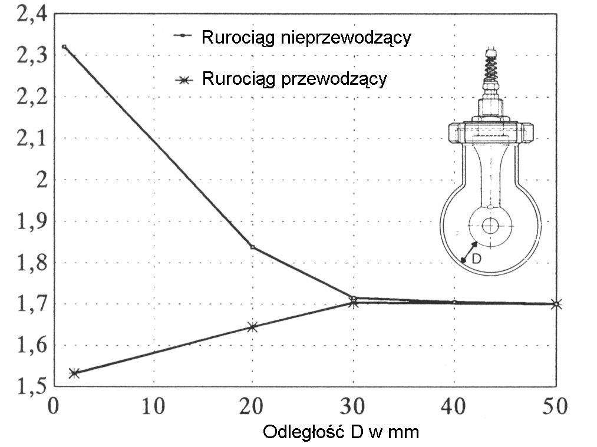
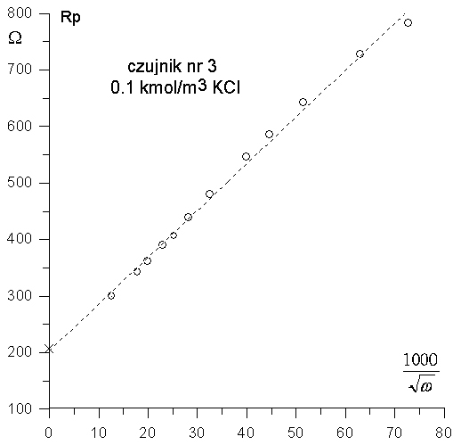
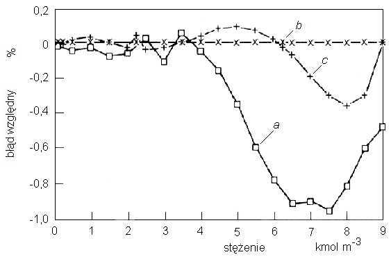

Pomiary przewodnictwa elektrycznego cieczy uzyskały w czasie swojej ponad
stuletniej historii status odrębnej dziedziny pomiarów, zwanej konduktometrią (zakres
konduktometrii cieczy jest zazwyczaj zawężany do pomiarów przewodników jono-
wych, tj. roztworów elektrolitów i stopionych soli). Powstał pełny system elementów
tworzących tę dziedzinę, a w szczególności:
teoria definiująca przedmiot pomiaru, opisująca jego właściwości i proponująca metodologię jego badań,
metody i techniki pomiarowe,
czujniki i układy pomiarowe (ogólnie — techniczne środki pomiarowe),
wzorce wielkości mierzonej,
zasady i środki analizy metrologicznej,
zbiór odpowiednich regulacji prawnych (norm).
Podstawowym zadaniem konduktometrii są pomiary konduktywności elektrycznej,
tj. zdolności do przewodzenia prądu elektrycznego materiałów mających postać cieczy
w zakresie temperatur i ciśnień występujących w przyrodzie, w zastosowaniach
technicznych i w badaniach naukowych. Rozwinięciem konduktometrii są zastosowania
praktyczne oraz sposoby ich realizacji, a także zasady przetwarzania wyników i
uzyskiwania informacji o wielkościach mierzonych pośrednio metodami
konduktometrycznymi. Obszar zastosowań konduktometrii jest bardzo rozległy i obejmuje m.in.:
badania naukowe (przede wszystkim elektrochemiczne metody analizy oraz
wyznaczanie wartości stałych fizykochemicznych), przemysł (pomiary stężeń, kontrola
mycia i płukania, automatyzacja procesów), gospodarkę wodno-ściekową, rolnictwo
i związany z nim przemysł przetwórczy, oceanografię, ochronę środowiska, medycynę
itp. W takim ujęciu np. badania procesów elektrodowych nie wchodzą w podstawowy
zakres zainteresowań konduktometrii. Rozważania na ten temat są prowadzone
w konduktometrii kontaktowej (elektrodowej), ale jedynie z punktu widzenia
sposo-
bów eliminacji szkodliwych skutków tych procesów.
Konduktometrii poświęcono dotychczas wiele publikacji, w tym również monogra-
fii, np. [58, 112
, 180, 220,
221]. Do napisania tej pracy skłoniły autora następujące
motywy: brak podobnego opracowania w języku polskim (jedyna znana autorowi polska
monografia z dziedziny konduktometrii dotyczy pomiarów wykonywanych przy wiel-
kich częstotliwościach [196], inne dostępne materiały zwarte to fragmenty książek
z dziedzin: miernictwo przemysłowe [206],
pomiary wielkości nieelektrycznych [111],
chemia fizyczna [232], itp.), potrzeba uwzględnienia najnowszych osiągnięć w tej dzie-
dzinie, chęć przedstawienia własnego, pod pewnymi względami nowego spojrzenia na
tę dziedzinę — ukształtowanego w wyniku trzydziestu lat pracy, które zaowocowały
licznymi publikacjami, patentami i zastosowaniami praktycznymi.
Główny obszar zainteresowań oraz badań autora obejmuje zagadnienia związane
z pomiarami przewodnictwa elektrycznego, jakie wykazują ciekłe roztwory
elektroliłów w zakresie małych częstotliwości (akustycznych i nadakustycznych), tj. w
warunkach, w których można pominąć prąd przesunięcia oraz wpływ częstotliwościowej
dyspersji konduktywności. To przewodnictwo jest wykorzystywane w znacznej
większości praktycznych zastosowań konduktometrii: laboratoryjnych (głównie
analitycznych), przemysłowych, środowiskowych oraz biomedycznych (źródła prądów
generowanych w organizmach żywych na podłożu fizjologicznym charakteryzują się tym,
że ich charakterystyki czasowe leżą w zakresie małych częstotliwości [19]).
Większość metod i narzędzi pomiarowych rozważanych w tej pracy może mieć
zastosowanie również w paśmie większych częstotliwości — do kilkuset kHz, a nawet
pojedynczych MHz, tj. w zakresie częstotliwości często stosowanych np. w tomografii
impedancyjnej, badaniach struktur biologicznych.
W większości rozważań ośrodek badany jest rozpatrywany jako idealny jednorodny
przewodnik objętościowy (określenie objętościowy oznacza, iż rozpływ prądu jest
trójwy-
miarowy, w odróżnieniu od ograniczonego do jednego wymiaru przepływu prądu w
od-
izolowanych cienkich przewodach). Zazwyczaj zakłada się, że przewodnik objętościowy
jest jednodomenowy (ma charakter czysto rezystywny), izotropowy oraz (często)
jednorod-
ny — są to założenia upraszczające. W tej pracy poruszony jest również problem pomiarów
konduktywności lokalnych w ośrodku niejednorodnym. W zasadzie rozpatrywany jest
ośro-
dek nieruchomy (bez przepływu), z pomijalnym wpływem pola magnetycznego — w
pew-
nych aspektach prowadzone są jednak również rozważania o charakterze ogólniejszym.
W monografii przedstawiono najważniejsze wątki i aspekty prac wykonanych
przez autora w dziedzinie konduktometrii. Należą do nich w szczególności (podano
ważniejsze prace wykonane już po obronie pracy doktorskiej)
badania i ocena właściwości metrologicznych i użytkowych czujników konduktometrycznych [89,
143,
144,
157,
158,
159,
161,
168,
241],
modelowanie komputerowe czujników i współpracujących z nimi układów pomiarowych [130,
145,
147,
148,
240,
243],
projektowanie i konstruowanie czujników oraz układów pomiarowych stosowanych w konduktometrii [
71,
81,
89,
124,
126,
138,
150,
151,
162,
163,
164,
167,
169],
kompensacja temperaturowa w pomiarach przewodnictwa roztworów — metody i sposoby realizacji [
82,
89,
125,
128,
129,
138,
140,
142,
169],
pomiary konduktywności metodą bezwzględną, w szczególności badania nad zastosowaniem w konduktometrii liczalnego czujnika czteroelektrodowego według
koncepcji van der Pauwa [
135,
137,
143,
144,
146,
157,
158,
159,
160,
242],
określanie stężeń roztworów metodą konduktometryczną, w tym: wzorcowanie wielowymiarowe, wzory interpolacyjne, metody inkrementowe [
82,
87,
131,
132,
133,
134,
149,
152,
153,
154,
155,
156],
analiza metrologiczna właściwości czujników i metod pomiarowych stosowanych w konduktometrii [
87,
89,
131,
134,
143,
145,
147,
163,
164,
158,
241,
242]
(w pracy elementy tej analizy są rozproszone — autor uznał za celowe dołączenie ich do omawianych problemów).
Najwięcej miejsca poświęcono w monografii sposobom unikania i redukcji błędów związanych ze zjawiskami fizycznymi i fizykochemicznymi towarzyszącymi
pomiarom przewodnictwa roztworów elektrolitów. Te błędy mają we współczesnej
konduktometrii znaczenie decydujące, gdyż przy obecnym poziomie rozwoju elektronicznej techniki pomiarowej błędy aparaturowe można uznać za łatwiejsze do
zredukowania, a przez to i za mniej znaczące. Dlatego też za szczególnie istotną
i wartościową część pracy autor uważa rozdziały poświęcone czujnikom konduktometrycznym. Elementy te decydują bowiem o jakości pomiarów konduktometrycznych, co jest często niezauważane lub niedoceniane.
1.2. Zarys rozwoju pomiarów przewodności elektrycznej cieczy
Niekwestionowanym prekursorem nowoczesnej konduktometrii roztworów był
Kohlrausch (druga połowa XIX w.), który zastosował w pomiarach przewodnictwa
prąd zmienny, wprowadził pojęcie stałej czujnika i który, ze współpracownikami,
do-
konał pierwszego bezwzględnego określenia wzorców konduktywności roztworów
elektrolitów. Prace podstawowe z zakresu konduktometrii kontynuowali zwłaszcza
uczeni niemieccy: Wien, Holborn i inni. Usprawnieniem o doniosłym, jak się później
okazało, znaczeniu dla konduktometrii było zastosowanie czteroelektrodowej metody
pomiaru (Newbery, 1918) [112, 258]. Istotny postęp w instrumentalizacji pomiarów
przewodnictwa roztworów nastąpił w latach dwudziestych i trzydziestych XX w.,
głównie dzięki pracom uczonych amerykańskich: Parkera, Jonesa i Shedlovskiego.
Przeprowadzili oni m.in. kompleksowe badania właściwości czujników
konduktometrycznych i dopracowali układy mostków pomiarowych do zastosowań
konduktometrycznych [
74,
75,
76,
78,
79,
188,
223]. Zaproponowali nowe konstrukcje czujników,
zwłaszcza wzorcowych, i dokonali bezwzględnego określenia wzorców
konduktywności roztworów z dokładnością znacznie lepszą niż wzorce Kohlrauscha [
77,
224].
O jakości tych prac najlepiej może świadczyć to, iż wzorce demalne KCl Jonesa z lat
trzydziestych są do dzisiaj uważane w większości krajów świata, również w Polsce, za
podstawowe wzorce konduktywności [33]. Dokładniejsze określenie wzorców KCl
nastąpiło dopiero pod koniec lat osiemdziesiątych i w latach dziewięćdziesiątych XX
wieku [
69,
273].
Rozwój zastosowań konduktometrii do celów praktycznych następował wraz
z rozwojem badań podstawowych w tej dziedzinie, a w pewnych okresach nawet je
przyśpieszał. Potrzeby praktyczne stały się na przykład inspiracją do wprowadzenia
czujników bezelektrodowych typu transformatorowego (Relys, 1951), stosowanych
w zakresie małych częstotliwości pomiarowych. Czujniki transformatorowe
umożliwiły skuteczne rozwiązanie większości problemów związanych z występowaniem
impedancji elektrodowych oraz zanieczyszczeń i korozji elektrod, stanowiących
podstawowe ograniczenia w korzystaniu z tradycyjnych czujników dwuelektrodowych
w trudnych warunkach pracy narzucanych przez zastosowania przemysłowe [
11,
29,
54] (bezelektrodowe metody pomiarów przewodnictwa w zakresie wielkich
częstotliwości, z wykorzystaniem czujników pojemnościowych i indukcyjnych, były co
prawda znane już wcześniej, niemniej w zastosowaniach przemysłowych nigdy nie
osiągnęły one znaczącego udziału). Potrzeby praktyczne spowodowały nasilenie badań
nad specjalnymi konstrukcjami czujników, np. do pomiarów w warunkach
występowania dużych ciśnień [
44,
219], do pomiarów fluktuacji konduktywności lokalnych
[2,
175], a także do pomiarów metodą bezwzględną — realizowaną z użyciem
czujników o teoretycznie liczalnej geometrii [
25,
182,
247].
Rozwój technicznego zaplecza konduktometrii następował zgodnie z prawami
rozwoju systemów technicznych [3]. Zasadnicze znaczenie miał i ma w nim postęp
w elektronice i informatyce. Umożliwia on doskonalenie przyrządów i przetworników
konduktometrycznych w aspekcie funkcjonalnym, użytkowym i metrologicznym — np.
poprawę dokładności pomiarów konduktywności, finezyjne metody kompensacji
temperaturowej, bezpośredni odczyt wielkości mierzonych pośrednio (np. stężenia,
całkowitego zasolenia), skalowanie dostosowane do wymagań określonych zastosowań,
automatyczną realizację metod przyrostowych, itp. Również w konduktometrii
przełomem stało się wprowadzenie do przyrządów mikroprocesorów. Możliwość
programowania i korzystania z coraz większej pamięci dały przyrządom i przetwornikom
elastyczność funkcjonalną, przy jednoczesnej poprawie parametrów metrologicznych
i ułatwieniu obsługi. Pojawił się inteligentny przetwornik konduktometryczny, który
może współpracować z dowolnym innym przyrządem lub komputerem — i dzięki temu
może być włączony w każdy system pomiarowy [
14,
55,
212,
275]. Może on być
realizowany jako urządzenie wirtualne i może działać nawet jako wielofunkcyjny
analizator [267]. Funkcje urządzenia można praktycznie natychmiast, i w sposób dowolny,
dostosować do indywidualnych potrzeb użytkownika.
Zastosowanie komputerowego modelowania i symulacji znacznie ułatwia i
przyśpiesza doskonalenie konstrukcji czujników i układów pomiarowych. Postęp w
cyfrowym przetwarzaniu sygnałów oraz implementacja sztucznej inteligencji przyczyniają
się do istotnej poprawy właściwości metrologicznych i użytkowych aparatury
konduktometrycznej. Umożliwiają one na przykład rozszerzenie zakresu pomiarowego do
granic fizycznych możliwości czujników, bez pogorszenia lub nawet przy poprawie
parametrów metrologicznych oraz skróceniu czasu pomiaru. Wprowadzanie nowych
technologii wpływa na obniżenie kosztów wytwarzania, miniaturyzację urządzeń oraz
redukcję poboru energii, co umożliwia masowe wytwarzanie tanich przyrządów
przenośnych, np. personalnych analizatorów medycznych. Następuje integracja czujnika
z przyrządem, a w rozwiązaniach przemysłowych — z przetwornikiem pomiarowym.
Prąd elektryczny w przewodnikach jest związany z ruchem nośników ładunku
elektrycznego. Miarą zdolności danego przewodnika do przewodzenia prądu
elektrycznego jest konduktywność o (przewodność właściwa), zdefiniowana zgodnie
z prawem Ohma [
66,
80,
229]:
$$ \sigma=\frac{J}{E}=\frac{1}{\rho} $$
gdzie \( J \) - gęstość prądu, \( E \) - natężenia pola elektrycznego (gęstość prądu i natężenie
pola są wektorami, ale ponieważ mają taki sam kierunek i zwrot, można w tych
rozważaniach pominąć zapis wektorowy), \( \rho \) - rezystywność. Gęstość prądu w
przewodniku, nie przesądzając, jakie nośniki przenoszą ładunek, można wyrazić równaniem
$$ J=e\left(n_{+} v_{+}+n_{-} v_{-}\right) $$
Nośniki ładunków elektrycznych są hamowane oporem ośrodka (opór lepkości
[235]), w wyniku czego ich ruch odbywa się ze stałą prędkością.
W ośrodkach przewodzących nośnikami ładunków elektrycznych są elektrony
(przewodniki elektronowe) lub jony (przewodniki jonowe). Przewodnictwo elektronowe
wykazują przede wszystkim metale i ich stopy, w stanie stałym i ciekłym
[109] (jeżeli metal ulegnie stopieniu, jego konduktywność gwałtownie maleje, ale
nadal jest bardzo duża [235]). Przewodnictwo jonowe występuje w roztworach
elektrolitów oraz w stopionych solach, ale także w solach w stanie stałym (czasami
to przewodnictwo jest znaczne, np. w AgJ) oraz w stałych elektrolitach na bazie
związków organicznych. Wyjątkami są przypadki, w których obok przewodnictwa
jonowego występuje w roztworach również pewien udział przewodnictwa
elektronowego — przykładem mogą być pewne roztwory metali alkalicznych w amoniaku lub
w stopionych chlorkach tych metali [190]. Wśród cieczy przewodzących największe
znaczenie mają roztwory wodne elektrolitów, które stanowią ogromną większość
wszystkich cieczy i które warunkują wiele najistotniejszych procesów, przede
wszystkim procesy biologiczne. Ze względu na bardzo duże różnice w prędkościach ruchu
elektronów i jonów (różnią się \( 10^{5} \)) razy, np. ruchliwość elektronów w miedzi wynosi
\( 3 \cdot 10^{-3} \) \( m^{2} \cdot V{-1} \cdot s{-1}\), podczas gdy ruchliwość jonów Cl- w rozcieńczonych roztworach
wodnych jest równa tylko \( 6,79 \cdot 10^{-8} \cdot m^{2} \cdot V^{-1} \cdot s^{-1} \) — i w dodatku maleje ze wzrostem stężenia),
przewodniki elektronowe charakteryzują się dużo większymi wartościami
konduktywności — wzór (2.3). Dla przykładu, w temperaturze \( 25^{\circ} \mathrm{C} \): konduktywność
miedzi wynosi \( 58 \cdot 10^{6} \quad S \cdot m^{-1} \) [83], konduktywność najlepiej przewodzących roztworów
elektrolitów (stężonych roztworów mocnych kwasów) jest rzędu \( 100 \quad S \cdot m^{-1} (1 \quad S \cdot cm^{-1}) \),
a konduktywność chemicznie czystej wody tylko \( 55 \cdot 10^{-6} \quad S \cdot m^{-1} \) [12, 104].
Wśród cieczy przewodzących prąd elektryczny szczególnymi cechami wyróżniają
się stopione sole [232], które mogą występować w bardzo szerokim zakresie
temperatur (np. stopiony NaCl od 1074 K do 1738 K), wykazują bardzo dobre
przewodnictwo (konduktywność rzędu \( 1 \quad S \cdot cm^{-1} \) ), dobrą rozpuszczalność w stosunku do wielu
substancji chemicznych, dużą lepkość itp. Wynika to z ich struktury — zbudowane są
prawie wyłącznie z jonów.
Konduktywność przewodników, zwłaszcza jonowych, bardzo mocno zależy od
temperatury, przy czym konduktywność przewodników metalicznych maleje ze
wzrostem temperatury (wyjątkiem są niektóre stopy metali), a konduktywność
przewodników jonowych wzrasta.
Istotna różnica między przewodnictwem elektronowym metali i jonowym elektrolitów polega również na tym,
iż przepływowi prądu przez metale
nie towarzyszy dostrzegalny przepływ materii (elektrony mają bardzo małą masę, poza tym elektrony są
identyczne, niezależnie od rodzaju atomu), który natomiast występuje przy przepływie
prądu jonowego przez roztwory elektrolitów. Inne są również właściwości warstwy
granicznej: przewodnik elektronowy — przewodnik elektronowy oraz przewodnik
elektronowy — przewodnik jonowy. W tym ostatnim przypadku na granicy faz tworzy
się warstwa ładunków elektrycznych i mogą zachodzić reakcje chemiczne (rozdział
2.2.3), w wyniku czego warstwa graniczna ma właściwości impedancji elektrycznej
o charakterze pojemnościowo-rezystancyjnym.
Ciecze, podobnie jak gazy, nie mają własnego kształtu, z drugiej strony, tak jak
ciała stałe, są mało ściśliwe, tzn. mają określoną objętość własną. Mają też stosunkowo dużą gęstość. Dwoisty charakter właściwości cieczy jest spowodowany osobliwościami
ruchu ich cząsteczek. W gazach cząsteczki poruszają się chaotycznie, bez żadnego porządku. W ciałach stałych krystalicznych cząsteczki drgają względem
określonych położeń równowagi (węzłów siatki krystalicznej). Cząsteczki cieczy
również wykonują drgania względem położeń równowagi, tyle że, w odróżnieniu od
ciał stałych, te położenia równowagi każdej z cząsteczek nie są stałe (ich zmiany
w czasie są rzędu \( 10^{-10} m \) ) [72].
Z przedstawionych rozważań wynika, że:
pomiary konduktywności elektrycznej wszystkich cieczy wymagają stosowania
naczynia pomiarowego, nadającego badanej próbce odpowiedni kształt; ze względu na
bardzo duże różnice w spotykanych wartościach konduktywności ciekłych przewodników elektronowych i jonowych trzeba stosować naczynia pomiarowe o różnych
kształtach i wymiarach (różne czujniki),
w pomiarach konduktywności elektrycznej przewodników jonowych, wykonywanych metodami
elektrodowymi (kontaktowymi), chcąc uniknąć elektrolizy oraz
gromadzenia się ładunków przy powierzchniach elektrod — i przez to zwiększenia rezystancji
warstwy granicznej, należy stosować prąd przemienny o odpowiednio dużej
częstotliwości; również wtedy występują jednak impedancje międzyfazowe, których
wpływ trzeba uwzględniać (znane są sposoby pomiarów stałoprądowych, jednak ze
względu na występujące w nich trudności są one stosowane tylko w wyjątkowych
przypadkach),
w pomiarach konduktywności zasadnicze znaczenie ma uwzględnianie wpływu zmian temperatury.
2.2. PRZEWODZENIE PRĄDU ELEKTRYCZNEGO PRZEZ ROZTWORY ELEKTROLITÓW
Właściwości roztworów elektrolitów, w tym ich zdolność do przewodzenia prądu
elektrycznego, opisuje i wyjaśnia elektrostatyczna teoria elektrolitów [6, 27, 63, 64,
100, 270]. Podstawy współczesnej teorii elektrolitów zostały opracowane w latach
1920—1960, przez takich badaczy, jak: Debye, Huckel, Onsager, Fuoss, Falkenhagen i inni. Jej rozwój trwa.
2.2.1. MECHANIZM PRZEWODZENIA PRĄDU ELEKTRYCZNEGO W ROZTWORACH ELEKTROLITÓW
Nośnikami prądu elektrycznego w ciekłych roztworach elektrolitów są jony. Ruch
jonów jest wypadkową działania trzech czynników: ruchów cieplnych o charakterze
losowym, przepływu ośrodka jako całości oraz sił działających na jony. Te ostatnie
siły mogą pochodzić zarówno od wewnątrz, jak i z zewnątrz. Siły wewnętrzne to wynik
występowania różnych gradientów: stężenia, temperatury i prędkości oraz
oddziaływań elektrostatycznych między jonami. Siły zewnętrzne mogą być powodowane
zmianami ciśnienia, polem grawitacyjnym lub polem elektrycznym. Należy tu podkreślić, iż w czasie przepływu
jonów pod działaniem stałego pola ich liczba w roztworze
elektrolitu nie zmienia się, tzn. jony zachowują się zgodnie z prawem ciągłości przepływu. Jedyną przyczyną
powstawania jonów w roztworze jest dysocjacja, tj. rozpad
cząsteczek pod działaniem rozpuszczalnika (efekt dielektryczny i solwatacja lub hydratacja). Roztwór
elektrolitu, jako całość, jest elektrycznie obojętny, tzn. zawiera tyle
samo jonów dodatnich co ujemnych. Dalsze rozważania będą ograniczone do przepływu przez roztwór prądu
elektrycznego wywołanego działaniem zewnętrznego pola
elektrycznego. Bez działania takiego pola jony podlegałyby jedynie wpływom ruchów cieplnych cząsteczek
rozpuszczalnika oraz wzajemnych oddziaływań, przede wszystkim elektrostatycznych.
Po przyłożeniu zewnętrznego pola na nieuporządkowane ruchy cieplne nakłada się ruch jonów w kierunku
działania pola. Jony, poruszając się
przez roztwór, muszą pokonywać tarcie. Ustala się równowaga pomiędzy siłą, z jaką działa pole na ładunki
jonów oraz siłą tarcia wewnętrznego. W wyniku tego jony
poruszają się ruchem jednostajnym, ze średnią prędkością v proporcjonalną do natężenia pola E, tzn.
$$ v=u E, $$
gdzie: \( v \) — prędkość wędrowania jonu, \( u \) — ruchliwość jonu. Ruchliwość u jest prędkością, jaką osiąga jon pod działaniem jednostkowego gradientu potencjału. Większość
jonów w roztworach wodnych wykazuje ruchliwości rzędu \( 5 \cdot 10^{-8} m^{2} \cdot V^{-1} \cdot s^{-1} \)
jedynie
ruchliwości jonów H+ (H30+) i OH- są wyraźnie większe (te jony są produktem dysocjacji kwasów i zasad oraz wody i hydrolizujących soli). Ruchliwość jonów maleje ze
wzrostem tarcia wewnętrznego, które zależy w decydującym stopniu od właściwości
rozpuszczalnika (głównie od jego lepkości i stałej dielektrycznej) i temperatury (ze
wzrostem temperatury lepkość rozpuszczalnika maleje) oraz od bezpośredniego otoczenia, w jakim porusza się jon (atmosfera jonowa, solwatacyjna otoczka z cząsteczek
wody, jony połączone w pary lub trójki jonowe). Istotny wpływ na wartość tarcia ma
stężenie roztworu oraz obecność w roztworze innych rodzajów jonów. Przy większych
stężeniach rośnie zagęszczenie jonów w roztworze i maleją odległości między jonami,
wzrasta więc wpływ wzajemnych oddziaływań między nimi.
Przedstawiony opis mechanizmu przewodzenia obowiązuje w zakresie natężeń
pola elektrycznego mniejszych od około \( 0,1 \cdot 10^{6} \quad V \cdot m^{-1} \) i przy częstotliwościach
zmian pola mniejszych od około \( 10^{7} Hz \) . Po przekroczeniu tych wartości należy
uwzględniać dodatkowo zjawiska związane z deformacjami i oscylacjami atmosfery
jonowej (zjawisko Wiena, zjawisko elektroforetyczne oraz zjawisko relaksacyjne),
które przejawiają się zwiększeniem konduktywności — nawet o kilka do kilkunastu
procent.
Porównanie konduktywności nie umożliwia jednoznacznej oceny roztworów różnych elektrolitów pod względem
zdolności do przewodzenia prądu, ponieważ ta sama
objętość roztworu może zawierać różną liczbę jonów, w zależności od stężenia elektrolitu.
W chemii fizycznej używane jest w tym celu przewodnictwo molowe \( \Lambda \),
zdefiniowane jako stosunek konduktywności \( \kappa \) (tak oznacza się w elektrochemii konduktywność
przewodników jonowych, w odróżnieniu od konduktywności \( \sigma \) przewodników
elektronowych) roztworu do jego stężenia molowego \( c \), tzn.
$$ \Lambda=\frac{\kappa}{c}, \mathrm{~S} \cdot \mathrm{m}^{2} \cdot \mathrm{mol}^{-1} $$
lub
$$ \Lambda=\frac{\kappa \cdot 1000}{c}, \mathrm{~S} \cdot \mathrm{cm}^{2} \cdot \mathrm{mol}^{-1} $$
Przewodnictwo molowe wprowadzono, zgodnie z zaleceniami IUPAC, w miejsce stosowanej dawniej wielkości „przewodnictwo równoważnikowe”, oznaczanej przez
i zdefiniowanej jako stosunek konduktywności do stężenia równoważnikowego.
Zatem
$$ \Lambda^{*}=\frac{\Lambda}{z_{+} v_{+}}=\frac{\Lambda}{\left|z_{-}\right| v_{-}} $$
gdzie \( z_{+}, z_{-} \) — wartościowość kationów i anionów, \( v_{+}, v_{-} \) — liczba kationów i anionów
powstałych z dysocjacji jednej cząsteczki elektrolitu.
W porównaniu przewodnictwa molowego różnych elektrolitów, zawierających jony o różnych ładunkach, największe znaczenie ma to, czy ilości substancji tworzące
„jeden mol” niosą tę samą liczbę ładunków. Dlatego, ze względów praktycznych,
o roztworze, który zawiera 98 g kwasu siarkowego w \(1 dm^{3} \) roztworu wygodniej mówić, że ma stężenie \(2 \quad mol \cdot dm^{-3} \quad {1}/{2} \quad H_{2}S0_{4} \), zamiast tradycyjnie
\( 1 mol \cdot dm \) H2S04. Podane w ten sposób przewodnictwo molowe jest liczbowo równe przewodnictwu
równoważnikowemu [222]. Umożliwia to unikanie pomyłek wynikających z tego, że
zarówno w klasycznej teorii przewodnictwa elektrolitycznego, jak i w większości starszych źródeł danych z zakresu konduktometrii stosuje się przewodnictwo równoważnikowe.
ZWIĄZEK MIĘDZY PRZEWODNICTWEM MOLOWYM 1 RUCHLIWOŚCIAMI ORAZ LICZBAMI PRZENOSZENIA JONÓW
W roztworach nieskończenie rozcieńczonych (CA)) przewodnictwo molowe jest sumą udziałów poszczególnych jonów (prawo Kohlrauscha niezależnego ruchu jonów), co można zapisać:
$$ \Lambda^{0}=v_{+} \lambda^{0}_{+} + v_{-} \lambda^{0}_{-} $$
gdzie: \( \Lambda^{0} \) — przewodnictwo molowe w nieskończonym rozcieńczeniu, \( \lambda^{0}_{+} \) i \( \lambda^{0}_{-} \)— prze-
wodnictwa jonowe kationów i anionów w nieskończonym rozcieńczeniu (dla przewodnictwa równoważnikowego: \( \Lambda^{0}= \lambda^{*0}_{+} + \lambda^{*0}_{-} \) ) [100]. Równanie (2.6) obowiązuje
zarówno dla mocnych, jak i słabych elektrolitów, gdyż w nieskończonym rozcieńczeniu stopień dysocjacji \( \alpha = 1 \) . Prawo Kohlrauscha nie umożliwia określenia udziałów
poszczególnych jonów w przewodzeniu prądu elektrycznego, stąd brak selektywności
metod konduktometrycznych stosowanych w sposób bezpośredni. Rozszerzając to
prawo na roztwory o skończonym rozcieńczeniu, można powiązać przewodnictwo molowe z ruchliwością jonów poprzez konduktywność roztworu. Konduktywność
roztworu mocnego elektrolitu (a = l) można wyrazić wzorem [100]:
$$ \kappa=\left(u_{+}+u_{-}\right) z_{+} v_{+} F c=\left(u_{+}+u_{-}\right)\left|z_{-}\right| v_{-} F c $$
a jego przewodnictwo molowe
$$ \Lambda=\left(u_{+}+u_{-}\right) z_{+} v_{+} F=\left(u_{+}+u_{-}\right)\left|z_{-}\right| v_{-} F $$
gdzie: \( z_{+} \) i \( z_{-} \) — wartościowości kationów i anionów, \( u_{+} \) i \( u_{-} \) — ruchliwości kationów i anionów, \( F \) — stała Faradaya. W przypadku słabych elektrolitów dysocjacja nie jest
pełna ( \(a < 1 \)), prawe strony wzorów (2.7) i (2.8) trzeba więc pomnożyć przez stopień dysocjacji \( \alpha \). Iloczyn \( Fu_{i}z_{i} \), występujący w (2.8), jest przewodnictwem jonowym (przy
stężeniu c) i jest oznaczany przez \( \lambda_{i} \), tzn. :
$$ \Lambda=v_{+} \lambda_{+}+v_{-} \lambda_{-} $$
(z \( \lambda_{-} \) można uzyskać \( \lambda^{0}_{-} \) stosując ekstrapolację do nieskończenie małego stężenia).
Udział jonów dodatnich i ujemnych w przewodzeniu prądu przez roztwór jest określony przez liczby przenoszenia \( t_{+} \) i \( t_{-} \) (z definicji: \( t_{-} + t_{-} = 1\)). Ponieważ liczby
przenoszenia określają ułamek całego ładunku, przenoszony przez każdy jon, w przypadku
prostego elektrolitu można więc zapisać: \( \lambda_{+} = t_{+}\lambda_{i} \) oraz \( \lambda_{-} = t_{-}\lambda_{i} \).
Rys. 2.1. Konduktywność roztworow wodnych kilku elektrolirow w temperaturze \( 18^{\circ} \mathrm{C} \)
w zaleznosci od stężenia [190]
Rys. 2.2. Przewodnictwo molowe roztworow wodnych kilku elektrolitow w temperaturze \( 25^{\circ} \mathrm{C} \) jako funkcja
stezenia [190]. Liniami przerywanymi zaznaczono sposob wyznaczania \( \Lambda_{0} \) dla roztworow mocnych elektrolitow.
ZALEŻNOŚĆ PRZEWODNICTWA MOLOWEGO OD STĘŻENIA ELEKTROLITU
Przewodnictwo molowe zależy przede wszystkim od rodzaju i stężenia elektrolitu,
rodzaju rozpuszczalnika oraz od temperatury roztworu. Największą wartość osiąga
w roztworach o nieskończonym rozcieńczeniu i zmniejsza się ze wzrostem stężenia w wyniku nasilania się oddziaływań międzyjonowych, przejawiających się
przede wszystkim zjawiskami elektroforezy i relaksacji (te zjawiska wyjaśnia teoria atmosfer jonowych [6, 230]). Ujmuje to graniczne prawo Onsagera:
$$ \Lambda=\Lambda^{0}-\Lambda_{r}-\Lambda_{e} $$
gdzie: \( \Lambda \) — przewodnictwo przy aktualnym stężeniu, \( \Lambda^{0} \) — przewodnictwo przy nieskończenie małym stężeniu
(tzw. graniczne przewodnictwo molowe), \( \Lambda_{r}, \Lambda_{e} \) , — wyrazy reprezentujące zmniejszenie przewodnictwa w wyniku występowania relaksacji
i elektroforezy. Modyfikację wzoru (2.10), uwzględniającą zależność lepkości rozpuszczalnika od stężenia elektrolitu, zaproponowali Falkenhagen i Leist [
104,
205]:
$$ \Lambda=\frac{\eta^{0}}{\eta}\left(\Lambda^{0}-\Lambda_{r}-\Lambda_{e}\right) $$
oraz
$$ \eta=\eta^{0}\left(1+A_{1} c^{3 / 2}+A_{2} c\right) $$
gdzie: \( \eta \) i \( \eta^{0} \) — współczynnik tarcia wewnętrznego (lepkości) roztworu przy stężeniu \( c \)
i w nieskończonym rozcieńczeniu, \( A_{1} \) — współczynnik, który jest funkcją ruchliwości
i wartościowości jonów oraz temperatury i przenikalności elektrycznej rozpuszczalni-
ka, \( A_{2} \) — współczynnik empiryczny (pomijalny dla małych stężeń).
Rys. 2.3. Ilustracja granicznego prawa Onsagera [205]
Zgodnie ze współczesną teorią elektrolitów [
10,
27,
63,
100] przewodnictwo roztworów mocnych elektrolitów, o małych i średnich
stężeniach ( \( c < 0,1 \quad kmol \cdot m^{-3} \) ), można dobrze opisać równaniem Fuossa i Onsagera [43]:
$$ \Lambda=\Lambda^{0}-S c^{1 / 2}+E c \log c+J_{1} c+J_{2} c^{3 / 2} $$
w którym współczynniki S, E, \( J_{1} \), \( J_{2} \) zawierają udziały zarówno relaksacji, jak i elektroforezy. Dla roztworów asocjujących,
\( c \) w równaniu (2.13) powinno być zastąpione
przez \( \alpha c \) (\( \alpha \) — stopień dysocjacji, \( 1- \alpha \) — stopień asocjacji). Przypadkiem szczególnym
równania (2.13) jest empiryczne prawo pierwiastka kwadratowego, sformułowane
przez Kohlrauscha: \( \Lambda = \Lambda^{0} - a \sqrt{c} \) (a — stała empiryczna). Dla prostych elektrolitów
typu 1-1 współczynnik S w równaniu (2.13) można obliczyć ze wzoru
$$ S=B_{1} \Lambda^{0}+B_{2} $$
w którym \( B_{1} \) i \( B_{2} \) są teoretycznie liczalnymi współczynnikami uwzględniającymi re-
laksację i elektroforezę, zależnymi jedynie od rozpuszczalnika i temperatury [63, 205].
Dla elektrolitów dysocjujących na jony o większej wartościowości wyrażenie określające S jest bardziej złożone. Wartość S można
wyznaczyć doświadczalnie z granicznego prawa Onsagera \( E = J_{1} = J_{2} = 0 \). Współczynnik E jest natomiast określony równaniem
$$ E=E_{1} \Lambda^{0}-k E_{2} $$
w którym \( E_{1} \) i \( E_{2} \) są teoretycznie liczalnymi współczynnikami zależnymi od rozpuszczalnika, temperatury i wartościowości
jonów [63], k = 1, 3/2 lub 2 [10].
Ze względu na bardzo złożony charakter oddziaływań międzyjonowych i bardzo
dużą liczbę czynników, które na nie wpływają, dotychczas brak jest ściśle teoretycznego opisu zależności przewodnictwa
roztworów od ich stężenia w zakresie dużych stężeń [58]. Do celów praktycznych korzysta się z wzorów półempirycznych, uzyskanych na podstawie wyników
doświadczalnych, z uwzględnieniem już przedstawionych wzorów uzasadnionych teoretycznie [63, 132, 133]. Ten problem jest szerzej
omówiony w rozdziale 9.2.
2.3. WPŁYW TEMPERATURY NA PRZEWODNICTWO MOLOWE I KONDUKTYWNOŚĆ ROZTWORÓW ELEKTROLITÓW
Roztwory elektrolitów, w odróżnieniu od przewodników metalicznych, ze wzrostem temperatury zwiększają swoje przewodnictwo
elektryczne. Jest to bardzo znaczny przyrost, najczęściej 1—3 %/\( ^{\circ} \mathrm{C} \), czasami więcej. Wynika on z jonowego charakteru
przewodnictwa — wzrost temperatury zwiększa ruchliwość wszystkich jonów. Współczynnik temperaturowy zmian przewodnictwa
jest zazwyczaj tym mniejszy, im większe jest przewodnictwo jonowe [6, 230]. Zasadnicze znaczenie ma zmniejszanie się
lepkości rozpuszczalnika ze wzrostem temperatury (prawo Waldena: \( \Lambda^{0} \eta_{0} \) ). Ze
względu na zależność lepkości roztworu również od stężenia elektrolitu problem jest
bardziej złożony — wzór (2.8). Temperatura wpływa ponadto na liczby przenoszenia —
ich wartości zazwyczaj wyrównują się ze wzrostem temperatury. Zależność przewodnictwa molowego od
temperatury można opisać równaniem empirycznym [230]
$$ \Lambda_{t}=\Lambda_{t=0}\left(1+\alpha t+\beta t^{2}\right) $$
gdzie: \( \Lambda_{t} \) \( \Lambda_{t=0} \) — przewodnictwo molowe odpowiadające temperaturze t i \( 0^{\circ} \mathrm{C} \),
\( \alpha \) i \( \beta \) — współczynniki doświadczalne, których wartości zależą od rodzaju elektrolitu. W niektórych przypadkach, zwłaszcza
w wąskich przedziałach temperatur, można pominąć p. Współczynnik a ma najmniejszą wartość dla kwasów,
średnią dla zasad i największą dla soli. Słabe elektrolity mają współczynnik a większy niż mocne. Temperaturowe
współczynniki zmian 11 roztworów wodnych mają wartości podobne jak dla lepkości
wody, lecz z przeciwnym znakiem (prawo Waldena). Poza temperaturą na wartość
przewodnictwa wpływa również ciśnienie — w sposób podobny jak na płynność (od-
wrotność lepkości) rozpuszczalnika.
Mechanizm zjawisk decydujących o przewodzeniu prądu elektrycznego przez
roztwory elektrolitów jest bardzo złożony i dotychczas nie są znane ogólne wzory teoretyczne określające zależność
przewodnictwa roztworów od temperatury. Ze względu
na zastosowania praktyczne dalsze rozważania będą prowadzone dla konduktywności
lub rezystywności. W praktyce korzysta się z wzorów empirycznych, uzyskiwanych
przez aproksymację wyników doświadczalnych [
21,
128]. Do aproksymacji używa się
wielomianów algebraicznych, najczęściej do czwartego stopnia [210]. Takie postępowanie zaleca również norma IEC dotycząca pomiarów
konduktometrycznych [66], według której:
$$ \kappa_{t}=\kappa_{t_{r}}\left[1+\alpha \Delta t+\beta(\Delta t)^{2}+\gamma(\Delta t)^{3}+\ldots\right] $$
gdzie: \( \kappa_{t} \) i \( \kappa_{t_{r}} \) — konduktywność roztworu w temperaturze pomiaru t i w temperaturze
odniesienia \( t_{r}, \Delta t = t — t_{r}, \alpha, \beta, \gamma \)— współczynniki temperaturowe (\( \alpha \)i \( \beta \) mają tu wartości
inne niż w (2.16)).
W wąskim przedziale temperatur często wystarczająco dokładny jest opis funkcją liniową
$$ \kappa_{t}=\kappa_{t_{r}}(1+\alpha \Delta t) $$
wtedy
$$ \alpha=\frac{\kappa_{t}-\kappa_{t_{r}}}{\kappa_{t_{r}}} \frac{1}{\Delta t} $$
Wzór (2.19) definiuje współczynnik a średni w przedziale temperatur \( \Delta t \). Może
on być wyrażany w procentach (w %/K). Wartość temperatury odniesienia
przyjmuje się w zależności od zastosowania. W pracach laboratoryjnych obecnie zaleca
się tr = \( 25^{\circ} \mathrm{C} \)(dawniej \( 18^{\circ} \mathrm{C} \) lub \( 20^{\circ} \mathrm{C} \)).
Należy pamiętać, iż wartość współczynni-
ków temperaturowych zależy od przyj ętej temperatury odniesienia.
W danych literaturowych można spotkać również inną, różniczkową definicję
współczynnika temperaturowego \( \alpha_{r} \):
$$ \alpha_{r}=\frac{1}{\kappa_{t_{r}}} \frac{d \kappa}{d t} $$
Współczynniki \( \alpha \) i \( \alpha_{r} \) mogą się znacznie różnić, dlatego mylenie ich może prowadzić do poważnych błędów.
Charakter temperaturowych zmian konduktywności zależy zarówno od rodzaju jonów obecnych w roztworze, jak i od ich stężenia — rys. 2.4.
Istotne znaczenie ma
zróżnicowany przebieg takich zjawisk, jak: asocjacja jonów, hydratacja jonów,
częściowa tylko jonizacja słabych kwasów i zasad itp. [21]. Roztwory tych samych
substancji, lecz o różnych stężeniach, mogą wykazywać zasadniczo różne zależności
temperaturowe konduktywności. Dotyczy to zarówno zakresu bardzo małych, jak
i bardzo dużych stężeń. Przykładem pierwszego może być woda z bardzo niewielką
zawartością rozpuszczonych soli. Na rysunku 2.5 pokazano temperaturową zależność
rezystywności wody zdejonizowanej w różnym stopniu [14], parametrem jest
rezystywność P25 w temperaturze \( 25^{\circ} \mathrm{C} \). Wartość \( \rho_{25} \) = 18 \( M\Omega \)cm odpowiada chemicznie
czystej wodzie, natomiast \( \rho_{25} \) = 2 \( M\Omega \)cm — równoważnemu stężeniu 0,206 ppm NaCl
(≈ 0,206 mg/l, co odpowiada wodzie o czystości lepszej niż da się uzyskać przez
destylację). Z kolei względne zmiany (stosunek konduktywności w aktualnej
temperaturze do konduktywności w \( 25^{\circ} \mathrm{C} \)) wody o podobnym i większym zasoleniu
przedstawiono na rys. 2.6. Przykład czystej wody jest ciekawy, gdyż jej
konduktywność zmienia się z temperaturą w sposób nieliniowy, a występujące współczynniki
temperaturowe mają wyjątkowo duże wartości i ponadto mocno zależą od stężenia
rozpuszczonych soli [21]. Wynika to z istotnie różnych właściwości jonów
pochodzących z samej wody i z soli (aczkolwiek w ocenie czystości wody stosuje się
przeliczenie na równoważną zawartość NaCl, w rzeczywistości woda zawiera
zazwyczaj mieszaninę wielu soli). Najmocniej zależy od temperatury konduktywność
(rezystywność) chemicznie czystej wody, która zawiera wyłącznie jony H+ i OH-,
charakteryzujące się mocną i nieliniową zależnością konduktywności od
temperatury — rys. 2.7. Jony soli mają tę zależność znacznie słabszą i prawie liniową — rys.
2.8. Śladowy dodatek soli powoduje więc gwałtowną zmianę kształtu
temperaturowej charakterystyki konduktywności wody. Dodawanie soli powyżej 1 ppm NaCl
(taka zawartość soli odpowiada dobrej wodzie destylowanej) nie powoduje już
istotnych zmian tej charakterystyki.
Rys. 2.4. Wpływ temperatury na konduktywność roztworów wodnych
wybranych elektrolitów (na osi pionowej podano
stosunek konduktywności w aktualnej temperaturze
do konduktywności w temperaturze \( 25^{\circ} \mathrm{C} \)) [129]
Rys. 2.5. Rezystywność wody w różnym stopniu zdejonizowanej, w funkcji temperatury [14]
Rys. 2.6. Względne zmiany konduktywności (\( \kappa_{t}/\kappa_{25} \))
w funkcji temperatury, dla wody czystej oraz z małą zawartością NaCl [121]
Rys. 2.7. Konduktywność chemicznie czystej wody
oraz współczynnika a jej zmian temperaturowych —
w funkcji temperatury [210]
Rys. 2.8. Konduktywność rozcieńczonego roztworu
wodnego NaCl oraz współczynnika a jej zmian
temperaturowych — w funkcji temperatury [210]
W zakresie dużych stężeń podobne efekty wykazują np. wodne roztwory NaOH
i H2S04. Wykresy zależności konduktywności roztworu NaOH od stężenia, w różnych
temperaturach (400g/l odpowiada w przybliżeniu stężeniu 30% wagowych)
[
84,
85] przedstawiono na rys. 2.9, a wykresy zależności konduktywności roztworu
H2S04 od temperatury, dla różnych stężeń — na rys. 2.10. Poszczególne krzywe na
każdym z tych rysunków mają wyraźnie różne kształty.
Problem uwzględniania wpływu temperatury w pomiarach przewodnictwa roztworów przedstawiono w rozdziale 7.
Rys. 2.9. Konduktywność roztworów wodnych NaOH
w funkcji stężenia, dla różnych temperatur [84]
Rys. 2.10. Zmiany konduktywności roztworów wodnych H2S04
w funkcji temperatury, stężenie jako parametr [21] -
zmiany są różne dla różnych stężeń
2.4. ZJAWISKA ZACHODZĄCE NA GRANICY
ROZTWÓR-ELEKTRODA
Roztwór elektrolitu w warunkach równowagi jest elektrycznie obojętny. Po
zetknięciu roztworu z metalową elektrodą po obu stronach powierzchni styku pojawia
się ładunek elektryczny, nadmiarowy w stosunku do każdej z faz. Powstaje
podwójna warstwa elektryczna (PWE) o właściwościach podobnych do kondensatora
elektrycznego [
17,
53,
58].
Siły powodujące jej tworzenie mają w zasadzie charakter
elektrostatyczny, z pewnym udziałem sił niekulombowskich związanych z adsorpcją
specyficzną. W najprostszym przypadku, gdy jony elektrolitu są przyciągane do
powierzchni elektrody tylko siłami kulombowskimi, środki jonów mogą się zbliżyć do
powierzchni elektrody nie bliżej niż na grubość ich otoczki solwatacyjnej (tzn. około
10 10 m). Przestrzeń między powierzchnią elektrody i płaszczyzną przechodzącą
przez środki tych jonów (rys. 2.11) nazywana jest gęstą częścią PWE lub warstwą
Helmholtza. Bliżej elektrody znajdują się cząsteczki zaadsorbowane specyficznie.
Orientujące działanie wytworzonego pola elektrycznego jest dezorganizowane przez
ruchy cieplne jonów, w wyniku czego PWE jest rozmyta od strony roztworu — jest to
dyfuzyjna część PWE, która ma właściwości ładunku objętościowego. W zależności
od stężenia elektrolitu i wielkości oddawanego elektrodzie ładunku, rozciąga się ona
w głąb roztworu na odległość \( 10^{-7}-10^{-8} \) m. W roztworach stężonych w PWE może
przeważać część gęsta, w rozcieńczonych — dyfuzyjna.
Rys. 2. 11. Budowa PWE (podwójnej warstwy elektrodowej) przy niewystępowaniu
adsorpcji specyficznej, według Sterna [53] — a) oraz rozkład potencjału w PWE — b)
Przyjmując analogię pomiędzy PWE i płaskim kondensatorem elektrycznym,
można zapisać, że ładunek warstwy Helmholtza q jest związany z potencjałami i
pojemnością równaniem
$$ q=C_{H}\left(\varphi_{a}-\varphi_{1}\right)=\frac{\varepsilon\left(\varphi_{a}-\varphi_{1}\right)}{4 \pi d} $$
w którym: \( C_{H} \) — pojemność warstwy Helmholtza na jednostkę czynnej powierzchni
elektrody, \( \varphi_{a} \) — skok potencjału między elektrodą i roztworem (rys. 2.11), \( \varphi_{1} \) — skok
potencjału na dyfuzyjnej części PWE, \( \varepsilon \) — przenikalność elektryczna ośrodka, d — gru
bość warstwy Helmholtza. Pojemność \( C_{H} \) składa się z równolegle połączonych po-
jemności: zewnętrznej i wewnętrznej warstwy Helmholtza (w gęstej części PWE mo-
gą się znajdować równocześnie jony oddziałujące elektrostatycznie z powierzchnią
oraz jony i cząsteczki adsorbowane specyficznie). Całkowita pojemność PWE, równa
\( C_{d} \), jest wynikiem szeregowego połączenia \( C_{H} \) i pojemności Cdyf części dyfuzyjnej.
Pojemność Cd różni się tym od typowego kondensatora, że jej wartość zależy od po-
tencjału elektrody. Pojemność Cd na nieutlenionych elektrodach w roztworach wod-
nych wynosi 16—20 \( \mu F/cm^{2} \) , jeżeli w zewnętrznej warstwie Helmholtza znajdują się
kationy i około dwa razy więcej — gdy są tam aniony. Platynowe elektrody czernione
mają tę pojemność 10—\( 10^{4} \) razy większą [58, 76], dzięki bardzo rozwiniętej po-
wierzchni. Druga istotna różnica pomiędzy PWE i typowym kondensatorem polega na
tym, że w wielu przypadkach PWE wykazuje bardzo dużą upływność, której źródłem
są procesy elektrodowe.
Przykładając do elektrod zanurzonych w roztworze napięcie stałe i zwiększając
jego wartość, można uzyskiwać zwiększenie ładunku zgromadzonego w PWE
dopóki nie osiągnie się napięcia elektrolizy. Wtedy przez granicę elektroda-roztwór
zaczyna płynąć prąd, czemu towarzyszy utlenianie na elektrodzie dodatniej i redukcja
na ujemnej. Faradayowskie procesy związane z elektrolizą powodują częściowe
zwarcie PWE, w sposób podobny jak rezystor bocznikuje kondensator (z tym, że
rezystancja reprezentująca elektrolizę zależy od wartości napięcia) [
17,
53]. Procesy
zachodzące na elektrodzie w warunkach przepływu prądu, tzn. przekazywanie ła-
dunku między elektrodą i składnikami roztworu oraz towarzyszące reakcje chemicz-
ne, decydują o wartości tzw. nadnapięcia (nadpotencjału) elektrody, które jest
różnicą pomiędzy wartością potencjału elektrody w stanie równowagi i w warunkach
przepływu prądu.
W danych warunkach, w zależności od rodzaju roztworu, właściwości elektrody
oraz gęstości prądu, o wartości nadnapięcia elektrody decyduje najpowolniejszy
z procesów. Może to być np. zbyt powolna dyfuzja jonów z głębi roztworu do
elektrody — mówimy wtedy o polaryzacji stężeniowej. Trzeba tu zaznaczyć, że
większość z wymienionych procesów elektrodowych występuje w mniejszym lub
większym stopniu również w przypadku polaryzowania elektrody napięciem przemiennym.
Część prądu zmiennego przepływającego przez granicę międzyfazową dokonuje
wtedy przeładowania PWE (wartość jej pojemności nie zależy od częstotliwości),
część natomiast jest związana z procesami faradayowskimi (ta składowa zależy od
częstotliwości). Aczkolwiek PWE powstaje wskutek zanurzenia elektrody w
roztworze, nawet bez przykładania do niej zewnętrznego napięcia, to przepływ prądu przez
PWE powoduje jednak zmianę jej struktury oraz zmianę wartości występującego na
niej skoku napięcia. Na tej podstawie wyróżnia się elektrody niepolaryzowalne
i idealnie polaryzowalne. Elektrody niepolaryzowalne praktycznie nie zmieniają
swojego potencjału przy przepływie prądu stałego, bo cały prąd jest związany z
reakcjami elektrochemicznymi. W odróżnieniu od nich, na elektrodach idealnie
polaryzowalnych w wielu roztworach reakcje elektrochemiczne praktycznie nie
występują, a przepływający prąd elektryczny prawie w całości jest związany ze zmianą
PWE. Potencjał takich elektrod mocno zależy od wartości przepuszczanego przez
nie prądu. Typowymi przykładami elektrod idealnie polaryzowalnych są elektrody
ze złota, platyny, stali nierdzewnej, niklu, stopów tytanu itp. Ponieważ prądy reakcji
takich elektrod są bardzo małe, elektrody tego rodzaju wyróżniają się dużą
odpornością na korozję i dlatego też są powszechnie stosowane w konduktometrii.
2.5. DZIAŁANIE POLA MAGNETYCZNEGO NA ROZTWORY ELEKTROLITÓW
W większości podręczników z chemii fizycznej podaje się, że wpływ pola magnetycznego na
jony w roztworze jest bardzo słaby [
9,
190].
Woda, większość związków
organicznych oraz substancje o połączeniach jonowych są diamagnetykami. Ich
atomy, jony lub cząsteczki nie są obdarzone wypadkowymi, trwałymi momentami
magnetycznymi. W takim przypadku działanie zewnętrznego pola magnetycznego
sprowadza się do zburzenia orbitalnego ruchu elektronów. Ruchy orbitalne elektronów
są tak mocno powiązane z konfiguracją jądrową cząsteczek i jonów, że elektrony nie
mogą ustawić się zgodnie z przyłożonym polem magnetycznym.
Zjawiska zachodzące w roztworach elektrolitów poddanych działaniu pola
magnetycznego są słabo jeszcze zbadaną dziedziną chemii fizycznej [93, 97]. Najczęściej
występujący rozpuszczalnik — woda, po poddaniu działaniu odpowiednio silnego pola
magnetycznego, wykazuje istotne zmiany niektórych właściwości fizykochemicznych,
np. PH i napięcia powierzchniowego oraz niewielką, ale zauważalną zmianę
przenikalności elektrycznej [93]. Użycie takiej wody powoduje np.: przyśpieszenie
koagulacji, zmniejszenie zwilżalności ciał stałych, przyśpieszenie i wzmocnienie adsorpcji,
przyspieszenie rozpuszczania ciał stałych, zwiększenie rozpuszczalności gazów.
Wymienione efekty można uzyskać poddając wodę działaniu pola stałego lub zmiennego,
z tym że wpływ pola zmiennego jest słabszy.
W żadnej publikacji nie udało się autorowi znaleźć bezpośredniej informacji o
wpływie pola magnetycznego na przewodnictwo elektryczne roztworów elektrolitów.
Można przypuszczać, że taki wpływ, być może słaby, występuje — chociażby z
powodu zauważalnej zmiany przenikalności elektrycznej wody (według elektrostatycznej
teorii elektrolitów ma ona zasadniczy wpływ na właściwości, w tym przewodnictwo,
roztworów wodnych). Wpływ pola magnetycznego na przewodnictwo elektryczne
roztworów mógłby się uwidocznić w pomiarach wykonywanych za pomocą
czujników indukcyjnych. Precyzyjne pomiary przewodnictwa roztworów z użyciem
czujnika indukcyjnego wykonał przy częstotliwościach akustycznych Calvert [22].
Uzyskane przez niego wyniki są zgodne z otrzymanymi metodą konwencjonalną (z użyciem
czujnika kontaktowego). Nie można ich jednak uznać za potwierdzenie braku wpływu
pola magnetycznego na przewodnictwo roztworów, gdyż Calvert swoje pomiary
wykonywał za pomocą czujnika typu transformatorowego, włączonego w obwód mostka
transformatorowego pracującego w warunkach zrównoważenia, tj. z zerową indukcją
magnetyczną w próbce.
Należy przypuszczać, że działanie pola magnetycznego może mieć wpływ również
na właściwości warstwy granicznej roztwór-elektroda — w wyniku istotnej zmiany
procesów adsorpcji i zwilżania elektrod. Powinno to uwidocznić się we
właściwościach kontaktowych czujników konduktometrycznych. Doniesienia na ten temat nie
są znane autorowi.
W [93] przedstawiono hipotezę, iż zjawisko Halla, polegające na pojawianiu się
poprzecznej różnicy potencjałów w przewodniku z prądem umieszczonym w polu
magnetycznym, może znaleźć zastosowanie również w badaniach roztworów
elektrolitów. Autorowi nie udało się znaleźć doniesienia o doświadczalnym potwierdzeniu tej
hipotezy.
3.1. POMIAR KONDUKTYWNOŚCI CIECZY W UJĘCIU KLASYCZNYM
Konduktywność elektryczną cieczy mierzy się najczęściej w sposób
zaproponowany przez Kohlrauscha w XIX w. dla roztworów elektrolitów. Przyjmuje się, że
rezystancja \( R_{A} \) roztworu o konduktywności \( \kappa \), umieszczonego w czujniku A, o
długości L i przekroju S, jest określona równaniem:
$$ R_{A}=\left(\frac{L}{S}\right)_{A} \frac{1}{\kappa}=\frac{K}{\kappa} $$
w którym stosunek \( (L/S)_{A} \), nazywany stałą \( \kappa \) czujnika, jest pewnym współczynnikiem
kształtu. Jeżeli przekrój czujnika nie jest równomierny na całej długości, tzn. S = S(l),
korzysta się z wzoru całkowego [
74,
75] (rys. 3. l):
$$ R_{A}=\int_{0}^{L} \frac{1}{S(l)} \frac{1}{\kappa} d l=\frac{1}{\kappa} K $$
Rys. 3. 1. Ilustracja całkowej definicji stałej czujnika konduktometrycznego
W klasycznej, powszechnie stosowanej do dzisiaj realizacji tego sposobu rezystancję
roztworów mierzy się za pomocą elektrod odpowiednio umieszczonych w czujniku.
Kohlrausch założył, iż stała K zdefiniowana wzorami (3.1) i (3.2) ma dla każdego
czujnika, w danej temperaturze, ustaloną, niezmienną wartość. Z czasem zauważono,
że stałe rzeczywistych czujników nie są naprawdę stałe, lecz zależą zarówno od
mierzonej
rezystancji roztworu, jak i od częstotliwości sygnału pomiarowego [188] — co
podważałoby podstawowy postulat Kohlrauscha. W wyniku szczegółowych i dokład-
nych badań stwierdzono jednak, że obserwowana zmienność stałej czujników wynika
z ich niedoskonałości i ma dwie podstawowe przyczyny: polaryzację elektrod oraz
występowanie bocznikujących pojemności pomiędzy częściami czujnika mającymi
znacznie różniące się potencjały (efekt Parkera). W odpowiednio wykonanych
czujnikach, stosowanych w prawidłowy sposób, zmienność stałej nie występuje. Doświad-
czalne potwierdzenie możliwości spełnienia postulatu Kohlrauscha o niezmienności
stałej czujnika konduktometrycznego ma doniosłe znaczenie. Oznacza to praktyczną
możliwość stosowania czujników w roztworach innych niż były wzorcowane, a także
możliwość bezwzględnego określania konduktywności różnych roztworów za pomocą
wzorcowego czujnika, którego stałą obliczono z wymiarów geometrycznych (czujnik
liczalny).
W przedstawionej koncepcji pomiaru konduktywności roztworów zakłada się, że
ośrodek jest jednorodny, izotropowy i liniowy. Założenia jednorodności i
izotropowości są spełnione, jeżeli roztwór jest w stanie równowagi, tzn. nie występują w nim
gradienty stężenia, temperatury itp. Srednia konduktywność próbki ograniczonej przez
czujnik jest wtedy reprezentatywna w stosunku do całej objętości badanego roztworu.
Z kolei założenie liniowości ośrodka jest spełnione (poza bezpośrednim sąsiedztwem
elektrod), jeżeli natężenie pola elektrycznego wytwarzanego w czujniku i
częstotliwość zmian tego pola są odpowiednio mniejsze od tych, przy których zaczynają się
uwidaczniać zjawiska związane z deformacjami i oscylacjami atmosfery jonowej.
3.2. METODY POMIARU KONDUKTYWNOŚCI CIECZY
Konduktywność elektryczna ośrodka przewodzącego jest zdefiniowana zgodnie
z prawem Ohma wzorem (2.1), można ją zatem określić wytwarzając w ośrodku pole
elektryczne o znanej wartości i mierząc prąd wywołany przez to pole. W zakresie
małych częstotliwości jest to możliwe na dwa sposoby: za pomocą elektrod
zanurzonych w mierzonym ośrodku (czujniki kontaktowe, najczęściej stosowane) lub
wykorzystując zmienne pole magnetyczne (czujniki indukcyjne, bezelektrodowe).
Ogólne wyrażenie określające pole elektryczne w czujniku ma postać [
7,
229]
$$ E=-\operatorname{grad} V-\dot{A}, $$
gdzie V jest potencjałem elektrycznym, a \( \dot{A} \) — magnetycznym potencjałem
wektorowym. Jeżeli pomiar jest wykonywany za pomocą elektrod, to A = 0, natomiast V
wynika z rozkładu ładunku na elektrodach. Wtedy, dla ośrodka jednorodnego i izotropowego,
$$ E=-\operatorname{grad} V=-\rho J=-\frac{J}{\sigma} $$
Jeżeli pomiar jest wykonywany czujnikiem indukcyjnym — najczęściej
czujnikiem transformatorowym (toroidalnym) z dwoma rdzeniami (rys. 3.2)
— to wtedy
elektrod nie ma i stąd V = 0, natomiast A≠0 (w rdzeniu występuje zmienne w czasie
pole magnetyczne). W mierzonym ośrodku generowane jest pole elektryczne
E = —Â, które z kolei wywołuje w tym ośrodku przepływ prądu o gęstości J = \( -\sigma\dot{A} \)
(jeden z toroidów wytwarza Â, a drugi mierzy J). Znając J i Â, uzyskuje się \( \sigma\).
Należy zauważyć, że w samej próbce nie ma pola magnetycznego wynikającego
z prądów występujących w uzwojeniach toroidów. W innej odmianie metody
dwutoroidowej wykorzystuje się prądy wirowe wzbudzane w próbce (w tym przypadku
indukcja magnetyczna B w próbce ma wartość różną od zera), które wykrywa cewka
odbiorcza — ta metoda może być stosowana również w paśmie większych
częstotliwości, do MHz.
Rys. 3.2. Bezelektrodowy czujnik konduktometryczny typu transformatorowego (ZC — zwój cieczowy)
Sposób działania na próbkę sygnałem pomiarowym, tj. wywoływania w próbce
przepływu prądu elektrycznego, jest podstawą klasyfikacji metod pomiaru
konduktywności roztworów i cieczy w ogóle — na metody kontaktowe (elektrodowe) i
bezelektrodowe [
52,
112,
178].
Rezystancję próbki można określić również z sygnału szumu termicznego
powstającego w próbce (mocno zjonizowany przewodnik), jednakże nie jest to sposób
praktyczny, gdyż amplituda szumów jest bardzo mała (rzędu nV) w stosunku do SEM
elektrochemicznych i ich fluktuacji (rzędu m V) [7].
7
3.2.1. METODY KONTAKTOWE
Metody kontaktowe są stosowane najczęściej w zakresie małych częstotliwości
(30 Hz—10 kHz), rzadko przy wyższych częstotliwościach (np. 50 kHz — [198]) lub
przy prądzie stałym [
69,
112]. Przy prądzie stałym mierzy się zazwyczaj tylko
ciecze bardzo słabo przewodzące, tj. o konduktywności \(10^{-8}—10^{15} S\cdot cm^{-1}\), kiedy w
pomiarach zmiennoprądowych w impedancji próbki dominowałaby reaktancja
pojemnościowa [245].
].
Najstarsza i najbardziej rozpowszechniona jest metoda dwuelektrodowa, w której
te same dwie elektrody (1 i 4 na rys. 3.3) pełnią podwójną rolę: elektrod zasilających
przepływa przez nie prąd pomiarowy I, oraz elektrod pomiarowych — mierzy się na
nich spadek napięcia \( U_{V1} \). Rezystancję \( R_{e} \) roztworu utożsamia się z rezystancją \( R_{c} \)
czujnika, określaną jako stosunek \( U_{V1}/I \).
Rys. 3.3. Rozkład napięć w czujniku konduktometrycznym
z polem elektrycznym zbliżonym do jednorodnego —
ilustracja pomiaru przewodnictwa roztworów
metodami kontaktowymi: dwu- i czteroelektrodową,
z pokazaniem wpływu polaryzacji elektrod
Czynnikiem utrudniającym w istotnym stopniu pomiar metodą dwuelektrodową
jest polaryzacja elektrod. Próbka roztworu może być uważana za przewodnik liniowy
jedynie w obszarze wystarczająco odległym od elektrod zasilających, 1 i 4 (obszar BC
na rys. 3.3). W bezpośrednim sąsiedztwie tych elektrod, w wyniku występowania
procesów elektrodowych, gradient napięcia jest znacznie większy niż w głębi roztworu
i zmienia się z odległością (obszary AB i CD). Napięcie \( U_{V1} \) jest sumą spadku napięcia
\( U_{e} \) na roztworze wypełniającym przestrzeń między elektrodami 1 i 4 oraz napięcia
polaryzacji \( U_{p} \), występującego przy elektrodach.
Rezystancja czujnika dwuelektrodowego jest więc zawsze większa od rzeczywistej
rezystancji samego roztworu o pewną wartość \( R_{p} \), którą można traktować jako
rezystancję polaryzacji oraz jednocześnie uważać za błąd określenia rezystancji roztworu
powodowany polaryzacją elektrod:
$$ R_{p}=R_{c}-R_{e}=\frac{U_{e}+U_{p}}{I}-\frac{U_{e}}{I}=\frac{U_{p}}{I} $$
gdzie \( R_{c} \), \( R_{e} \), \( R_{p} \) — rezystancje, odpowiednio: czujnika, roztworu i polaryzacji. Rezy-
stancja polaryzacji jest składową czynną impedancji elektrodowej. Jej wartość zależy
od właściwości elektrod, właściwości roztworu i od warunków pomiaru — w nieko-
rzystnych warunkach może być bardzo duża [
58,
74,
78,
112,
122]. Z kolei błąd po-
miaru konduktywności powodowany polaryzacją elektrod jest równy:
$$ \Delta \kappa_{p}=\frac{K}{R_{e}+R_{p}}-\frac{K}{R_{e}}=K \frac{-R_{p}}{R_{e}\left(R_{e}+R_{p}\right)} $$
lub, w postaci względnej
$$ \delta \kappa_{p}=\frac{\Delta \kappa_{p}}{\kappa}=-\frac{R_{p}}{R_{e}}=-\frac{U_{p}}{U_{e}} $$
Błąd ten jest zawsze ujemny, a jego wartość względna wyraża się stosunkiem
rezystancji polaryzacji do rezystancji roztworu
spadku napięcia na roztworze).
Rys. 3.4. Ilustracja różnicowej, trójelektrodowej metody pomiaru konduktywności roztworów (1, 2, 3 — elektrody pierścieniowe) [127]
Błąd polaryzacji można w istotnym stopniu ograniczyć, stosując różnicową
(trójelektrodową) metodę pomiaru (rys. 3.4), w której odejmuje się rezystancje zmierzone
między dwiema parami jednakowych elektrod umieszczonych w różnych
odległościach od siebie [
40,
75,
101,
122,
127,
273].
Zakłada się, iż impedancje polaryzacji
tych elektrod, zanurzonych w tym samym roztworze i przez które przepływa
jednakowy prąd (I1 = I2 = I) powinny być również jednakowe (\( Z_{p} \)). Wtedy
$$ U_{12}-U_{23}=I_{1}\left(R_{12}+Z_{p}\right)-I_{2}\left(R_{23}+Z_{p}\right)=l\left(\frac{K_{12}}{\kappa}-\frac{K_{23}}{\kappa}\right)=I \frac{K_{12}-K_{23}}{\kappa} $$
gdzie: Rn i R23 — rezystancje zmierzone między parami elektrod 1—2 i 2—3, K12 i 1 K23 —
stałe czujnika zdefiniowane dla par elektrod 1—2 i 2—3, \( Z_{p} \) — impedancja polaryzacji.
Różnicę stałych obu części czujnika można wyznaczyć doświadczalnie przez
wzorcowanie i traktować jako różnicową stałą czujnika. Przykładowe porównanie
zwykłej metody dwuelektrodowej z metodą różnicową pod względem podatności na
wpływ polaryzacji elektrod przedstawiono na rys. 3.5. Różnica stosunku zmierzonej
rezystancji próbki (w tym przypadku przy częstotliwości 1000 Hz) do czystej
rezystancji roztworu jest miarą błędu polaryzacji — w pomiarze różnicowym poprawa
może być wyraźna, bo około 10-krotna. Skuteczność metody różnicowej jest ograniczona
niemożliwością uzyskania trwałej symetrii impedancji polaryzacyjnych
poszczególnych elektrod. Metoda różnicowa, trójelektrodowa została szczegółowo przedstawiona
przez autora [
120120,
122122,
123123,
127127].
Rys. 3.5. Porównanie wpływu polaryzacji elektrod w pomiarze dwuelektrodowym — mierzona rezystancja
R12 oraz różnicowym — mierzona różnica rezystancji R12 — R23 (pokazano błąd względny pomiaru
konduktywności roztworu zmierzonej przy częstotliwości 1000 H, w funkcji
konduktywności, czujnik jak na rys 3.4, elektrody z Ni) [122]
Najskuteczniejszym sposobem ograniczenia błędu polaryzacji w pomiarach
kontaktowych jest zastosowanie metody czteroelektrodowej, w której jedna para elektrod
pełni funkcję elektrod prądowych (1 i 4 na rys. 3.3), a druga napięciowych (2 i 3 na
rys. 3.3). Te ostatnie służą do pomiaru spadku napięcia Un na części roztworu w
obszarze występowania stałego gradientu napięcia (obszar EF na rys. 3.3) [
4,
57,
112].
Wprowadzenie do roztworu elektrod napięciowych nie powinno zaburzać pierwotnego
rozkładu pola elektrycznego w roztworze, a pomiar napięcia [Jw należy wykonywać
bez poboru prądu, tj. woltomierzem o odpowiednio dużej impedancji wejściowej.
Stopień spełnienia tych wymagań wpływa na skuteczność eliminacji wpływu polaryzacji.
Metoda czteroelektrodowa jest szczególnie przydatna w pomiarach roztworów
stężonych, dobrze przewodzących [59] oraz w pomiarach wykonywanych
zanieczyszczonymi elektrodami [57].
3.2.2. METODY BEZELEKTRODOWE
W metodach bezelektrodowych korzysta się z czujników indukcyjnych (sprzężenie
przez pole magnetyczne) lub pojemnościowych (sprzężenie przez pole elektryczne).
Czujniki indukcyjne mogą być stosowane zarówno w zakresie małych, jak i wielkich
częstotliwości [
112,
196]. W zakresie małych częstotliwości najbardziej
rozpowszechniona jest metoda transformatorowa, w której naczynie wypełnione mierzonym
roztworem tworzy zwój zwarty, sprzęgający dwa rdzenie ferromagnetyczne (rys. 3.2)
[22]. Można stosować również metodę wirującego pola, z wykorzystaniem wahadła
torsyjnego [181] lub jej odmianę [23]. Inną jeszcze, nową koncepcję
konduktometrycznego czujnika indukcyjnego małej częstotliwości przedstawiono w pracy [68].
Natomiast w zakresie większych częstotliwości, od kilkudziesięciu kHz do kilku
MHz, w czujnikach indukcyjnych mierzy się straty powodowane przez prądy
wirowe powstające w próbce roztworu umieszczonej w obszarze działania zmiennego
pola magnetycznego [
102,
196,
276].
Odmianą tej metody jest metoda różnicowego
pola magnetycznego [118]. Z kolei czujniki pojemnościowe są stosowane tylko
w zakresie wielkich częstotliwości [253]. Miarą przewodnictwa roztworu są w nich
straty energii w próbce umieszczonej w obszarze działania pola elektrycznego —
sprzężenie następuje poprzez pojemności dielektryka tworzącego ścianki naczynia
pomiarowego.
Metody bezelektrodowe mają w stosunku do kontaktowych tę zaletę, że z zasady
nie występują w nich problemy związane z bezpośrednią stycznością elektrod z
mierzonym ośrodkiem, np. uzależnienie wyników pomiarów od wpływów impedancji
elektrodowych, ani też degradacja elektrod wskutek szkodliwych oddziaływań
czynników chemicznych i mechanicznych (reakcje, trawienie, ścieranie, zanieczysz-
czenia — w metodach kontaktowych bardzo szkodliwe jest np. powstawanie na
elektrodach cienkiej warstwy tłuszczu) [
112,
178].
Zapewniają one ponadto galwaniczną
izolację układu pomiarowego od mierzonego ośrodka, nie występuje w nich problem
szczelności styku elektroda-izolator, itp. Bezpośredni kontakt z mierzonym
ośrodkiem ma tylko osłona czujnika, wykonana z materiału o właściwościach izolatora
elektrycznego (tworzywo sztuczne lub ceramika), najczęściej mogąca pracować
w temperaturach do 200°C i odporna na chemiczne działanie większości
występujących w praktyce substancji, nawet najbardziej agresywnych. Mogą natomiast
występować w nich inne problemy, np. zmienność sprzężenia pomiędzy próbką i
obwodem pomiarowym [112].
3.3. STAŁA CZUJNIKA
Załóżmy, że roztwór elektrolitu znajduje się pomiędzy dwiema metalowymi
elektrodami czujnika o ustalonej geometrii (rys. 3.1 — elektrody umieszczone w
przekrojach 1 i 2) i w całej objętości pomiarowej czujnika jest wytwarzane zmienne pole
elektryczne
$$ \vec{E}=E_{0}(\vec{s}) $$
gdzie: \( E_{0} \) — amplituda pola, \( \vec{s} \) — wektor jednostkowy linii sił pola.
Jeżeli roztwór jest izotropowy i jednorodny, to w ustalonym stężeniu i temperaturze ma on stałą
wartość konduktywności i przenikalności elektrycznej.
Przy niezbyt wielkich częstotliwościach (< 100 kHz) można przyjąć, że pole
magnetyczne związane ze zmianami pola elektrycznego w czasie ma pomijalne
znaczenie, tzn. gęstość prądu w ośrodku jest określona zależnością
$$ \vec{J}=\kappa \vec{E}+\varepsilon \frac{\partial \vec{E}}{\partial t} $$
gdzie rozkład pola elektrycznego w przestrzeni i czasie jest określony funkcją
$$ \vec{E}(\vec{s})=E_{0} \cdot(\vec{s}) \cdot f(t) $$
Przy zasilaniu elektrod przebiegiem sinusoidalnym, tj. f(t) = \( U_{S} \) (t) = \( U_{S0} \) sin\( \omega \)t,
stosunek amplitud (lub wartości średnich) prądu i napięcia określa moduł admitancji
systemu czujnik—roztwór [
98,
122]:
$$ |Y|=\frac{I_{0}}{U_{S 0}}=\frac{\int_{0}^{T}\left|\iint_{S} \vec{J} \cdot d \vec{S}\right| d t}{\left.\int_{0}^{T}\right|_{P_{1}} ^{P_{2}} \vec{E} \cdot d \vec{s} \mid d t}=\frac{\sqrt{\kappa^{2}+\left(\frac{2 \pi}{T} \varepsilon\right)^{2}}}{K}=\frac{\sqrt{\kappa^{2}+(\omega \varepsilon)^{2}}}{K} $$
gdzie: T — okres sygnału pomiarowego, \( \omega \) = 2\( \pi \)/T — pulsacja sygnału, S — powierzchnia elektrod, P1 i P2 — punkty na elektrodach 1 i 2.
Dla T \( \rightarrow \infty \), tj. \( \omega \rightarrow 0\), uzyskuje się konduktancję
$$ G=\frac{1}{R}=\frac{\kappa}{K} . $$
Wielkość K jest stałą proporcjonalności zarówno dla konduktancji, jak i
pojemności próbki roztworu mierzonej czujnikiem. Jest to stała czujnika opisana wzorem (3.1),
charakteryzująca geometrię czujnika [98]:
$$ K=\frac{\int_{P_{2}}^{P_{1}} \vec{E} \cdot d \vec{s}}{\iint_{S} \vec{J} \cdot d \vec{S}}=\frac{\kappa}{G}=\frac{\varepsilon}{C} $$
Wzór całkowy (3.14) określający stałą czujnika bywa podawany również w innych postaciach [
47,
74,
112,
122].
Z przedstawionych rozważań wynika, że stałą czujników konduktometrycznych
kontaktowych (elektrodowych) oblicza się z takich samych wzorów jak pojemność
kondensatorów o takiej samej geometrii. Dzięki temu w teoretycznym oszacowaniu
wartości stałej czujników konduktometrycznych można korzystać ze wzorów
znanych z elektrostatyki [116]. Zasadnicza różnica między czujnikami konduktome-
trycznymi i pojemnościowymi (kondensatorami) polega na tym, iż w czujnikach
konduktometrycznych występuje pole przepływowe, a w pojemnościowych —
elektrostatyczne. W pewnych przypadkach (dokładniej: tam, gdzie potrafimy pozbyć się
pola rozproszonego — np. przez odpowiednie ekranowanie, oraz zminimalizować
wpływ polaryzacji elektrod — np. stosując różnicową metodę pomiaru) można
wzorcować czujniki konduktometryczne, wypełniając je dielektrykiem o dokładnie
znanych właściwościach i mierząc ich pojemność [101].
Podstawiając do równania (3.12): C = \( \epsilon \)/K oraz R = K/\( \kappa \), uzyskuje się zależność
określającą moduł impedancji czujnika (samego czujnika, bez przewodów łączących):
$$ |Z|=\frac{1}{|Y|}=\frac{R}{\sqrt{1+(\omega C R)^{2}}} $$
Impedancja Z reprezentuje równoległy układ połączeń elementów RC (R = Re —
rezystancja roztworu wypełniającego czujnik, C = Cg — pojemność geometryczna
czujnika) przy zasilaniu napięciem sinusoidalnie zmiennym. Z zależności (3.12)
i (3.13) wynika, iż różnica między admitancją i konduktancją (impedancją i
rezystancją) układu czujnik-roztwór zależy od stosunku (DE /K — i jedynym sposobem
zmniejszenia wpływu pojemności roztworu bocznikującej mierzoną konduktancję roztworu
jest obniżenie częstotliwości pomiarowej (wbrew czasami spotykanemu, błędnemu
poglądowi, nie da się zmieniać stosunku pojemności międzyelektrodowej czujnika do
jego konduktancji międzyelektrodowej poprzez zmianę geometrii czujnika).
Należy zauważyć, że:
wzór (3.14), definiujący stałą czujnika, teoretycznie uwzględnia nie tylko
geometrię czujnika, ale również właściwości elektrod w warunkach wykonywania
pomiaru, w szczególności: występowanie pola rozproszonego, niejednorodności
powierzchni elektrod, polaryzację elektrod itp., jednakże w praktyce korzystanie z niego nie jest
możliwe ze względu na nieznajomość poszczególnych czynników — i dlatego
rzeczywiste czujniki wymagają wzorcowania doświadczalnego,
zmienne warunki pomiaru powodują zmienność stałej czujnika (i nie jest to
zmienność pozorna, jak można znaleźć w niektórych publikacjach),
stałą czujnika czteroelektrodowego definiuje się dla elektrod napięciowych,
tzn. punkty P1 i P2 występujące we wzorze definicyjnym (3.14) należą do
przekrojów 1 i 2 — rys. 3.1, w których umieszczono elektrody napięciowe (na rys. 3.3 są to
elektrody 2 i 3),
wzór całkowy (3.14) definiuje geometrię przewodnika (rezystora) przestrzennego
i ma charakter ogólny — nie ma więc znaczenia, w jaki sposób wytworzono w
roztworze pole elektryczne E (można ten wzór stosować również do obliczania stałej
czujników bezelektrodowych).
3.4. WZORCE I WZORCOWANIE
Stałą czujnika, której znajomość, jak wynika z poprzednich rozważań, jest
niezbędna w pomiarach konduktywności cieczy, można określić na trzy sposoby [
31,
34,
184,
195,
272,
273]:
doświadczalnie, przy użyciu wzorca konduktywności,
doświadczalnie, przez porównanie z czujnikiem o znanej wartości stałej,
teoretycznie, przez obliczenie z wymiarów geometrycznych czujnika (metoda
bezwzględna).
Teoretycznie liczalne są tylko czujniki o szczególnych kształtach (w praktyce
rzadko stosowane) —jest o nich mowa w rozdziałach 3.7 oraz 6. Większość czujników
użytkowych wymaga wzorcowania doświadczalnego. Najczęściej wykonuje się je
sposobem pierwszym, tj. przez pomiar rezystancji czujnika wypełnionego cieczą
o dokładnie znanej konduktywności — wzór (3.2). Ten sposób jest zalecany przez
normy międzynarodowe jako najdokładniejszy [
184,
67].
Sposób drugi, również
przewidziany w przepisach metrologicznych [34], jest wygodny i łatwy w realizacji,
ale wymaga posiadania stosunkowo drogiego czujnika wzorcowego, o zbliżonej
wartości stałej. Jakość czujnika wzorcowego ma tu zasadnicze znaczenie, gdyż
niepewność wartości jego stałej jest przenoszona na czujnik wzorcowany. Ponieważ
rzeczywiste czujniki mogą wykazywać pewną zmienność stałej, w zależności od mierzonego
ośrodka i od warunków pomiaru, wzorcowanie należy wykonywać w warunkach
zbliżonych do przewidywanego zastosowania.
Wzorcowanie czujników konduktometrycznych oraz sprawdzanie
konduktometrów i czujników są przedmiotem odpowiednich przepisów normalizacyjnych [
34,
66,
67,
184].
Przepisy te podają szczegółowe procedury wzorcowania i sprawdzania oraz
zasady obliczania niepewności występujących we wzorcowaniu i sprawdzaniu.
3.4.1. WZORCE KONDUKTOMETRYCZNE
Jako materialne wzorce konduktywności przewodników jonowych przyjęto
roztwory chemicznie czystych substancji, o znanym stężeniu [
69,
80], których wartość
konduktywności została określona metodą bezwzględną, tj. w nawiązaniu do czujnika
liczalnego [
69,
77,
188,
195,
273].
Dokładność wzorców pierwotnych zależy przede
wszystkim od stabilności chemicznej, czystości substancji rozpuszczonej i
rozpuszczalnika oraz od stężenia roztworu. Jako substancję rozpuszczoną przyjęto chlorek
potasu, ponieważ KCl jest stabilny i łatwy do oczyszczenia. Korzystając z tak
określonych
wzorców pierwotnych (podstawowych), tworzy się wzorce wtórne. Przyjęcie
takiego rozwiązania ma dwie podstawowe zalety:
wzorce są stosunkowo łatwo odtwarzalne z wymaganą dokładnością,
unika się trudności i kosztów związanych z realizacją metody bezwzględnej (ta
uwaga dotyczy klasycznej realizacji czujników liczalnych, swoją koncepcję autor
przedstawił w rozdz. 6).
Ma jednak i wady, gdyż:
poważnym problemem może być uwzględnianie wpływu temperatury (rozdz. 7),
dokładność wzorców jest uzależniona od wyników wcześniejszych badań, w których
dysponowano gorszymi środkami technicznymi. Wartość wzorców musi zatem
podlegać stosunkowo częstej weryfikacji.
Pierwszego bezwzględnego określenia wzorców konduktywności (przewodności
elektrycznej) elektrolitów dokonali w 1898 r. Kohlrausch, Holborn i Diessselhorst
[96]. W ciągu minionych stu lat wzorce konduktywności kilkakrotnie podlegały
rewizji metodą bezwzględną, uzasadnionej postępem w nauce i technice — np. w latach
1923 [188],
1933 [77],
1989 [273],
1994 [69].
Przy okazji dokonano również
przeliczeń związanych ze zmianą litra na dm , oma międzynarodowego na bezwzględny
oraz z trzykrotną zmianą skali temperatur [273].
Zmieniono również liczbę wzorców
uważanych za podstawowe oraz sposób ich definiowania (7 wzorców molowych
Kohlrauscha, 3 wzorce demalne KCl [
77,
188],
3 wzorce molalne KCl [
69,
272,
273]).
Wzorce konduktywności roztworów elektrolitów (wzorce konduktometryczne) są
przedmiotem norm i zaleceń międzynarodowych, np. [
183,
195].
Obecnie jako
pierwotne wzorce konduktywności zalecane są przez IUPAC trzy wzorce molalne KCl
(molalność, mol/kg, jest zdefiniowana jako ilość substancji rozpuszczonej w I
kilogramie rozpuszczalnika, ważone w próżni): 0,01 m, 0,1 m i 1,0 m [195].
Wartości tych
wzorców oraz niepewności rozszerzone ich określenia podano w tablicy 3.1, w Dodatku 1.
W Polsce obowiązuje nadal Zarządzenie nr 118 Prezesa Głównego Urzędu Miar,
z dnia 6 października 1995 r. [33],
w którym za wzorce podstawowe przyjmuje się
sześć wzorców demalnych KCI (roztwór demalny KCI zawiera określoną masę
czystego KCl, rozpuszczoną w 1000 g roztworu, ważone w próżni). Według ww.
dokumentu, niepewność rozszerzona odtwarzania wartości konduktywności przez wzorce
podstawowe jest nie gorsza niż ±0,2%, a przez wzorce wtórne — nie gorsza niż ±2%.
Pierwotne wzorce demalne [77],
na których bazuje wymieniony dokument, zostały
określone z dokładnością lepszą niż 0,1%. W latach dziewięćdziesiątych XX wieku
poprawiono dokładność tych wzorców, powtarzając ich pomiary z wykorzystaniem
czujników i całego wyposażenia użytego do określania najnowszych, molalnych
wzorców. Uzyskano niepewności względne: 0,03% dla roztworu 0,01 demalnego oraz
0,04% — dla roztworów 0,1 i I demalnego [195].
Przykładowe przeliczenie błędu
określenia wzorców według klasycznej teorii błędu [273] na niepewność według
zaleceń ISO [60] można znaleźć w pracach [
69,
197].
Kierując się potrzebami praktycznymi, występującymi zwłaszcza w
monitorowaniu jakości czystej wody używanej w procesach przemysłowych, opracowano
specjalne wzorce małych konduktywności, w zakresie 5÷25 \( \mu \)S/cm [271].
W tym zakresie
konduktywności niezbędne jest staranne uwzględnianie wpływu kwaśnych gazów
spalinowych oraz dwutlenku węgla.
3.5. POMIAR KONDUKTYWNOŚCI CIECZY
W SPOSÓB BEZWZGLĘDNY
Pomiar konduktywności cieczy metodą bezwzględną odbywa się bez korzystania
z materialnego wzorca konduktywności [
137,
160,
161,
179,
273].
Mierzy się
rezystancję cieczy wypełniającej naczynie pomiarowe czujnika skonstruowanego i
stosowanego w odpowiedni sposób — tak, że rzeczywista stała czujnika jest równa pod
względem wartości stałej obliczonej teoretycznie z wymiarów geometrycznych.
Podstawowym przeznaczeniem takich czujników, nazywanych liczalnymi, jest określanie
pierwotnych wzorców konduktywności. W niektórych przypadkach stosuje się je
również jako czujniki użytkowe, tj. wprost do wykonywania pomiarów. Przykładami
mogą tu być: pomiary roztworów niewodnych [247]
i stopionych soli, pomiary
wykonywane w wysokich temperaturach [182],
pomiary farb i lakierów [25] itp.
Wspólnymi
cechami tych zastosowań są: brak wzorców materialnych o właściwościach
zbliżonych do tych, jakie mają badane substancje oraz (lub) potrzeba znajomości
bezwzględnych wartości konduktywności w aktualnych warunkach pomiaru.
Zbiór cech, jakimi powinien charakteryzować się czujnik liczalny:
geometria umożliwiająca dokładne określenie wartości stałej z wymiarów czuj-
nika [273],
ustalona, niezależna od rodzaju i konduktywności mierzonego roztworu, a także
i od częstotliwości pomiarowej, wartość stałej czujnika [
74,
273]
(ten warunek
odpowiada ustalonemu oraz niezmiennemu rozpływowi prądu i rozkładowi potencjału
w mierzonym ośrodku),
dobre uśrednianie konduktywności w próbce mierzonej cieczy [99],
mały wpływ temperatury na wartość stałej.
Czujniki liczalne do pomiaru konduktywności metodami kontaktowymi można
wykonać na co najmniej trzy sposoby (rys.3.6):
z jednorodnym polem elektrycznym, do pomiaru metodą dwuelektrodową [
101,
273]
(rys. 3.6a) lub czteroelektrodową [247],
z niejednorodnym polem elektrycznym, według twierdzenia van der Pauwa [
182,
255,
256]
(rys. 3.6b),
z niejednorodnym polem elektrycznym, według twierdzenia Thompsona—Lamparda
[
203,
249]
(rys. 3.6c).
Czujnik dwuelektrodowy z jednorodnym polem elektrycznym, w którym rezystancję roztworu mierzy się
metodą różnicową, jest najdoskonalszą z dotychczas znanych
autorowi realizacji czujnika liczalnego [
69,
273].
Został on zaproponowany w NIST
(National Institute for Standards and Technology, USA) do określania pierwotnych
wzorców konduktywności roztworów elektrolitów.
Rys. 3.6. Ilustracja pomiarów konduktywności cieczy metodą bezwzględną [144]: a) czujnik z polem
jednorodnym, b) czujnik van der Pauwa, c) czujnik Thompsona—Lamparda
Dwa następne rodzaje czujników liczalnych, zrealizowane według dualnych metod
van der Pauwa oraz Thompsona—Lamparda, mają tę unikatową właściwość, że ich
stała zależy tylko od jednego wymiaru geometrycznego — wysokości h (czujniki są
zatem łatwe do dokładnego wykonania). Wynika to z geometrii tych czujników, która,
przy równomiernej wysokości h, daje płasko-równoległy rozkład potencjału w
przestrzeni pomiarowej wypełnionej przez ciecz. Problem określenia stałej czujnika
sprowadza się zatem do analizy pola elektrycznego w płaszczyźnie przekroju
poprzecznego czujnika [
179,
255].
Można stosować w tym celu przekształcenia konforemne oraz
teorię potencjału zespolonego [
179,
218].
W czujniku typu van der Pauwa elektrody
mają szerokość pomijalnie małą w porównaniu z obwodem czujnika, podczas gdy
w czujniku typu Thompsona—Lamparda pokrywają one prawie cały obwód, a
pomijalnie małe są odległości między elektrodami [173]. Metoda van der Pauwajest z zasady
czteroelektrodowa, a Thompsona—Lamparda dwuelektrodowa. Pierwotnym
zastosowaniem metody Thompsona—Lamparda były pomiary pojemności elektrycznej [249].
Podstawowe wzory definiujące stałą trzech wymienionych czujników liczalnych są
następujące:
z polem jednorodnym — zgodnie z równaniem (3.1)
$$ K = \frac{L}{S} $$
typu vad der Pauwa
$$ \exp \left(-\pi h R_{A B, C D} \kappa\right)+\exp \left(-\pi h R_{B C, D A} \kappa\right)=1 $$
dla
$$
\begin{aligned}
R_{A B, C D} &=R_{B C, D A}=R, \\
K &=\frac{\ln 2}{\pi h}
\end{aligned}
$$
gdzie \( \kappa \)— konduktywność, \( R_{AB,CD} = U_{CD}/I_{AB} \) — rezystancja roztworu zmierzona gdy
elektrody A i B służą do zasilania, a C i D są elektrodami napięciowymi (rys. 3.6b),
\( R_{BC,DA} = U_{DA}/I_{BC} \) — analogiczna rezystancja przy zasilaniu przez elektrody B i C, gdy D
i A są elektrodami napięciowymi, \( G_{AC} = I_{AC}/U_{AC} \) — konduktancja roztworu mierzona po-
między elektrodami A i C (rys. 3.6c), \( G_{BD} = I_{BD}/U_{BD} \) — konduktancja roztworu zmierzona
pomiędzy elektrodami B i D. Należy zauważyć, że w symetrycznym układzie elektrod
(przy symetrii osiowej poprzecznego przekroju czujnika) odpowiednie wzory ulegają
znacznemu uproszczeniu i do określenia konduktywności w każdym przypadku
wystarcza pojedynczy pomiar rezystancji lub konduktancji. Jeżeli wszystkie czujniki
przedstawione na rys. 3.6 są regularnymi sześcianami o wysokości h = 1 cm, stałe
poszczególnych czujników wynoszą odpowiednio: 1 c\( m^{-1} \), 0,220636 c\( m^{-1} \) oraz 4,53236 c\( m^{-1} \)
Dzięki czteroelektrodowej metodzie pomiaru czujnik van der Pauwa jest mało wrażliwy
na wpływy impedancji elektrodowych, ponadto dzięki bardzo małej powierzchni
elektrod jest również mało wrażliwy na niejednorodności i zmiany stanu powierzchni
elektrod. Jako czujnik liczalny jest więc korzystniejszy od czujnika Thompsona—Lamparda,
mimo iż przy tych samych wymiarach ma 20,542 razy mniejszą od niego wartość stałej.
Metodzie van der Pauwa, w zastosowaniu do pomiarów roztworów, poświęcono cały
rozdział 6. Istotną zaletą obu metod: van der Pauwa i Thompsona—Lamparda jest
uśrednianie wyników uzyskanych w dwóch różnych konfiguracjach elektrod czujnika — co
m.in. umożliwia uniknięcie błędów spowodowanych występowaniem obszarów z
ujemnymi wagami [99] (zalety tej nie ma uproszczona wersja metod, z pojedynczym
pomiarem rezystancji lub konduktancji). Wadą czujnika typu Thompsona—Lampardajest to, iż
większość prądu pomiarowego przepływa między elektrodami w pobliżu dzielących je
szczelin, przez co uśrednianie następuje tylko w tej niewielkiej części roztworu (te same
elektrody wymuszają prąd i służą do pomiaru spadku napięcia).
3.6. MODELOWANIE CZUJNIKÓW
Z rozważań poprzedzających wynika, iż pomiar konduktywności cieczy zawsze
wymaga znajomości stałej czujnika — kluczowe znaczenie ma więc możliwość
przewidywania a priori, jaką wartość przyjmie ta stała w określonych, rzeczywistych
warunkach pomiaru. Temu celowi służy analiza modeli czujników — modeli
zbudowanych na podstawie rozważań teoretycznych oraz wyników badań doświadczalnych
[
58,
130,
145,
146,
148,
243,
280].
Z takiej analizy korzysta się w projektowaniu
czujników, ich konstrukcji i technologii wykonania, w projektowaniu układów
pomiarowych, ustalaniu sposobów i warunków zasilania czujników oraz w analizie
metrologicznej. Potrzebne są do tego dwa rodzaje modeli: o parametrach rozłożonych, tj.
rozkłady pola elektrycznego w czujnikach i ich otoczeniu oraz o parametrach skupionych,
tj. elektryczne układy zastępcze czujników. Pierwsze umożliwiają analizę wpływów
geometrii i struktury czujnika oraz jego otoczenia na właściwości czujnika. W tym
celu powszechnie stosuje się metodę elementów skończonych. Z modeli drugiego
rodzaju korzysta się w badaniach zachowania czujników w funkcji czasu i
częstotliwości, zarówno w stanach ustalonych, jak i nieustalonych. Do tego celu przydatne są
metody analizy obwodów elektrycznych. Dysponując odpowiednimi modelami,
można projektować czujniki o założonych właściwościach, przy niewielkim udziale
czasochłonnych i kosztownych badań doświadczalnych. Poszczególne modele oraz sposoby
ich tworzenia przedstawiono w rozdziałach poświęconych właściwościom czujników
(rozdz. 4, 5 i 6).
3.7. NAJWAŽNIEJSZE ŹRÓDŁA BŁĘDÓW METODY
W POMIARACH KONDUKTOMETRYCZNYCH
Z przedstawionych wcześniej rozważań wynika, iż praktyczny sposób określania
konduktywności K roztworu elektrolitu polega na pomiarze rezystancji Rc
(konduktancji Gc) czujnika o znanej wartości K stałej, wypełnionego tym roztworem. Zakłada się
przy tym, że rezystancja czujnika jest równa rezystancji Re roztworu, a stała czujnika
ma niezmienną wartość, niezależnie od rodzaju i stężenia mierzonego roztworu, jak
i innych warunków wykonywania pomiaru. Wtedy
$$ \kappa=\frac{K}{R_{c}}=K G_{c} \approx \frac{K}{R_{e}}=K G_{e} . $$
Wymienione założenia mają znaczenie zasadnicze — stopień ich spełnienia
decyduje o dokładności określenia konduktywności. Z tego punktu widzenia należy preferować
pomiar metodą czteroelektrodową lub bezelektrodową i stosować czujnik
z zamkniętym elektrycznie naczyniem pomiarowym. W rutynowych pomiarach
użytkowych, wykonywanych przyrządami firmowymi, użytkownik często nie jest
nawet
świadomy istnienia tych założeń, gdyż nie są one ujawniane przez producenta
(nie ma takiej potrzeby, jeżeli zestaw konduktometr-czujnik jest dobrze
zaprojektowany i prawidłowo użytkowany). W pomiarach precyzyjnych jest jednak wskazane
sprawdzić, jak dokładnie są te założenia spełnione.
Uzyskany w omawiany sposób wynik pomiaru jest konduktywnością w aktualnej
temperaturze wykonywania pomiaru. Jeżeli użytkownika interesuje również wartość
konduktywności w temperaturze odniesienia (a tak najczęściej jest), potrzebna jest
odpowiednia kompensacja temperaturowa (korekcja temperaturowa wyniku). Do tego
z kolei niezbędna jest dokładna znajomość zależności konduktywności mierzonego
roztworu od temperatury oraz dokładny pomiar temperatury — ze względu na to, że w
przypadku roztworów elektrolitów wpływ temperatury na konduktywność jest
wyjątkowo silny. Niedokładna kompensacja temperaturowa jest kolejnym z
najistotniejszych składników błędu określenia konduktywności roztworów — może to być nawet
największy ze składników tego błędu, zwłaszcza jeżeli temperatura wykonywania
pomiaru znacznie różni się od temperatury odniesienia.
Pomiary konduktywności roztworów elektrolitów są proste i nie sprawiają
trudności, jeżeli dysponuje się konduktometrem firmowym (zakłada się, że producent prze-
strzega aktualnych norm i zaleceń ISO, IEC i IUPAC), który współpracuje z jednym,
na trwale przyłączonym czujnikiem konduktometrycznym, jest wyposażony w czujnik
temperatury oraz realizuje kompensację temperaturową. Użytkownik uzyskuje wtedy,
jako wynik końcowy, wartość konduktywności skorygowaną do temperatury
odniesienia (obecnie zalecana: 25°C) — już z uwzględnieniem wartości stałej czujnika oraz
temperatury roztworu (zazwyczaj istnieje możliwość wyłączenia funkcji kompensacji
temperaturowej). Stosując taki przyrząd zgodnie z zaleceniami producenta, w
warunkach pomiaru nie odbiegających od typowych, niepewność uzyskiwanych wyników
pomiarów oblicza się w sposób wskazany przez producenta.
Pewien kłopot może sprawiać szacowanie błędu kompensacji temperaturowej,
ponieważ producenci najczęściej podają jedynie błąd pomiaru temperatury. Poza tym,
wykonując pomiary w szerokim zakresie zmian temperatury, należy zachować dużą
ostrożność w korzystaniu z kompensacji temperaturowej wykonywanej automatycznie
przez konduktometr — ze względu na możliwość występowania dużej zmienności
współczynników temperaturowych w zależności od rodzaju i stężenia roztworu. Ten
problem nie występuje, jeżeli dysponuje się przyrządem wyspecjalizowanym,
przystosowanym do pomiarów ściśle określonych cieczy (np. do czystej wody [14], H2S04,
NaOH [
84,
85] itp.).
Sytuacja jest bardziej skomplikowana, jeżeli używa się konduktometru z
czujnikami wymiennymi, zwłaszcza jeżeli pochodzą one od różnych producentów. Wtedy
niezbędne jest uważne przestudiowanie (w razie potrzeby i przebadanie) właściwości
metrologicznych samego konduktometru oraz każdego z czujników. Niestety,
właściwości metrologiczne konduktometrów i czujników nie są podawane jednolicie. Część
producentów podaje jedynie łączny błąd (niepewność) pomiaru konduktywności
wykonywanego danym konduktometrem, z użyciem określonego czujnika, a część wyróżnia
błąd (niepewność) pomiaru rezystancji czujnika traktowanego jako dwójnik lub
czwórnik elektryczny. Jeżeli chodzi o czujnik, najczęściej podawana jest tylko wartość
jego stałej, czasami łącznie z zakresem konduktywności, w jakim może być
stosowany. Raczej rzadko udostępniane są, w notach aplikacyjnych, pełne charakterystyki
czujnika, w różnych warunkach wykonywania pomiaru — jak np. w [210]. W razie
wątpliwości należy zawsze sprawdzić poprawność wskazań konduktometru oraz
wyznaczyć stałą czujnika, kierując się odpowiednimi przepisami i zaleceniami
metrologicznymi [
33,
34].
W najtrudniejszej sytuacji jest użytkownik konduktometru lub/i czujnika bez
odpowiedniej dokumentacji metrologicznej, np. wykonanego przez siebie. Wtedy do
prawidłowego zorganizowania i wykonywania pomiarów niezbędna jest, poza
znajomością oficjalnych przepisów metrologicznymi, bardziej szczegółowa i
zaawansowana wiedza z zakresu konduktometrii.
Pomoc w rozwiązywaniu wymienionych problemów metrologicznych oraz innych
problemów, z jakimi mogą się spotkać użytkownicy oraz projektanci aparatury
konduktometrycznej, jestjednym z głównych celów niniejszej monografii.
3.8. WPŁYW TEMPERATURY
NA APARATURĘ KONDUKTOMETRYCZNĄ
W konduktometrii błąd instrumentalny powodowany wpływami zmian
temperatury na urządzenie pomiarowe (w tym i czujnik) jest na ogół znacznie mniejszy od
błędu wynikającego z niewłaściwego uwzględniania wpływu temperatury na zmiany
mierzonego przewodnictwa. Błąd instrumentalny ma dwa podstawowe źródła: od
zmian stałej czujnika oraz od zmian parametrów układu pomiarowego — w stosunku
do wartości, jakie miały one w temperaturze kalibracji. Wpływ temperatury na stałą
czujnika konduktometrycznego polega na zmianie jego geometrii wskutek
rozszerzalności cieplnej materiałów, z których jest wykonany. Jeżeli czujnik pracuje w
wąskim przedziale temperatur, to na ogół można ten wpływ pominąć. Ogólny sposób
postępowania jest taki, że dobiera się odpowiednie materiały konstrukcyjne, o
bardzo małym współczynniku rozszerzalności liniowej [
205,
273].
Jeżeli czujnik jest
zbudowany z kilku różnych materiałów, stosuje się materiały o możliwie zbliżonych
wartościach tego współczynnika. W przypadku znacznych zmian temperatury
pomiaru należy rozważyć, czy powodowane nimi zmiany właściwości warstwy
elektrodowej nie mają istotnego znaczenia. Jeżeli chodzi o wpływ temperatury na układ
pomiarowy, to minimalizuje się go — tak jak w innych elektronicznych przyrządach
pomiarowych — przez stosowanie elementów odpowiedniej jakości, dobór
odpowiedniej techniki pomiarowej oraz odpowiednio częste wykonywanie kalibracji.
4. METODY KONTAKTOWE POMIARU
KONDUKTYWNOŚCI CIECZY
W podejściu praktycznym czujniki konduktometryczne rozpatruje się w dwóch
głównych aspektach: ich przeznaczenia oraz dokładności pomiarów wykonywanych
za ich pomocą [
1,
35,
58,
122,
208,
254].
Przez przeznaczenie rozumie się klasę
przewidywanych zastosowań, określającą: zakres mierzonych konduktywności,
rodzaje mierzonych cieczy — ich konsystencję i stopień czystości oraz agresywność
chemiczną i mechaniczną, warunki pomiaru (np. bez przepływu czy w przepływie),
wymagane wymiary i kształt czujnika, zakres temperatury pracy itp. Wymienione
czynniki rzutują na wybór wartości stałej czujnika, sposobu pomiaru
(dwuelektrodowy, czteroelektrodowy), konstrukcji czujnika oraz zastosowanych w czujniku
materiałów, zwłaszcza materiału elektrod i stanu ich powierzchni.
4.1. WŁAŚCIWOŚCI RZECZYWISTYCH CZUJNIKÓW
Wyznaczona doświadczalnie wartość stałej czujnika konduktometrycznego
zazwyczaj różni się od przewidywanej teoretycznie, a ponadto wykazuje pewną zależność od
rodzaju i właściwości mierzonego ośrodka, zwłaszcza od jego konduktywności, oraz od
warunków wykonywania pomiaru, w tym od częstotliwości sygnału pomiarowego [
86,
89,
165,
168,
210] —
w związku z czym niezbędne jest doświadczalne wzorcowanie
czujnika (rozdz. 3.6). Zależność stałej danego czujnika od właściwości mierzonego
ośrodka bezpośrednio ogranicza dokładność pomiarów, wykonywanych tym czujnikiem
w różnych ośrodkach i w szerokich granicach zmian konduktywności.
W ocenie jakości czujników konduktometrycznych najczęściej korzysta się z
charakterystyk przedstawiających zmienność stałej czujnika lub wartość wynikającego
ści, określonej częstotliwości pomiarowej, tj. \( \delta K=\left.f(\kappa)\right|_{f=\mathrm{const}} \) lub
\( \delta \kappa=\left.f(\kappa)\right|_{f=\mathrm{const}} \)
Wszelkie obserwowane zmiany wartości stałej czujnika sygnalizują występowanie
zauważalnego wpływu polaryzacji elektrod lub/i pasożytniczych parametrów układu
pomiarowego. Przykłady typowych charakterystyk
\( \delta \kappa=\left.f(\kappa)\right|_{f=\mathrm{const}} \) czujników
dwuelektrodowych przedstawiono na rys. 4.1a (czujniki pokazano na rys. 4. lb).
Charakterystyki wyznaczono przy dwóch częstotliwościach pomiarowych: 40 HZ dla małych
konduktywności i 4 kHz — dla większych [196]. Płaska część charakterystyk (ôK = 0)
odpowiada zakresowi poprawnego pomiaru konduktywności. Dobrze zaprojektowany
i wykonany czujnik ma ten zakres odpowiednio szeroki. W zakresie małych
konduktywności o błędzie pomiaru decydują pojemności pasożytnicze i rozproszone pole
elektryczne, w zakresie dużych konduktywności — polaryzacja elektrod [
58,
122,
207,
208].
Wymienione charakterystyki można modyfikować, zmieniając kształt i wymiary
czujnika oraz pole powierzchni i materiał elektrod.
a)
Rys. 4.1 a) Błąd pomiarów konduktywności wykonywanych czujnikami dwuelektrodowymi,
w zależności od mierzonej konduktywności [210] (czujniki firmy WT W, podano materiał elektrod
i wartość stałej): LTA 0,1 — Pt, gładkie, \( 0,1cm^{-1} \), LTA 100 — Pt, czernione, \( 1cm^{-1} \)
LTA 10 — Pt, czernione, \( 10cm^{-1} \), LTA/S — Pt, czernione i spiekane, \( 1cm^{-1} \)
b)
Rys. 4.1 b) czujniki, których charakterystyki przedstawiono [210]
Drugim powszechnie stosowanym kryterium oceny jakości czujników
konduktometrycznych jest wpływ częstotliwości pomiarowej na wartość stałej czujnika.
Korzysta się w tym celu z charakterystyk częstotliwościowych czujnika, tj. z zależności
\( K=\left.f(f)\right|_{\kappa=\mathrm{const}} \)
lub \( R_{c}=\left.f(f)\right|_{\kappa=\mathrm{const}} \). Przykładowe charakterystyki
\( K=\left.f(f)\right|_{\kappa=\mathrm{const}} \)
czujnika czteroelektrodowego [164], zmierzone w dwóch roztworach KCI o stężeniach
różniących się 10-krotnie, przedstawiono na rys. 4.2. Na wykresie zaznaczono pasmo
częsłotliwości (500Hz—4kHz), w którym obie charakterystyki są zgodne w założonych
granicach \( \pm \)1%.
Rys. 4.2. Zmienność stałej czujnika czteroelektrodowego w funkcji częstotliwości pomiarowej [164] (wyniki własne)
Zmienność stałej czujnika obserwuje się również w przypadku zmniejszenia
efektywnej powierzchni elektrod (zanieczyszczenia — przez osady lub przyklejone większe
fragmenty ciał stałych), co pokazano na rys. 4.3. Przedstawione tam charakterystyki
czujnika czteroelektrodowego ukazują jednocześnie zalety czteroelektrodowej metody
pomiaru — zmiana powierzchni elektrod prądowych 0 50% powoduje zmianę
mierzonej konduktancji jedynie 0 2%, w dodatku istnieje duża swoboda w doborze
częstotliwości pomiarowej (w paśmie 200 Hz—12 kHz). W przypadku czujnika
dwuelektrodowego wpływ zmniejszenia powierzchni elektrod byłby wielokrotnie większy.
występowaniu pola rozproszonego poza naczynie pomiarowe czujnika,
zmienności rozkładu pola elektrycznego wytwarzanego w mierzonej próbce
(ogólniej — rozkładowi pola innemu niż zakładano),
wpływowi niepożądanych pojemności i rezystancji występujących w czujniku,
w stosunku do otoczenia oraz połączeń czujnika z układem pomiarowym.
W większości przypadków praktycznych zachodzi wzajemne nakładanie się skutków wymienionych przyczyn.
Rys. 4.3. Wpływ zmian powierzchni elektrod prądowych czujnika czteroelektrodowego na mierzoną
konduktancję czujnika — w funkcji częstotliwości pomiarowej: (l) — obie elektrody czyste,
(2) — zakryte 50% jednej elektrody, (3) — zakryte 50% obu elektrod [163]; G1000 — konduktancja
zmierzona przy 1 kHz (wyniki własne)
4.2. MODELE OBWODOWE CZUJNIKÓW
Do celów analizy obwodowej czujniki kontaktowe modeluje się za pomocą
układów zastępczych o parametrach skupionych, zawierających elementy reprezentujące
impedancję mierzonej cieczy, impedancje elektrodowe oraz impedancje związane
z konstrukcją czujnika i jego połączeniami z układem pomiarowym. Najczęściej
stosowane elektryczne układy zastępcze czujników dwuelektrodowych pokazano na
rys. 4.4a) — w postaci uproszczonej [
208,
210] oraz b) — w postaci szczegółowej [17].
W układzie z rys. 4.4a poszczególne elementy reprezentują: \( R_{e}\) — rezystancję
roztworu, \( R_{p}\) i \( C_{p}\) — rezystancję i pojemność polaryzacji (elementy zastępcze
impedancji elektrodowej \( Z_{e}\)), \( C_{g}\) — pojemność międzyelektrodową czujnika,
\( C_{k}\) i \( R_{k}\) —
pojemność i rezystancję elementów konstrukcyjnych czujnika i przewodów.
Impedancja dwójnika reprezentującego czujnik jest sumą składowych: rezystancji
\( R_{S}(\omega) \)
i reaktancji pojemnościowej \( 1/j(\omega)C_{s}(\omega) \).Charakterystyki czujników przedstawione
na rys. 4.1 odpowiadają temu modelowi. Taki układ zastępczy wystarcza na ogół do
oceny jakości czujnika oraz do zaprojektowania układu pomiarowego współpracuj
ącego z czujnikiem.
W układzie zastępczym z rys. 4.4b impedancje elektrodowe przedstawiono w
sposób powszechnie stosowany w elektrochemii [53], dzięki czemu umożliwia on analizę
wpływów zjawisk mających największy udział w tworzeniu warstwy elektrodowej.
Poszczególne elementy reprezentują w nim, odpowiednio: \( C_{d} \) — pojemność warstwy
podwójnej, \( R_{F} \) — proces wymiany ładunków na elektrodzie, \( Z_{W} \) (impedancja Warburga)
dyfuzję jonów z głębi roztworu do elektrody. W pomiarach roztworów mocno
rozcieńczonych czasami trzeba uwzględniać również pojemność \( C_{a} \) reprezentującą
adsorpcję, włączoną szeregowo z impedancją Warburga [58]. Wymienione składowe
impedancji elektrodowej zależą od rodzaju elektrolitu, właściwości rozpuszczalnika,
stężenia roztworu, materiału elektrod i stanu ich powierzchni oraz od warunków
pomiaru, zwłaszcza od temperatury. Przedstawianie układu elektroda—roztwór—elektroda
za pomocą liniowych obwodów elektrycznych jest poprawne przy małych wartościach
sygnału pomiarowego (kilka do kilkadziesiąt m V), tzn. kiedy można przyjąć iż zmiana
potencjału elektrody zależy prawie liniowo od natężenia prądu płynącego przez
elektrodę [53]. W układzie z rys. 4.4b uwzględniono ponadto elementy reprezentujące
pojemnościowo-rezystancyjne sprzężenia elektryczne, jakie mogą występować
pomiędzy przechodzącymi przez roztwór, izolowanymi elektrycznie, przewodami
doprowadzeń czujnika lub też między tymi przewodami i elektrodami czujnika (efekt
Parkera), bądź też między roztworem i ziemią — np. przez termostat.
a)
b)
Rys. 4.4. Elektryczne układy zastępcze dwuelektrodowego czujnika konduktometrycznego: a) układ
uproszczony — według [210],
b) układ szczegółowy — według [17] (oznaczenia objaśniono w tekście)
Elementy RP i CP układu z rys. 4.4a, reprezentujące polaryzację elektrod, przyjmują
wartości wynikające z przeliczenia szeregowo-równoległego układu zastępczego
impedancji elektrodowej ZE z rys.4.4b na równoważny układ szeregowy, zależą więc od
tych samych czynników co impedancja ZE i są funkcją częstotliwości. Odpowiednie
przekształcenie postaci układu zastępczego czujnika pokazano na rys. 4.5a i b
(pominięto pojemności i rezystancje pasożytnicze, związane z konstrukcją czujnika i jego
połączeniami). Podobne przekształcenie na równoważny układ równoległy, który jest
przydatny np. w pomiarach wykonywanych mostkiem z równoległą gałęzią
równoważenia składowej pojemnościowej, pokazano na rys. 4.5c. W konduktometrii częściej
stosowany jest szeregowy układ zastępczy czujnika, głównie dlatego, że jest zalecany
jako bardziej adekwatny do występujących zjawisk fizykochemicznych [58].
Rys. 4.5. Przekształcenia szeregowo-równoległego układu modelującego
czujnik dwuelektrodowy a) na równoważny układ szeregowy b) i równoległy c)
W podobny sposób modeluje się czujniki czteroelektrodowe — rys. 4.6 [
57,
112,
122].
W układzie przedstawionym na tym rysunku \( R_{en} \) reprezentuje rezystancję tej
części roztworu, na której jest mierzony spadek napięcia, \( Z_{En} \) — impedancję
elektrodową elektrod napięciowych, a \( R_{V} \) i \( C_{V} \) — rezystancję i pojemność wejściową
woltomierza oraz przewodów połączeniowych woltomierza (dla uproszczenia pominięto inne
elementy pasożytnicze). Pozostałe elementy układu mają oznaczenia jak poprzednio.
Rys. 4.6. Elektryczny układ zastępczy czteroelektrodowego czujnika konduktometrycznego [
122,
166]:
1 i 4 — elektrody prądowe, 2 i 3 — elektrody napięciowe (pozostałe oznaczenia w tekście)
4.3. ELEKTRODY I ICH WŁAŚCIWOŚCI
Elektrody czujników konduktometrycznych dobiera się według trzech podstawowych kryteriów [
122,
208,
210]:
odporności chemicznej,
impedancji polaryzacji,
wytrzymałości mechanicznej.
Problem polega na tym, iż nie ma elektrod dobrze spełniających wszystkie
kryteria. Materiał elektrod powinien wykazywać dużą odporność na korozję (elektrody
zbliżone do idealnie polaryzowalnych) oraz możliwie małą rezystancję polaryzacji (RP
—90). Pod tym względem najlepsze są: Pt, Pd, Ti, monel, Ni, stal nierdzewna [112]
oraz hastelloy. Z punktu widzenia minimalizacji wpływu polaryzacji korzystne jest
stosowanie elektrod mocno porowatych, np. pokrytych czernią platynową [76] lub
wykonanych ze specjalnego gatunku węgla aktywowanego [210]. Jest to z kolei
niewskazane ze względu na adsorpcję jonów i możliwość działania katalitycznego [
58,
247].
Również właściwości mechaniczne elektrod mocno porowatych są niekorzystne.
Takie elektrody są słabo odporne na ścieranie i wrażliwe na zaklejanie porów —
niezbędne jest zapewnienie możliwości ich okresowego mycia i regeneracji powierzchni.
W zastosowaniach przemysłowych, wymagających dużej odporności mechanicznej,
często używa się elektrod tylko lekko porowatych, np. grafitowych albo metalowych
z powierzchnią trawioną lub pokrytą odpowiednim spiekiem [210].
Wpływ materiału i stanu powierzchni elektrod na wypadkową rezystancję czujnika
jest wyraźnie zauważalny w pomiarach małych rezystancji roztworu, przy małych
częsłotliwościach — wtedy można więc, dla uproszczenia rozważań, pominąć
pasożytnicze pojemności równoległe i w analizie wykorzystać układy zastępcze z rys. 4.5.
Elementy \( R_{S}(\omega) \) i \( C_{S}(\omega) \) impedancji dwójnika modelującego czujnik w szeregowym
układzie zastępczym (rys. 4.5 b) można opisać równaniami [53]:
$$ R_{s}(\omega)=R_{e}+\Delta R_{s}(\omega)=R_{e}+\frac{R_{F}+\frac{W_{f}}{\sqrt{\omega}}}{\left(1+C_{d} W_{f} \sqrt{\omega}\right)^{2}+\left[\omega C_{d}\left(R_{F}+\frac{W_{f}}{\sqrt{\omega}}\right)\right]^{2}}=R_{e}+R_{p} $$
oraz
$$ C_{s}(\omega)=\frac{C_{d}^{2}\left(R_{F}+\frac{W_{f}}{\sqrt{\omega}}\right)^{2}+\frac{\left(1+C_{d} W_{f} \sqrt{\omega}\right)^{2}}{\omega^{2}}}{C_{d}\left(R_{F}+\frac{W_{f}}{\sqrt{\omega}}\right)^{2}+\frac{C_{d} W_{f}^{2}}{\omega}+\frac{W_{f}}{\omega \sqrt{\omega}}}=C_{p} $$
gdzie: \( \omega = 2\pi f \) — pulsacja, \( C_{d} \) — pojemność warstwy podwójnej, \( Z_{W} \) — impedancja Warburga,
\( Z_{W}=(1-j) W_{f} / \sqrt{\omega}=R_{W}+1 /\left(j \omega C_{W}\right) \), \( W_{f} \) - stała Warburga, \( R_{W} = W_{f} / \sqrt{\omega} \),
\( C_{W} = 1/(W_{f} / \sqrt{\omega}) \)
Analogiczne zależności można wyprowadzić dla równoległego układu zastępczego czujnika.
Przyrost rezystancji \( \Delta R_{S}(\omega) \) we wzorze (4. l) reprezentuje wprost rezystancję \( R_{p} \)
polaryzacji, opisaną wzorem (3.5). Ze wzrostem częstotliwości rezystancja polaryzacji
maleje, a rezystancja \( R_{S}(\omega) \) czujnika zmierza do rezystancji \( R_{e} \) roztworu. Z kolei pojemność
\( C_{S}(\omega) \) czujnika ze wzrostem częstotliwości zmierza do pojemności warstwy podwójnej
\( C_{d} \). Rezystancję \( R_{e} \) roztworu (przedmiot pomiaru) oraz pojemność warstwy podwójnej
\( C_{d} \) można określić doświadczalnie, mierząc przy kilku częstotliwościach składowe \( R_{S}(\omega) \)
i \( C_{S}(\omega) \) impedancji czujnika i ekstrapolując wyniki do częstotliwości nieskończenie
duŻej [76]. Przykłady takich ekstrapolacji, wykonanych dla czujnika z elektrodami z
gładkiej platyny, w funkcji \( \omega^{-1/2} \) pokazano na rys. 4.7. Z kolei na rys. 4.8 przedstawiono
podobne ekstrapolacje samej rezystancji polaryzacji \( \Delta R_{S}(\omega) \) i pojemności polaryzacji
zmierzonych w czujniku z elektrodami z czernionej platyny. Wykres \( \Delta R_{S}(\omega) \)
z rys. 4.8 jest ilustracją słuszności teoretycznego wniosku, iż zwiększaniu
częstotliwości pomiarowej towarzyszy redukcja (teoretycznie do zera) rezystancji polaryzacji.
Przedstawione przypadki dotyczą sytuacji, kiedy impedancja elektrodowa zawiera
prawie wyłącznie pojemność \( C_{d} \) warstwy podwójnej oraz impedancję Warburga,
reprezentującą dyfuzję. Z punktu widzenia konduktometrii, w której preferowane są
elektrody idealnie polaryzowalne, jest to sytuacja typowa.
Rys. 4.7. Przykład ekstrapolacji rezystancji i pojemności
czujnika konduktometrycznego w funkcji \( \omega^{-1/2} \), do \( \omega \rightarrow \infty \) (wyniki własne)
Rys. 4.8. Przykład ekstrapolacji rezystancji i pojemności polaryzacji
(impedancji warstwy elektrodowej) czujnika konduktometrycznego
w funkcji \( \omega^{-1/2} \), do \( \omega \rightarrow \infty \) (elektrody z platyny czernionej,
o powierzchni 0,32 c\( m^{2} \) — dane z [210])
W literaturze można znaleźć informacje na temat innych sposobów wykonywania
ekstrapolacji, np. w funkcji \( \omega^{-1} \) [251] lub \( \omega^{-1/2} \) i \( \omega^{-1} \) [18]
— stosownych w przypadkach, gdy model warstwy elektrodowej zawiera więcej elementów niż pokazano na
rys. 4.5a (funkcja ekstrapolująca ma ogólną postać \( a \omega^{-1/2} \) + \( b \omega^{-1} \) + \( c \omega^{-3/2} \) + ..., gdzie a,
b, c — stałe empiryczne).
Znając \( R_{e}\) i \( C_{d}\), można obliczyć wartości \( R_{p} = \Delta R_{S}(\omega) \) oraz wyznaczyć stałą \( W_{f} \)
Warburga i rezystancję \( R_{F} \) Faradaya. Stosując dopasowanie metodą najmniejszych
kwadratów i równanie (4.1) jako funkcję dopasowującą, autor wyznaczył w ten
sposób parametry modeli czujników z elektrodami z gładkiej platyny (wyniki własne),
z platyny czernionej oraz z grafitu (dane z [2101) — wszystkie w roztworach wodnych
KCl. Wyniki, przeliczone na 1 c\( m^{2} \) powierzchni jednej elektrody, zestawiono w
tablicy 4.1 (Dodatek 2) — dla porównania podano także wartości znane z literatury. Można
uznać, że pomiędzy wynikami uzyskanymi przez autora i tymi z literatury nie ma
zasadniczych rozbieżności, gdyż:
wartości parametrów elektrod różnych egzemplarzy czujników tego samego lub
podobnego typu mogą się znacznie różnić, nawet o ponad ± 50%,
istotne znaczenie ma stopień wygładzenia powierzchni elektrod, historia
użytkowania czujnika oraz czas moczenia czujnika w roztworze,
czujniki z elektrodami wykonanymi z jednakowego materiału, o tej samej
powierzchni, lecz o wyraźnie innym kształcie mogą w tych samych warunkach
wykazywać różne wartości rezystancji polaryzacji — ze względu na różny rozkład gęstości
prądu na elektrodach [
53,
112]
(większość analizowanych tu czujników nie ma pola
jednorodnego).
W przypadku elektrod porowatych różnice mogą być jeszcze większe, gdyż
pojemność warstwy podwójnej elektrody pokrytej czernią platynową mocno zależy od składu
stosowanego roztworu czerniącego oraz od ładunku elektrycznego dostarczonego
w procesie czernienia (czernienie odbywa się elektrochemicznie) [76], a w przypadku
grafitu — od jego rodzaju. Griliches podaje na przykład, iż mocne pokrycie elektrod
czernią platynową może zmniejszyć rezystancję polaryzacji nawet 600—700 razy,
Rys. 4.9. Rezystancja polaryzacji na jednostkę powierzchni
pojedynczej elektrody wykonanej z różnych materiałów,
w funkcji konduktywności roztworu (wyniki własne)
Rys. 4.10. Rezystancja polaryzacji elektrod grafitowych i platynowych
czernionych (powierzchnia elektrody 0,32 c\( m^{2} \) ), w funkcji częstotliwości [210]
podczas gdy lekkie pokrycie („szare” elektrody) — tylko 60—70 razy [58]. Z kolei
według Rommela rezystancja polaryzacji elektrod wykonanych z różnego rodzaju grafitu
może się różnić nawet 2\( 1/2 \) razy [208]. Rezystancja polaryzacji zależy również od
rodzaju elektrolitu — dla kwasów i zasad jest średnio o około 50% mniejsza niż dla soli
[58, 210]. Przykładowe zależności rezystancji polaryzacji typowych elektrod
stosowanych w konduktometrii od konduktywności roztworu i od częstotliwości sygnału
pomiarowego przedstawiono na rysunkach 4.9 i 4.10.
Adekwatność przedstawionych modeli czujników elektrodowych można sprawdzić,
porównując charakterystyki częstotliwościowe rezystancji polaryzacji \( R_{p} = \Delta R_{S}(\omega) \) czuj-
ników, zmierzone i obliczone według wzoru (4.1) — rys. 4.11 (wykorzystano dane
z tablicy 4.1 — Dodatek 2). Dla wszystkich trzech rodzajów badanych przez autora
elektrod: platynowych gładkich, grafitowych i platynowych czernionych zgodność
wyników obliczonych z wynikami pomiarów jest bardzo dobra.
Rys. 4. 11. Rezystancja polaryzacji na jednostkę powierzchni pojedynczej elektrody
wykonanej z różnych materiałów, w funkcji częstotliwości: (A) elektrody z platyny gładkiej
(wyniki własne), (B) z grafitu, (C) z platyny czernionej (B i C według danych z [210]).
Punkty — wyniki pomiarów, linie — wartości obliczone z (4. l). W celu umożliwienia
prezentacji na jednym wykresie, zastosowano podane na wykresie mnożniki
Autor badał zależność rezystancji polaryzacji elektrod z gładkiego metalu, platyny
i niklu od stężenia elektrolitu. Na rysunkach 4.12a i 4.12b oprócz wyników pomiarów
(punkty) pokazano także krzywe aproksymujące o postaci \( a_{1}/(a_{2} + c^{1/3}) \), gdzie \( a_{1} \), \( a_{2} \)—
stałe empiryczne (zależność znaleziona przez autora). Krzywa na wykresie 4.12a jest
wynikiem aproksymacji wałtości średnich z pomiarów trzech jednakowych czujników
z elektrodami platynowymi (\( a_{1} \) = 1,073, \( a_{2} \) = 0,0307), natomiast krzywa na wykresie
4.12b — wynikiem aproksymacji wykonanej dla jednego czujnika z elektrodami
nikłowymi (\( a_{1} \) = 1,820,\( a_{2} \) = -0,064).
Rys. 4.12. Rezystancja polaryzacji na jednostkę powierzchni pojedynczej elektrody:
a) z gładkiej platyny: krzywa ciągła przedstawia wynik aproksymacji funkcją \( a_{1}/(a_{2}+c^{1/2}) \)
średnich z wyników pomiaru trzech egzemplarzy czujnika, punkty reprezentują wyniki
pomiarów dwóch czujników typu PS-2 (wyniki własne), b) z gładkiego niklu:
krzywa przedstawia wynik aproksymacji, punkty reprezentują wyniki
pomiarów (wyniki własne)
Uzyskane charakterystyki elektrod platynowych i niklowych mają bardzo
zbliżony kształt, z tym że rezystancja polaryzacji elektrod niklowych jest około dwa razy większa.
Przedstawione modele elektrod oraz sposób ich analizy można stosować również w pomiarach stopionych
soli [204].
PODSUMOWANIE
Najlepszym sposobem zmniejszenia wpływu rezystancji polaryzacji jest stoso-
wanie elektrod o dużej i rozwiniętej powierzchni, mniej skutecznym — zwiększenie
częstotliwości pomiarowej. Prowadzone są prace nad wykorzystaniem w kondukto-
metrii sygnałów poliharmonicznych [238] (za szczególny tego przypadek można
uznać stosowanie w konduktometrii sygnałów o przebiegu prostokątnym [
213,
216]).
Ze względu na duże rozrzuty parametrów elektrod, w praktyce nie ma
możliwości uwzględniania wpływu rezystancji polaryzacji w formie poprawek (takie sugestie
można spotkać w literaturze). W przyrządach mikroprocesorowych możliwe jest
natomiast stosowanie częstotliwościowej ekstrapolacji wyników uzyskanych przy kilku
częstotliwościach pomiarowych [237].
Rezystancję polaryzacji elektrod można oszacować znając podstawowe
parametry warstwy elektrodowej: pojemność \( C_{d} \) warstwy podwójnej, stałą Wf Warburga oraz
rezystancję \( R_{F} \) Faradaya (wpływ tej ostatniej jest często pomijalnie mały).
Do celów praktycznych w większości przypadków wystarczają modele czujników
zawierające uproszczone przedstawienie impedancji elektrodowej — jak na rys. 4.4a.
Rozbudowane modele warstwy elektrodowej oraz wyrafinowane metody ich
analizy, stosowane w elektrochemii i w spektroskopii impedancyjnej [
15,
114], w
konduktometrii rzadko są niezbędne. Potrzeba ich użycia może być oznaką, iż czujnik
konduktometryczny ma w rozpatrywanych warunkach pomiaru słabe właściwości
metrologiczne.
4.3.1. ZASADY DOBORU WARTOŚCI STAŁEJ CZUJNIKA
I CZĘSTOTLIWOŚCI POMIAROWEJ
Wykonując pomiar konduktywności za pomocą czujnika dwuelektrodowego,
w praktyce mierzy się rezystancję lub moduł impedancji dwójnika reprezentującego
czujnik — i na tej podstawie wnioskuje się o rezystancji roztworu. Pomiar należy więc
tak wykonywać, żeby mierzony parametr odpowiadał, z wymaganą dokładnością,
rezystancji roztworu. Z analizy obwodowych modeli czujników (rys. 4.4 a i b) wynika,
że istotne są dwa czynniki:
w zakresie małych wartości mierzonych rezystancji — impedancja polaryzacji
elektrod oraz rezystancja (i w mniejszym stopniu indukcyjność) połączeń, tj. elementy
włączone szeregowo w stosunku do mierzonej rezystancji,
w zakresie dużych wartości mierzonych rezystancji — pojemności pasożytnicze,
tj. elementy włączone równolegle w stosunku do mierzonej rezystancji.
Pierwszy przypadek odpowiada pomiarom cieczy bardzo dobrze przewodzących.
Z tego punktu widzenia korzystnie jest stosować czujniki o możliwie dużej wartości
stałej (zazwyczaj tak dobieranej, żeby mierzona rezystancja nie była mniejsza od 10 \( \Omega \);
w przypadku bardzo krótkich połączeń i dopuszczając gorszą dokładność pomiarów,
można tę wartość zmniejszyć do ok. 2 \( \Omega \)), z elektrodami o małej impedancji
polaryzacji. Z kolei małą wartość impedancji polaryzacji można uzyskać, stosując
elektrody mocno porowate lub/i zwiększając częstotliwość pomiarową. Sytuacja jest o tyle
niekorzystna, że rezystancja polaryzacji maleje ze stężeniem roztworu znacznie
wolniej (tablica 4.1) niż wzrasta konduktywność (a więc i konduktancja) roztworu.
Również zwiększanie częstotliwości słabo redukuje rezystancję polaryzacji (tylko
z \( f^{1/2} \)). Rozwiązaniem najprostszym i najskuteczniejszym, dlatego też najczęściej
spotykanym [
24,
187,
266],
jest stosowanie elektrod porowatych oraz średnio dużej
częstotliwości pomiarowej (3—4 kHz). Jeżeli jednak, ze względu na specyfikę
zastosowania, konieczne jest używanie elektrod z gładkiego metalu, redukcję wpływu
polaryzacji można uzyskać zwiększając znacznie częstotliwość pomiarową — nawet
do 50 kHz [
198,
199].
Ten sposób jest jednak trudny w realizacji i ma ograniczoną
skuteczność (wymagane zwiększenie częstotliwości może się okazać tak duże, iż
wpływy elektrycznych efektów pasożytniczych staną się zauważalne). Należy tu
podkreślić iż, wbrew błędnemu przekonaniu, spotykanemu nawet w niektórych
publikacjach, zastosowanie detekcji fazoczułej nie umożliwia wyeliminowania, a
nawet zmniejszenia wpływu rezystancji polaryzacji — w ten sposób można
wyeliminować jedynie wpływ składowej pojemnościowej impedancji czujnika (ale np. efektu
Parkera już nie!).
W drugim przypadku, odpowiadającym pomiarom cieczy słabo przewodzących,
należy stosować czujniki o możliwie małej wartości stałej (zazwyczaj przyjmuje się,
że mierzona rezystancja nie powinna przekraczać 100 kQ) i odpowiednio małą
częsłotliwość pomiarową. Wskazane jest zmniejszenie do minimum pojemności
elemenłów konstrukcyjnych czujnika, pojemności połączeń oraz pojemnościowych sprzężeń
pasożytniczych przez otoczenie i z otoczeniem. Ważne jest również zapewnienie
możliwie dobrej jednorodności pola elektrycznego w próbce (będzie o tym mowa
w rozdziale 4.4). Wpływ pojemności połączeń można istotnie zmniejszyć dzięki
zastosowaniu odpowiedniego ekranowania oraz detekcji fazoczułej. Jak wykazano
w rozdz. 3.4, nie da się zmniejszyć wartości pojemności geometrycznej
(międzyelektrodowej) czujnika nie zmieniając stałej czujnika, gdyż konduktancja i
pojemność czujnika są określone tą samą stałą czujnika (wzór (3.14)).
4.4. EFEKTY POLOWE W CZUJNIKACH
Dokładne obliczanie stałej czujnika konduktometrycznego bezpośrednio z
teoretycznego wzoru (3.14) jest w praktyce niemożliwe, poza wąską klasą czujników
liczalnych. Wytłumaczenie rozbieżności obserwowanych pomiędzy wartością stałej,
obliczoną teoretycznie i wyznaczoną doświadczalnie, oraz zmienności tej ostatniej,
w zależności od aktualnych warunków pomiaru, wymaga uwzględniania w
rozważaniach wielu czynników mogących mieć wpływ na wartość stałej. Najważniejsze z nich
to: niekontrolowany wypływ prądu poza naczynie pomiarowe (wpływ pola
rozproszonego) oraz zmiany rozpływu strug prądu w samym naczyniu pomiarowym, związane
z występowaniem dużych i zmiennych impedancji elektrodowych oraz
niejednorodności powierzchni elektrod. Zmiana rozpływu strug prądu i rozkładu potencjału w
próbce wpływa na dokładność pomiaru konduktywności, gdyż zmienia wartość stałej
czujnika oraz sposób uśredniania lokalnych konduktywności w całej objętości próbki.
Uwagi te dotyczą wszystkich czujników kontaktowych, a więc zarówno tych do
pomiaru dwuelektrodowego, jak i czteroelektrodowego. Ocena wpływu wymienionych
czynników wymaga analizy rozkładu pola elektrycznego w czujnikach.
4.4.1. WPŁYW POLA ROZPROSZONEGO, EKRANOWANIE
W większości praktycznych zastosowań konduktometrii niezbędna jest swobodna
wymiana roztworu pomiędzy próbką ograniczoną naczyniem pomiarowym czujnika
i całą resztą ośrodka. Z kolei otwory w naczyniu pomiarowym mogą powodować,
w zależności od aktualnego położenia czujnika względem otaczających go przedmiotów
(np. ścian i dna zbiornika z roztworem — rys. 4.13a), niekontrolowany rozpływ części
prądu pomiarowego poza objętość próbki. Występowanie dużych impedancji
elektrodowych zwiększa udział prądu wypływającego poza czujnik, gdyż pokrycie elektrod
warstwą rezystancyjną powoduje wypychanie pola elektrycznego na zewnątrz elektrod
(rys. 4.13b). Problem dotyczy czujników z elektrodami o powierzchni słabo rozwiniętej,
z otwartym naczyniem pomiarowym (tj. głównie zanurzeniowych), zarówno dwu-, jak
i czteroelektrodowych. W czujnikach do pomiaru czteroelektrodowego efekt
wypychania pola elektrycznego może mieć w pewnych przypadkach większe znaczenie, jako że
w tych czujnikach dopuszcza się występowanie bardzo dużych impedancji elektrod
prądowych, nawet wielokrotnie większych od mierzonych rezystancji roztworu.
Rys. 4.13. Pole rozproszone w czujniku: a) wypływ prądu poza naczynie pomiarowe,
b) pole bez deformacji, c) deformacja pola elektrycznego powodowana
występowaniem rezystancji elektrodowych (wynik modelowania)
Czujnik zanurzeniowy pokazany na rys. 4.13a, mimo iż ma stosunkowo małe
otwory, wykazuje zmiany wartości stałej sięgające 2%. W czujnikach o konstrukcji
bardziej „otwartej” mogą być one znacznie większe. Problem rozwiązuje się na dwa
sposoby: stosując symetryczny układ elektrod oraz umieszczając otwory w
płaszczyźnie zerowego potencjału (wymaga to symetrycznego, względem zera układu, zasilania
elektrod) — rys. 4.14a [257], lub wykorzystując efekt ekranowania — rys. 4.14b i 4.14c.
Drugi sposób jest bardziej uniwersalny i skuteczny, dlatego też bywa częściej
stosowany. Można stosować ekranowanie pasywne, polegające na utrzymywaniu elektrody
ekranującej na stałym potencjale (np. przez połączenie jej z zerem układu
pomiarowego — jak na rys. 4.14b i 4.14c), lub aktywne — z elektrodą ekranującą podtrzymywaną
na potencjale elektrody ekranowanej („pływający ekran”) — jak na rys. 4.15. W
pokazanych na rys. 4.14b i c przykładach ekranowania pasywnego elektroda ekranująca ma
dwa, połączone z sobą elektrycznie, elementy (l i 3), umieszczone na zewnątrz
elektrody „gorącej” (2), i jest jednocześnie jedną z elektrod zasilających. Elektroda
„gorąca” jest drugą elektrodą zasilającą i służy do pomiaru prądu. Takie rozwiązanie czyni
czujnik otwartym dla wymiany cieczy (rys. 4.14b), a także umożliwia pomiary
roztworów przepływających w metalowych rurociągach (rys. 4.14c).
Rys. 4.14. Sposoby zapobiegania rozpływowi prądu poza próbkę roztworu:
a) przez umieszczenie otworów wzdłuż linii zerowego potencjału,
b) i c) przez zastosowanie ekranowania (b — czujnik zanurzeniowy,
c — czujnik przepływowy do rurociągów metalowych)
Przykłady rozwiązań ekranowania aktywnego w czujnikach do pomiaru
dwuelektrodowego i czteroelektrodowego pokazano na rys. 4.15a, b i c. W czujniku z rys. 4.15a
elektrody ekranujące jednocześnie poprawiają jednorodność pola elektrycznego
w próbce. Podobna sytuacja zachodzi w czujniku z rys. 4.15b, w którym elektrody
ekranujące otaczają odpowiadające im elektrody prądowe, pomiędzy którymi z kolei
umieszczono elektrody napięciowe.
W rozwiązaniu przedstawionym na rys. 4.15c aktywna elektroda ekranująca
E jest utrzymywana na potencjale sąsiadującej z nią elektrody prądowej \( P_{2} \) za pomocą
wtórnika napięciowego, dzięki czemu przez elektrodę P2 przepływa cały prąd pomiarowy
\( I_{2} \). Sposoby ekranowania próbki roztworu w czujnikach konduktometrycznych są
przedmiotem licznych patentów i wzorów użytkowych, np. [
25,
36,
49,
50,
126,
262].
Rys. 4.15. Przykłady czujników konduktometrycznych z ekranowaniem aktywnym: a) czujnik
do pomiaru dwuelektrodowego [126],
b) i c) czujniki do pomiaru czteroelektrodowego [
126,
36,
262]
Możliwe jest również podejście odwrotne — zupełne zrezygnowanie z naczynia
pomiarowego ograniczającego przestrzeń pomiarową czujnika i korzystanie z pola
elektrycznego wytwarzanego wprost w cieczy wypełniającej zbiornik [268]. W takim
przypadku zasadnicze znaczenie ma odpowiednie umieszczenie czujnika w zbiorniku
rys. 4.16. Tego rodzaju czujniki są szczególnie przydatne w pomiarach cieczy
gęstych, kleistych, mocno zanieczyszczonych.
Rys. 4.16. Czteroelektrodowy czujnik konduktometryczny bez własnego naczynia pomiarowego —
decydujące znaczenie mają minimalne odległości czujnika od ścian naczynia
i głębokość zanurzenia [268]
4.4.2. WPŁYW ELEKTROD PRĄDOWYCH
NA ROZKŁAD POLA ELEKTRYCZNEGO W CZUJNIKU
Dwa rodzaje czujników konduktometrycznych są szczególnie korzystne ze
względu na stałość rozpływu strug prądowych w próbce: czujniki z polem
elektrycznym zbliżonym do jednorodnego oraz czujniki typu van der Pauwa. Należy tu
zauważyć, że sama geometria czujnika, teoretycznie umożliwiająca wytwarzanie
pola jednorodnego, nie wystarcza, jeżeli warstwa elektrodowa ma impedancję dużą
w stosunku do rezystancji roztworu i nie jest jednorodna na całej powierzchni
elektrod [
53,
58].
Można uzyskać znaczną poprawę, stosując w czujniku długie naczynie
pomiarowe, o przekroju poprzecznym dużo mniejszym od pola powierzchni
elektrod, jak np. w czujniku Jonesa [74] — rys. 4.17. Skrajnie odmiennym rozwiązaniem
jest czujnik typu van der Pauwa [146], w którym minimalizuje się pole powierzchni
elektrod. Pole elektryczne w próbce jest z zasady niejednorodne, ale kształt strug
prądu oraz rozkład potencjału jest ustalony, gdyż decyduje o nim tylko geometria
naczynia pomiarowego i rozmieszczenie elektrod.
Rys. 4.17. Czujnik z jednorodnym polem elektrycznym według [74]
Drugie rozwiązanie nie było wcześniej opisane w literaturze w przedstawianym
aspekcie, dlatego też autor sprawdził je, modelując rozkład potencjału w czujniku
cylindrycznym, o symetrycznie rozmieszczonych elektrodach, z zasilaniem ze źródła
prądowego [243].
Zastosowano program FEA LUSAS [39] do analizy pól metodą
elementów skończonych. Przekrój czujnika podzielono na nieregularne trójkąty i
obliczono przebieg linii ekwipotencjalnych (rys. 4.18). Wyniki modelowania
przedstawiono graficznie na rys. 4.19 — dla przypadku z idealnie przewodzącymi elektrodami
i na rys. 4.20 — gdy występują bardzo duże impedancje elektrodowe (około 100 razy
większe od rezystancji roztworu). W drugim przypadku do regionów elektrod dodano
rezystancje reprezentujące te impedancje. W obu przypadkach uzyskany rozkład linii
ekwipotencjalnych w roztworze ma podobny kształt, z tym że w czujniku z dużymi
impedancjami elektrodowymi do napięcia występującego między elektrodami
napięciowymi dodaje się duża stała składowa sumacyjna (rys. 4.20). Od urządzenia
mierzącego to napięcie wymagane jest zatem bardzo dobre tłumienie sygnału współbieżnego
(duży CMMR).
Rys. 4.18. Fragment modelu czujnika typu van der Pauwa —
metoda elementów skończonych, nieregularny podział
na elementy trójkątne (C — elektroda napięciowa, C, D,
E, F ... — linie ekwipotencjalne) [243]
Rys. 4.19. Pole elektryczne w czujniku typu van der Pauwa z symetrycznie rozmieszczonymi
elektrodami, przy niewystępowaniu impedancji elektrodovch (sposób zasilania elektrod prądowych
dowolny) [243]: a) linie ekwipotencjalne, b) rozkład potencjału wzdłuż linii B—D (A i B — elektrody
prądowe, C i D — elektrody napięciowe) — program LUSAS
Rys. 4.20. Pole elektryczne w czujniku typu van der Pauwa z bardzo dużymi impedancjami
elektrodowymi, przy zasilaniu elektrod prądowych ze źródła prądowego [243]: a) linie ekwipotencjalne,
b) rozkład potencjału wzdłuż linii B—D (A i B — elektrody prądowe, C i D — elektrody napięciowe)
— program LUSAS
4.4.3. WPŁYW ELEKTROD NAPIĘCIOWYCH NA ROZKŁAD POLA
ELEKTRYCZNEGO W CZUJNIKU CZTEROELEKTRODOWYM
Jednym z podstawowych założeń czteroelektrodowej metody pomiaru
konduktywności jest pomijalny wpływ elektrod napięciowych na pierwotny rozkład pola
elektrycznego wytwarzanego w próbce przez elektrody prądowe. Skutkiem niespełnienia
tego założenia może być niezgodność rzeczywistej stałej czujnika w stosunku do
obliczonej teoretycznie oraz zmienność tej stałej, zarówno w funkcji mierzonej
konduktywności (rodzaju i stężenia roztworu), jak i w funkcji częstotliwości sygnału
pomiarowego
(rys. 4.2). Teoretycznie, dwie identyczne elektrody, wykonane z tego samego
materiału powodują jednakowe zniekształcenia rozkładu potencjału i dlatego ich
wpływy powinny się wzajemnie kompensować (nie powinny wpływać na różnicę
potencjału między elektrodami). Jednakże w praktyce uzyskanie elektrod identycznych
niezależnie od warunków pomiaru jest trudne, jeżeli w ogóle jest możliwe. Różnice
między impedancjami elektrodowymi elektrod napięciowych, zwłaszcza jeżeli te
elektrody są duże, mogą powodować zmiany wartości stałej czujnika — taką hipotezę
przyjął autor po przebadaniu wielu czujników czteroelektrodowych, o różnych
konstrukcjach. W celu sprawdzenia tej hipotezy, jak również ilościowego zbadania wpły
wu rozmiarów elektrod napięciowych, autor zamodelował metodą elementów
skończonych rozkład pola elektrycznego w czujniku przedstawionym na rys. 4.21. Jest to
czujnik cylindryczny typu przepływowego, z pierścieniowymi elektrodami, w którym
elektrody napięciowe są duże w stosunku do pozostałych elementów czujnika (czujnik
wykonano w kilku egzemplarzach, istniała więc możliwość sprawdzenia
powtarzalności wyników). Do modelowania zastosowano dwa programy — APPLE oraz PE2D
[
130,
147,
148].
Rys. 4.21. Przemysłowy czujnik czteroelektrodowy typu przepływowego (przekrój wzdłużny),
\( P_{1} \) i \( P_{2} \) — elektrody prądowe (elektroda prądowa PI składa się z dwóch złączonych razem części —
co tworzy ekran zapobiegający rozpływowi prądu poza czujnik), NI i IV2 — elektrody napięciowe
(dwuczęściowe); wszystkie elektrody ze stali kwasoodpornej, izolacja teflonowa, wymiary w mm
[167]
Dzięki występowaniu symetrii osiowej i wzdłużnej czujnika wystarczyło
zamodelować jego 1/4 część (fragment zaznaczony punktami A, B, C, D na rys. 4.21).
Modelowany fragment dzielono na elementy trójkątne, w liczbie od kilkuset do około
2000. Do modelu wprowadzano rzeczywiste wymiary czujnika, a do regionów
elektrod dodawano rezystancje odpowiadające wyznaczonym doświadczalnie
impedancjom elektrodowym — rys. 4.22. Wyniki modelowania rozkładu potencjału wzdłuż
osi AB czujnika przedstawiono na rys. 4.23. Doskonale potwierdzają one
przewidywania teoretyczne — w miejscach, gdzie znajdują się elektrody napięciowe występują
wyraźne zniekształcenia rozkładu potencjału. W przypadku przyjęcia elektrod
bezwymiarowych (zerowa szerokość w) rozkład potencjału jest liniowy, poza
niewielkim obszarem w bezpośrednim sąsiedztwie elektrod prądowych.
Rys. 4.22. Ilustracja sposobu tworzenia polowego modelu czujnika z rys. 4.21.
Pokazano fragment siatki oraz punkty (x), w których zadano warunki brzegowe (potencjał) [147]
Rys. 4.23. Rozkład potencjału wzdłuż osi AB czujnika czteroelektrodowego
z rys. 4.21 (wykres sporządzono na podstawie wyników modelowania) —
zniekształcenia pola elektrycznego występują dokładnie w miejscach,
gdzie znąjdują się elektrody
Rys. 4.24. Zależność stałej czujnika z rys. 4.21 od impedancji elektrodowych
elektrod napięciowych — porównanie wyników modelowania i doświadczalnych
[147]
W podobny sposób zbadano wpływ szerokości elektrod napięciowych
(zachowując stałą odległość h między nimi) oraz wpływ rezystancji elektrodowych na wartość
stałej K czujnika. Wartość stałej obliczano z wyników modelowania na dwa sposoby:
metodą względną (APPLE, PE2D) oraz z całkowitej energii pola elektrycznego
rozpraszanej w roztworze wypełniającym czujnik (PE2D). Uzyskane wyniki
przedstawiono syntetycznie na rys. 4.24. Na osi poziomej wykresu podany jest stosunek Rp/Re
rezystancji polaryzacji do rezystancji roztworu, a na osi pionowej wartość stałej K czujnika.
Wyniki uzyskane metodą względną przedstawiono liniami ciągłymi, natomiast te
obliczone z energii — liniami przerywanymi. Na tle wyników modelowania pokazano
przykładowe wyniki doświadczalne, uzyskane dla dwóch egzemplarzy czujnika, A i B,
w roztworach wodnych KCl o stężeniach 0,1 i 1 kmol/\( m^{3} \) (pomiary wykonano przy
częstotliwościach 200—3200 Hz). Lewa część rysunku odpowiada dobrze
przewodzącym elektrodom (pomijalnie mała rezystancja polaryzacji elektrod), prawa część
odwrotnie. Srodkowy obszar odpowiada rzeczywistym warunkom pracy badanego
czujnika. Poszczególne krzywe reprezentują różne szerokości w elektrod
napięciowych. Przedstawiane wyniki modelowania jednoznacznie potwierdzają tezę, że duże
elektrody napięciowe, pokryte warstwą międzyfazową o stosunkowo dużej
rezystancji, mogą znacząco zmieniać wartość stałej czujnika czteroelektrodowego. Istotnym
wnioskiem z przedstawionych rozważań jest wskazówka, iż jedynym skutecznym
sposobem uniknięcia wpływu elektrod napięciowych na wartość stałej czujnika
czteroelektrodowego jest minimalizacja pola powierzchni tych elektrod — tylko wtedy
wartość impedancji elektrodowych przestaje mieć znaczenie. Poza tym tylko wtedy
czujnik o regularnej geometrii jest liczalny [247]. Czym większe elektrody, tym
wpływ impedancji elektrodowych jest większy. Badane czujniki, w rzeczywistych
warunkach pracy, odpowiadają sytuacji najmniej korzystnej, bo ich charakterystyki
znajdują się w obszarze największej zmienności stałej. Alternatywnym sposobem
zmniejszenia wpływu polaryzacji na zmienność stałej czujnika jest wykonanie elektrod
z materiału o słabym przewodnictwie elektrycznym — wtedy ich szerokość może być
duża (ale jest to niepraktyczne i czujnik nie jest liczalny).
Przedstawione modelowanie umożliwia lepsze zrozumienie efektów polowych
występujących w czujnikach konduktometrycznych, a ponadto może być źródłem
informacji ilościowej o tych efektach. Wyniki modelowania mogą być przydatne
zarówno dla konstruktorów, jak i użytkowników takich czujników — również czujników
używanych w tomografii impedancyjnej
[107].
Dzięki modelowaniu można
ograniczyć do minimum pracochłonne i kosztowne badania doświadczalne.
4.5. UKŁADY POMIAROWE STOSOWANE
W KONDUKTOMETRII KONTAKTOWEJ
Impedancję dwójnika elektrycznego definiuje się jako stosunek spadku napięcia na
dwójniku do natężenia prądu płynącego przez ten dwójnik. Ponieważ trudno jest
mierzyć, z dobrą dokładnością, napięcie i prąd w szerokim zakresie ich zmian, bardzo
często korzysta się z porównawczej metody pomiaru. Polega ona na porównaniu
nieznanej impedancji Zx dwójnika z wzorcową impedancją \( Z_{m} \), za pomocą odpowiedniego
układu, najczęściej mostka. Wtedy zamiast bezwzględnych wartości napięcia i prądu
wystarczy określić ich stosunki — co łatwiej wykonać z dobrą dokładnością.
Oznaczając wielkość nieznaną i znaną odpowiednio subskryptami x i m, można zapisać
$$ Z_{x}=\frac{U_{x}}{I_{x}} \quad \text { oraz } \quad Z_{m}=\frac{U_{m}}{I_{m}} $$
lub, po podzieleniu stronami
$$ Z_{x}=\frac{U_{x}}{U_{m}} \frac{I_{m}}{I_{x}} Z_{m} $$
Wzór (4.3) jest podstawowym równaniem opisującym pomiar impedancji,
niezależnie od zastosowanej metody. Ponieważ występują w nim dwa stosunki: \( U_{x}/U_{m} \) oraz
\( I_{m}/I_{x} \), istnieje więc duża swoboda w określeniu zakresu pomiarowego uzyskiwanego
przy użyciu danego wzorca \( Z_{m} \) impedancji.
Impedancja czujnika kontaktowego, oprócz mierzonej rezystancji roztworu,
zawsze zawiera również pewną niepożądaną i jednocześnie nieuniknioną impedancję
(rezystancję oraz pojemność) polaryzacji (rozdz. 3.2, 4.2 i 4.3). Układy pomiarowe
stosowane w konduktometrii powinny zatem, z zasady, umożliwiać dokładne
określanie czystej rezystancji roztworu — z minimalizacją (najlepiej: eliminacją) udziału
impedancji polaryzacji [
58,
78].
Podstawowe znaczenie ma więc: w metodzie
dwuelektrodowej — pomiar przy odpowiednio dużej częstotliwości (rozdz. 4.3.1), w razie
potrzeby z możliwością oddzielenia składowej reaktancyjnej, w metodzie
czteroelektrodowej — pomiar z pomijalnym poborem prądu z elektrod napięciowych, a w metodzie
różnicowej — pomiar w warunkach możliwie dobrej symetrii odejmowanych
impedancji czujnika.
Pierwszymi układami pomiarowymi stosowanymi w konduktometrii były mostki
równoważone ręcznie. W miarę rozwoju elektroniki w większości zastosowań
wyparły je przetworniki elektroniczne, tj. układy przetwarzające konduktancję na
napięcie lub prąd, rzadziej na częstotliwość lub czas. Obecnie układy mostkowe w czystej,
klasycznej postaci są stosowane wyłącznie jako przyrządy wzorcowe, w pomiarach
precyzyjnych. Jednakże zasada mostka została zachowana w wielu elektronicznych
układach przetwornikowych.
4.5.1. UKŁADY MOSTKOWE
Klasyczny mostek Wheatstone'a, wprowadzony do konduktometrii przez
Kohlrauscha w XIX w., przeszedł długą drogę ewolucji — był usprawniany kolejno przez
Wiena, Washburna, Parkera, Jonesa i Josephsa, Shedlovskiego, Robbinsa, Featesa, Ivesa
oraz Pryora i innych. Spośród licznych modyfikacji, jakim podlegał, warto wymienić
te najistotniejsze. Wien opracował na przykład sposób równoważenia mostka gałęzią
złożoną z równolegle połączonych elementów RC, a Jones zastąpił drut ślizgowy
przełączanymi rezystorami o ustalonych wartościach [79]. Jones wprowadził również
do mostka konduktometrycznego zmodyfikowany układ „ziemi Wagnera”,
umożliwiający symetryzację mostka i dzięki temu minimalizację wpływu pasożytniczych
pojemności „do ziemi”. Zalecił także stosowanie w termostacie oleju zamiast wody,
w celu minimalizacji pasożytniczych sprzężeń pojemnościowych z czujnikiem („efekt
Parkera”). Z kolei Shedlovsky zastosował w mostku ekranowanie elektrostatyczne
poszczególnych elementów, eliminując w ten sposób szkodliwe sprzężenia
pojemnościowe między nimi — co umożliwiło istotną poprawę czułości mostka [223]. Feates,
Ives i Pryor zaproponowali zastosowanie w konduktometrii zapożyczonego z
termometrii rezystancyjnej czteroprzewodowego sposobu pomiaru rezystancji dwójników,
eliminującego wpływ rezystancji przewodów [40]. Oni również rozwinęli pomiar
rezystancji roztworów metodą różnicową oraz zwrócili uwagę na potrzebę
uwzględniania w warunkach równowagi mostka odpowiedniego modelu czujnika.
Mostek Jonesa należy zaliczyć do konstrukcji wyjątkowo udanych. Przez kilka
dziesięcioleci był podstawowym przyrządem stosowanym w precyzyjnych pomiarach
konduktometrycznych, zwłaszcza do określania wzorców przewodnictwa. W zakresie
rezystancji od kilkuset omów do kilkudziesięciu kiloomów umożliwia on uzyskiwanie
dokładności ±0,01%, w paśmie częstotliwości do pojedynczych kiloherców. Tego
typu mostki były przez wiele lat dostępne na rynku — w wersji komercyjnej zapewniały
dokładność ±0,05% [13]. O zaletach mostka Jonesa najlepiej może świadczyć fakt, iż
jeszcze w 1990 roku został on użyty w NIST, USA, do określenia nowego wzorca
konduktywności [273]. Jedyne zmiany w stosunku do oryginalnego mostka Jonesa
polegały na zmodyfikowaniu generatora zasilającego mostek oraz na dołączeniu do
pomiarowej przekątnej mostka, jako wskaźnika zera, układu złożonego z
przedwzmacniacza z wejściem różnicowym, wzmacniacza selektywnego i oscyloskopu.
Stwierdzono, że po ponownej kalibracji mostek umożliwia uzyskanie dokładności
pomiaru rezystancji ±0,005%, a po zastosowaniu korekcji — nawet ±0,001 %.
Rys. 4.25. Schemat ideowy oraz warunki równowagi mostka konduktometrycznego
z szeregowym (a) i równoległym (b) ramieniem równoważącym, przy równych ramionach
stosunkowych — w mostku (b), pomimo spełnienia warunku \( Z_{w} = Z_{s} \) występuje \( R_{w}^{\prime} \neq R_{s} \)
Mostek Jonesa, wśród wielu zalet, ma jednak i pewną wadę — do równoważenia
szeregowego dwójnika RC, reprezentującego czujnik konduktometryczny, używana
jest regulowana równoległa gałąź RC — rys. 4.25b. Rezystancja wzorcowa potrzebna
do zrównoważenia rezystancji \( R_{s} \) czujnika jest zatem funkcją częstotliwości
pomiarowej [
17,
40],
a prawdziwa wartość rezystancji \( R_{s} \) powinna być obliczana z
odpowiedniego wzoru. Tylko przy dużych wartościach \( \omega R_{s} C_{s} \) można przyjąć wprost \( R_{s} = R_{w}^{\prime} \).
Odpowiada to pomiarom niezbyt stężonych roztworów, przy odpowiednio dużych
częstotliwościach, za pomocą elektrod o dużej pojemności elektrodowej. W
pomiarach dużych konduktancji (roztwory stężone, stopione sole) oraz gdy pojemność
elektrodowa jest mała (gładkie elektrody), pomijanie wymienionych przeliczeń może
prowadzić
do poważnych błędów. W ostatnio wymienionych sytuacjach korzystniej jest
stosować mostek z szeregowym ramieniem równoważącym — 4.25a [
17,
170],
który
lepiej odpowiada elektrycznemu modelowi czujnika konduktometrycznego.
Przykładem takiego rozwiązania jest mostek stosowany w pracach autora [
170,
171].
To, iż mostki z równoległą gałęzią równoważącą były w przeszłości bardziej
rozpowszechnione wynikało głównie ze względów konstrukcyjnych i technologicznych.
Do zrównoważenia dużej pojemności szeregowej wystarcza w takim mostku
kondensator o znacznie mniejszej pojemności. W pomiarze rezystancji około 1000 \( \Omega \), do
zrównoważenia szeregowej pojemności czujnika 100 \( \mu F \) (wartość typowa dla elektrod
czernionych) przy częstotliwości 1000 HZ wystarcza na przykład równoległa
pojemność 300 pF. W alternatywnym mostku z równoważeniem gałęzią szeregową
potrzebna byłaby pojemność równoważąca równa pojemności czujnika, tj. 100 \( \mu F \).
Istotną cechą mostków przeznaczonych do precyzyjnych pomiarów dużych
konduktancji jest możliwość eliminacji rezystancji połączeń, tj. przewodów, zacisków
i przełączników. Przykład takiego mostka opisano w pracach [
40,
70].
Istota
rozwiązania polega na zastosowaniu czteroprzewodowego połączenia czujnika z mostkiem,
za pośrednictwem specjalnego przełącznika rewersyjnego (rys. 4.26). Rezystancje a,
b, c i d reprezentują cztery przewody, a \( R_{X} \) jest rezystancją czujnika. \( R_{2}^{\prime} \) i \( R_{2}^{\prime\prime} \) są
wartościami rezystancji równoważącej \( R_{2} \), uzyskanymi dla dwóch połączeń pokazanych
na rys. 4.26. Jeśli \( R_{3} = R_{4} \), to spełnione są wtedy zależności:
$$ a+R_{X}=d+R_{2}^{\prime} \quad \text { oraz } \quad d+R_{X}=a+R_{2}^{\prime \prime}, $$
a średnia z wartości \( R_{2}^{\prime} \) i \( R_{2}^{\prime\prime} \) jest prawdziwą wartością \( R_{X} \)
Inny sposób eliminacji wpływu rezystancji przewodów polega na zastosowaniu
mostka mierzącego z zasady impedancję w układzie czteroprzewodowym, np. mostka
Thomsona. Takie układy bywają stosowane, np. w pomiarach stopionych soli [204] —
ale raczej rzadko, ze względu na trudne równoważenie.
Rys. 4.26. Eliminacja rezystancji przewodów czujnika przez zamianę
czteroprzewodowego połączenia czujnika z mostkiem [40, 70]
4.5.2. PRZETWORNIKI KONDUKTOMETRYCZNE
DO CZUJNIKÓW DWUELEKTRODOWYCH
Obecnie w praktycznych zastosowaniach konduktometrii powszechnie stosuje się
przetworniki konduktancji (rezystancji) na napięcie lub prąd elektryczny. Mogą one
występować jako układy pomiarowe konduktometrów lub jako samodzielnie
działające systemowe przetworniki pomiarowe. Porównuje się w nich mierzoną konduktancję
\( G_{x} \) z wzorcową rezystancją \( R_{m} \) — przy jednakowej wartości prądów \( I_{x} \) i \( I_{m} \) lub przy
jednakowej wartości napięć \( U_{x} \) i \( U_{m} \) (wzór 4.3). W zależności od rodzaju zastosowanego
detektora, mierzy się albo moduł admitancji (impedancji) — z użyciem detektora
aperiodycznego, albo konduktancję (rezystancję) — jeśli używa się synchronicznego
detektora fazoczułego. Istotnym parametrem takiego przetwornika jest czas jego
odpowiedzi na zmiany wielkości mierzonej, który decyduje o możliwości wykonywania
pomiarów w warunkach dynamicznych [
95,
98,
215].
Podstawowy układ przetwornika
równoprądowego (jednakowe wartości prądów \( I_{x} \) i \( I_{m} \)) przedstawiono na rys.4.27a,
a jego rozwinięcia na rys. 4.27b oraz c.
Rys. 4.27. Układy pomiarowe do czujników dwuelektrodowych: a) układ podstawowy, b) układ do
pomiaru małych konduktancji [119], c) układ do pomiaru dużych konduktancji [119, 124, 150]
(\( G_{x} \) — mierzona konduktancja, \( R_{m} \) — rezystancja wzorcowa, \( E_{g} \) — SEM źródła, \( R_{g} \) — rezystancja źródła)
Po przyjęciu oznaczeń z rys. 4.27a mierzona konduktancja jest równa
$$ G_{x}=\frac{U_{m}}{U_{x}} \frac{1}{R_{m}}=\frac{U_{m}}{U_{g}-U_{m}} \frac{1}{R_{m}} $$
Wzór (4.4) można stosować bezpośrednio do obliczania wartości Gx w
przyrządach mikroprocesorowych [191]. W przyrządach, których nie wyposażono w środki
obliczeniowe postępuje się inaczej [119]. Jeżeli wystarcza niewygórowana liniowość
i dokładność przetwarzania oraz spełnione są warunki: \( R_{g} << 1/G_{x} \) i \( R_{m} << 1/G_{x} \), to
można przyjąć, że \( U_{g} ≈ E_{g} \), zatem
$$ U_{m} \approx G_{x} E_{g} R_{m} $$
Przy ustalonym napięciu \( E_{g} \) źródła wystarczy wtedy mierzyć spadek napięcia \( U_{m} \),
który jest w przybliżeniu proporcjonalny do mierzonej konduktancji \( G_{x} \). Jeżeli
nieliniowość powodowana skończonymi wartościami rezystancji \( R_{g} \) i \( R_{m} \) jest zbyt duża,
można zastosować nieliniową podziałkę (w przyrządach analogowych) lub
linearyzację wskazań (w przyrządach cyfrowych). Okresowa kalibracja układu za pomocą
rezystorów wzorcowych zapewnia minimalizację wpływów wolnozmiennych, zwłaszcza
niestałości amplitudy źródła \( E_{g} \).
Właściwości metrologiczne układu pomiarowego z rys. 4.27a można poprawić,
wprowadzając do niego wzmacniacz z silnym ujemnym sprzężeniem zwrotnym.
Uzyskuje się w ten sposób przetwornik konduktancji na napięcie (\( U_{m} = G_{x}E_{g}R{m} \)), z
rezystorem pomiarowym \( R_{m} \) poza obwodem czujnika (rys. 4.27b i c). Nie trzeba wtedy
minimalizować rezystancji rezystora wzorcowego, co ułatwia jego wykonanie
i umożliwia poprawę jego dokładności. Ponadto, w układzie z rys. 4.27c źródło Eg jest
dołączone do drugiego, nieodwracającego wejścia wzmacniacza różnicowego, zatem
w gałęzi czujnika nie występuje już rezystancja źródła. Usunięcie rezystora
wzorcowego i rezystancji źródła poza obwód czujnika umożliwia uzyskiwanie dobrej
liniowości i dokładności przetwarzania również w pomiarach dużych konduktancji.
W układzie z rys. 4.27c napięcie wyjściowe \( U_{m} = I_{m}R{m} \), może być mierzone
różnicowo, jak na rys. 4.27c [
124,
124
], lub też łącznie z SEM \( E_{g} \) i dopiero później
wyodrębnione [28]. W omawianych układach zmiana zakresu pomiarowego następuje przez
zmianę wartości rezystora \( R_{m} \). W zakresie konduktancji mniejszych od 100 mS można,
bez większych trudności, uzyskać błąd przetwarzania konduktancji na napięcie
(łącznie z błędem nieliniowości) mniejszy od ±0,5%. W pomiarach większych
konduktancji trzeba uwzględniać rezystancje przewodów.
Rys. 4.28. Sposób połączenia czujnika konduktometrycznego z układem pomiarowym,
umożliwiąjący minimalizację wpływu pasożytniczych pojemności połączeń w pomiarach
roztworów słabo przewodzących [94]
W pomiarach małych konduktancji, rzędu 10 \( \mu S \) i mniejszych, zaczyna być
zauważalny wpływ pojemności pasożytniczych, zwłaszcza pojemności \( C_{k} \) kabla
łączącego czujnik z przyrządem. Można ten wpływ znacznie ograniczyć, stosując sposób
połączenia czujnika z układem pomiarowym pokazany na rys. 4.28 [94].
Elektroda A
czujnika jest połączona z zaciskiem \( A^{\prime} \) układu przewodem ekranowanym A, którego
ekran jest z kolei połączony z masą układu. Natomiast elektroda B czujnika jest
połączona z zaciskiem \( B^{\prime} \) układu przewodem nieekranowanym B, prowadzonym
równolegle do ww. przewodu ekranowanego A. Ponieważ zacisk \( B^{\prime} \) znajduje się na potencjale
wirtualnej masy, pomiędzy przewodem B i masą układu występuje tylko niewielka
pojemność C, a pomiędzy przewodem B i wewnętrznym przewodem A — niewielka
pojemność \( C_{k}^{\prime} \). Największa z pojemności pasożytniczych, \( C_{k} \), występująca między
wewnętrznym przewodem A i jego ekranem, obciąża tylko źródło \( E_{g} \)
W przetwornikach konduktometrycznych można stosować również układ mostka
Wheatstone'a, zarówno zrównoważonego (równoważenie automatyczne), jak i
niezrównoważonego. Elementem równoważącym mostek może być np. tranzystor
poIowy JFET pracujący jako zmienna rezystancja, sterowany w pętli ujemnego
sprzężenia zwrotnego napięciem proporcjonalnym do napięcia rozrównoważenia mostka
[16].
Uzyskuje się wtedy liniowe przetwarzanie konduktancji na napięcie, z błędem
nieliniowości ±0,3%. Liniowym przetwornikiem konduktancji na napięcie jest także
wzmacniacz operacyjny pracujący w układzie mostkowym (mostek
niezrównoważony) [41] — rys. 4.29. Po wstępnym zrównoważeniu mostka (przy \( G_{x} = G_{0} \), gdzie \( G_{0} \)
to pewna początkowa wartość konduktancji) napięcie wyjściowe Uwy układu jest
proporcjonalne do zmian \( \Delta G_{x} \) konduktancji:
$$ U_{\mathrm{wy}}=-E_{g} \frac{R_{2} R_{3}}{R_{3}+R_{4}} \Delta G_{x} $$
Kondensator \( C_{3} \), o niewielkiej pojemności, służy do równoważenia składowej
reaktancyjnej impedancji czujnika. Zakres pomiarowy jest ustalony przez zmianę wartości rezystancji \( R_{2} \)
Rys. 4.29. Przetwornik mostkowy do pomiaru zmian konduktancji [41]
a)
b)
c)
Rys. 4.30. Układy do pomiaru: a) różnicy, b) stosunku, c) względnych zmian konduktancji,
gdzie: \( G_{1} \) i \( G_{2} \) — odpowiednio, konduktancja roztworu mierzonego i odniesienia
W pewnych zastosowaniach, np. w kontroli przebiegu procesów
technologicznych, w miareczkowaniach konduktometrycznych itp., występuje potrzeba
określania różnicy konduktancji, stosunku konduktancji lub względnych zmian
konduktancji roztworów mierzonych za pomocą dwóch oddzielnych czujników. Umożliwiają
to wprost specjalne układy pomiarowe przedstawione na rys. 4.30. Jeden z
czujników pełni w nich funkcję czujnika pomiarowego, drugi czujnika odniesienia
(odpowiednio: \( G_{1} \) i \( G_{2} \) na rys. 4.30, chociaż można przyjąć odwrotnie). W pracy [265]
opisany jest układ z rys. 4.30b, stosowany w badaniach oceanograficznych do
pomiaru względnego zasolenia wody morskiej w określaniu profilów termoklin
(granica pomiędzy górną, zmieszaną warstwą wody oraz dolną, chłodniejszą wodą).
Czujnik odniesienia, napełniony standardową wodą morską, spełnia jednocześnie funkcję
kompensatora wpływu zmian temperatury wody. Z kolei układ z rys. 4.30c jest
szczególnie przydatny do określania zmian konduktancji w miareczkowaniach
konduktometrycznych.
Układ z rys. 4.30a, aczkolwiek pozwala mierzyć różnice konduktancji, nie jest
odpowiedni do pomiarów konduktywności roztworów metodą różnicową
(trójelektrodową), gdyż nie spełnia wszystkich warunków sformułowanych w rozdz. 3.3.1. Do
metody różnicowej potrzebny jest układ odejmujący impedancje dwóch sekcji czujnika trójelektrodowego
(dwóch oddzielnych czujników dwuelektrodowych), zmierzone
w warunkach przepływu jednakowego prądu. Takie właściwości ma układ
przedstawiony na rys. 4.31 [122, 123, 127]. Stosowany w nim czujnik trójelektrodowy ma
dwie sekcje, utworzone z par elektrod 1—2 i 2—3, o znacznie różniących się
wartościach stałej — \( K_{12} \) i \( K_{23} \). W stanie ustalonym, prądy Il i 12 płynące przez elektrody 1 i 3
są jednakowe i równe
$$ I_{1}=I_{2}=I=\frac{E_{g}}{R_{1}-R_{2}}=\frac{E_{g}}{K_{12}-K_{23}} \kappa=\frac{E}{K} \kappa $$
gdzie: \( \kappa \) konduktywność mierzonego roztworu, \( R_{1} = K_{12}/\kappa \),
\( R_{2} = K_{23}/\kappa \), \( K = K_{12} - K_{23} \)
Układ z zasady eliminuje rezystancje połączeń czujnika.
Rys. 4.31. Układ do pomiaru konduktywności roztworów metodą różnicową
(trójelektrodową) [122]: 1, 2 i 3 — elektrody, \( K_{12} \) i \( K_{23} \) — stałe sekcji czujnika,
określone między parami elektrod 1—2 i 2—3
W niektórych zastosowaniach, np. w ocenie jakości wody destylowanej i
dejonizowanej, zdolność roztworów do przewodzenia prądu elektrycznego tradycyjnie wyraża
się nie konduktywnością, lecz rezystywnością. Przedstawione w tym rozdziale układy
konduktometryczne mogą być stosowane również w pomiarach rezystancji — po
zamianie miejscami czujnika i rezystora wzorcowego [62] lub czujnika pomiarowego i
czujnika odniesienia. Ponieważ rezystywność jest odwrotnością konduktywności, mierniki
rezystancji umożliwiają określanie przewodnictwa w bardzo szerokim zakresie (mocno
nieliniowa, hiperboliczna zależność), bez potrzeby stosowania podziału na podzakresy.
Jest to wykorzystywane np. w kontroli pracy kolumn do dejonizacji wody oraz w
kontroli pracy urządzeń myjących, tj. w zastosowaniach nie wymagających wygórowanej
dokładności pomiaru. Nieliniową charakterystykę przetwornika konduktometrycznego
można uzyskać w jeszcze inny sposób, np. wprowadzając do układu pomiarowego
dodatkowy rezystor \( R_{w} \), włączony szeregowo — rys. 4.32a (w konduktometrze) bądź
równolegle — rys. 4.32b (w rezystometrze), w stosunku do czujnika. Wartość rezystancji Rw
dobiera się tak, żeby otrzymać pożądany kształt krzywej przetwarzania. Wprowadzając
do przetwornika wzmacniacz logarytmiczny, uzyskuje się logarytmiczną
charakterystykę przetwarzania [177].
Rys. 4.32. Układy przetwarząjące konduktancję — (a) oraz rezystancję — (b) na napięcie,
według zależności nieliniowej, \( R_{m} \) — rezystor wzorcowy, \( R_{w} \) — rezystor kształtujący
charakterystykę przetwarzania
We wszystkich przetwornikach konduktometrycznych przedstawionych w tym
rozdziale sygnał wyjściowy zależy wprost od sygnału pobudzającego układ
pomiarowy, tj. również od jego niestałości. Można tego uniknąć, określając stosunek sygnału
wyjściowego do pobudzającego \( U_{m}/E{g} \) (rys. 4.27). Na przestrzeni lat czyniono to na
różne sposoby: począwszy od stosowania najprostszych, obsługiwanych ręcznie
układów kalibracyjnych lub mierników logometrycznych (w przyrządach analogowych),
poprzez wykorzystanie dzielących właściwości całkującego przetwornika a/c, aż po
cyfrowe dzielenie w układach wyposażonych w mikroprocesor.
W charakterze przetworników konduktometrycznych, współpracujących z
czujnikami dwuelektrodowymi, można stosować również układy generacyjne, które
przetwarzają konduktancję lub rezystancję na częstotliwość [265] lub wałtość średnią
generowanego przebiegu [216].
4.5.3. UKŁADY POMIAROWE DO CZUJNIKÓW CZTEROELEKTRODOWYCH
Przewodnictwo elektryczne roztworów elektrolitów można mierzyć metodą
czteroelektrodową zarówno przy prądzie stałym, jak i zmiennym [
112,
205,
247,
272],
jednakże ze względu na trudności występujące w pomiarach stałoprądowych
preferowane są pomiary zmiennoprądowe. Jako układ pomiarowy stosowano dawniej do
tego celu kompensatory napięcia zmiennego (precyzyjny kompensator do pomiaru
konduktywności roztworów w paśmie częstotliwości 500Hz—8kHz opisano w [4]),
a obecnie — elektroniczne przetworniki rezystancji lub konduktancji na prąd lub
napięcie. Wymienione przetworniki działają na dwa podstawowe sposoby (rys. 4.33):
Rys. 4.33. Podstawowy układ do pomiaru
przewodnictwa roztworów metodą czteroelektrodową
(\( I_{g} \) — prąd źródła, 1 i 4 — elektrody prądowe czujnika,
2 i 3 — elektrody napięciowe czujnika, \( R_{23} \) —
rezystancja występująca między elektrodami
napięciowymi, \( K_{n} \) — stała czujnika zdefiniowana
dla elektrod napięciowych, \( R_{m} \), — rezystor
do pomiaru prądu (natężenie prądu
najczęściej mierzy się pośrednio)
Przy ustalonej wartości prądu Ip zasilającego elektrody prądowe czujnika (\( I_{p} \) = \( I_{g} \)
= const — zasilanie ze źródła prądowego o stałej wydajności) mierzy się spadek napię-
cia \( U_{n} \) występujący między elektrodami napięciowymi czujnika. Jest on proporcjonal-
ny do rezystancji \( R_{23} \) roztworu znajdującego się między elektrodami napięciowymi —
układ mierzy więc z zasady tę rezystancję (czyli również rezystywność \( \rho \)) roztworu:
$$ U_{n}=I_{g} R_{23}=I_{g} K_{n} \rho=\frac{U_{m}}{R_{m}} K_{n} \rho $$
gdzie
$$ K_{n}=\frac{R_{23}}{\rho}=R_{23} \kappa $$
jest stałą czujnika (w przypadku czujników czteroelektrodowych stałą definiuje się dla
pary elektrod napięciowych — rozdz. 3.3).
Utrzymując stały spadek napięcia \( U_{n} \) (\( U_{n} \) = const) występujący między
elektrodami napięciowymi czujnika (w tym celu reguluje się w sposób automatyczny prąd \( I_{g} \)
źródła), mierzy się natężenie prądu \( I_{p} = I_{g} \), płynącego przez elektrody prądowe
czujnika, które jest proporcjonalne do konduktancji \( G_{23} = 1/R_{23} \) roztworu znajdującego się
między elektrodami napięciowymi czujnika — układ, z zasady, mierzy więc
konduktancję (konduktywność \( \kappa \)) roztworu:
$$ I_{p}=U_{n} G_{23}=U_{n} \frac{1}{K_{n}} \kappa $$
tzn.
$$ U_{m}=I_{p} R_{m}=U_{n} R_{m} \frac{1}{K_{n}} \kappa $$
Oba wymienione sposoby są sobie równoważne, zarówno z punktu widzenia teorii
obwodów elektrycznych, jak i ze względu na uwarunkowania fizykochemiczne [247].
Jednakże, ze względów praktycznych, do pomiaru konduktywności korzystniejszy jest
sposób drugi, w którym mniejsze konduktancje mierzy się przy mniejszym prądzie niż
duże (a tym samym następuje ograniczenie mocy wydzielanej w czujniku w czasie
pomiaru). W obu sposobach niestabilność zasilania, a więc i wielkości regulowanej
(prądu lub napięcia), przenosi się wprost na wynik pomiaru. Można tego uniknąć,
obliczając stosunek Un/Um lub odwrotny [
46,
162].
Rys. 4.34. Przetwornik konduktometryczny w układzie potencjostatu:
1 i 4 — elektrody prądowe czujnika, 2 i 3 — elektrody napięciowe czujnika,
kRn — rezystancja roztworu pomiędzy elektrodami prądowymi i napięciowymi
czujnika, Rz— rezystancja polaryzacji i zanieczyszczeń, AU — wzmocnienie
napięciowe układu z otwartą pętlą, \( \epsilon \) — błąd statyzmu
Sposób drugi, w którym sygnał wyjściowy jest wprost proporcjonalny do
mierzonej konduktancji, znalazł powszechne zastosowanie w przetwornikach
konduktometrycznych o działaniu analogowym. Typowe rozwiązanie takiego przetwornika to
samorównoważący się układ typu statycznego — rys. 4.34. [
36,
49,
122,
166,
247].
W elektrochemii ma on nazwę potencjostatu (szczegółowe rozwiązania różnią się
między sobą przede wszystkim sposobem realizacji pętli sprzężenia zwrotnego).
Napięcie Up zasilające czujnik powstaje w wyniku wzmocnienia różnicy \( \epsilon \) pomię-
dzy napięciem Eg źródła oraz napięciem Un sprzężenia zwrotnego, tzn.
$$ U_{p}=\varepsilon A_{U}=\varepsilon\left(E_{g}-U_{n}\right) $$
Ponieważ
$$ U_{p}=I_{p}\left(R_{Z}+k R_{n}+R_{n}\right) \quad \text { oraz } \quad U_{n}=I_{p} R_{n} $$
zatem
$$ I_{p}=\frac{E_{g}}{R_{n}} \frac{1}{1+\frac{R_{Z} / R_{n}+k+1}{A_{U}}} $$
Tylko w przypadku nieskończenie dużej wartości wzmocnienia (\( A_{U} \rightarrow \infty \)) prąd Ip
przyjmuje wałtość Ip = Eg/Rn, niezależnie od wartości rezystancji Rz reprezentującej
polaryzację i zanieczyszczenia elektrod prądowych czujnika. Skończona wartość
wzmocnienia powoduje błąd odwzorowania mierzonej konduktancji Gn (rezystancji
Rn) przez prąd Ip. Ten błąd, charakterystyczny dla wszystkich układów typu
statycznego (błąd statyzmu), wynosi
$$ \delta I_{p}=-\frac{1}{1+A_{U} /\left(R_{Z} / R_{n}+k+1\right)} $$
Przyjmując przykładowo, iż: AU = 1000 V/V, k = 1, Rz/Rn = 1—10 (w zastosowa-
niach przemysłowych ten stosunek może być nawet większy), uzyskuje się \( \delta I_{p} \) ≈ -1%
Dowolne zwiększanie wzmocnienia AU nie jest możliwe ze względu na
niebezpieczeństwo utraty stabilności przez układ.
Rys. 4.35. Układ pomiarowy przemysłowego konduktometru z czujnikiem
czteroelektrodowym [166]: 1 — generator, 2 — wzmacniacz mocy, 3 — wzmacniacz
regulujący, 4 — czujnik konduktometryczny (T — czujnik temperatury),
5 — wzmacniacz pomiarowy i układ kompensacji temperaturowej, 6 — transformator
izolujący, 7 — detektor fazoczuły, 8 — przetwornik napięcia na znormalizowany prąd
Przykładowy układ pomiarowy omówionego tu rodzaju pokazano na rys. 4.35.
Może on być stosowany jako samodzielny konduktometr przemysłowy lub jako]
modułowy przetwornik systemowy (rys. 4.36) [
89,
163,
164,
169,
277].
Rys. 4.36. Przemysłowe czujniki czteroelektrodowe oraz współpracujące
z nimi przetworniki konduktometryczne [
151,
164,
167,
169]
Błąd statyzmu nie ma znaczenia w przyrządach z przeliczaniem, w których
każdorazowo oblicza się stosunek odpowiednich wielkości (w omawianym przypadku
Um/Un). Należy tu wyjaśnić, iż również wiele konduktometrów z przeliczaniem
(mikroprocesorowych) zawiera podobny układ przetwornika statycznego, który jest
w nich wykorzystywany do wstępnego doboru prądu pomiarowego [81].
Inne elementy analizy układów pomiarowych stosowanych w realizacji metody
czteroelektrodowej, np. analizę wpływu parametrów resztkowych układu, można
znaleźć w rozdz. 6.3 oraz w pracy autora [122].
5. KONDUKTOMETRIA BEZELEKTRODOWA
Z WYKORZYSTANIEM METODY
TRANSFORMATOROWEJ
Wśród metod bezelektrodowych największe zastosowanie w konduktometrii
znalazła metoda transformatorowa [
112,
139,
141,
178].
O jej popularności
zadecydowały takie czynniki, jak: wyjątkowa odporność na szkodliwe wpływy mierzonego
ośrodka, szeroki zakres pomiarowy, możliwość wykonywania pomiarów przy
małych częstotliwościach (już od 50 Hz) i dobra dokładność. Jest stosowana zwłaszcza
w przemyśle chemicznym i spożywczym, w kontroli wód i ścieków, pomiarach
szlamów, badaniach oceanograficznych [l l]. Nadaje się również do pomiarów
precyzyjnych, gdyż czujniki transformatorowe charakteryzują się doskonałą
stabilnością parametrów i mogą w naturalny sposób współpracować bezpośrednio z
transformatorowymi mostkami impedancji jako ich część [22]. Konduktometry z czujnikami
transformatorowymi mogą mierzyć konduktywność w bardzo szerokim zakresie, np.
od 0-100 \( \mu S \cdot cm^{-1} \) do 0-200 mS \( \cdot cm^{-1} \) lub 0—500
\( \mu S \cdot cm^{-1} \) do 0-2 S \( \cdot cm^{-1} \) (podano
najmniejszy i największy podzakres) [
42,
54,
56,
211,
212,
228,
274],
z błędem
podstawowym ±0,5%—2% aktualnego podzakresu, lub nawet lepiej.
Czujniki transformatorowe mają i pewne wady: nie pokrywają zakresu bardzo
małych konduktywności (rzędu pojedynczych \( \muS \cdot cm^{-1} \) i mniejszych), występujących
w pomiarach czystej wody i roztworów niewodnych, w porównaniu z czujnikami
kontaktowymi i innymi czujnikami bezelektrodowymi są one dużo większe i cięższe,
poza tym ich cena jest stosunkowo wysoka. Wymienione wady, wynikające z
ograniczeń natury konstrukcyjnej i technologicznej, są zazwyczaj mniej istotne od uprzednio
podanych zalet.
5.1. TRANSFORMATOROWE CZUJNIKI
KONDUKTOMETRYCZNE
Transformatorowy czujnik konduktometryczny, zrealizowany według koncepcji
przedstawionej w rozdziale 3.2, w typowym wykonaniu składa się z dwóch cewek
indukcyjnych odpowiednio nawiniętych na toroidalnych rdzeniach magnetycznych (stąd
jego inna nazwa: „czujnik toroidalny”), tak umieszczonych względem siebie, że nie są
sprzężone magnetycznie [
5,
7,
22].
Pomiędzy cewkami występuje natomiast
sprzężenie pochodzące od prądu, który płynie w pojedynczym zwoju utworzonym z
mierzonej cieczy i obejmującym oba toroidy — rys. 3.2. Powstaje w ten sposób układ dwóch
transformatorów: zasilającego — T1 oraz pomiarowego — T2, a zwój cieczowy jest
jednocześnie uzwojeniem wtórnym transformatora Tl i uzwojeniem pierwotnym
transformatora T2 (stąd jeszcze inne określenie czujnika: „dwutransformatorowy” [196]).
Czujnik jest zasilany napięciem sinusoidalnie zmiennym o małej częstotliwości,
najczęściej z zakresu od 50 HZ do 5 kHz. Miarą konduktywności cieczy jest w tej
metodzie rezystancja R2 zwoju cieczowego, całkowicie lub częściowo ograniczonego
naczyniem wykonanym z materiału o właściwościach izolatora elektrycznego
$$ R_{2}=\frac{l}{S \kappa}=\frac{K}{\kappa} $$
gdzie: l i S — długość i pole powierzchni przekroju strug prądu w zwoju cieczowym,
mierzona konduktywność ośrodka wypełniającego ten zwój, \( \kappa \) — stała zwoju cie-
czowego, wiążąca rezystancję R2 z konduktywnością \( \kappa \) (odpowiada ona stałej czuj-
nika konduktometrycznego zdefiniowanej w rozdziałach 3.1 i 3.3). Od zakładanego
zakresu pomiaru konduktywności zależą więc wymiary zastosowanych w czujniku
rdzeni — chcąc mierzyć małe konduktywności, trzeba użyć dużych rdzeni, o dużym
oknie.
Rys. 5. 1. Transformatorowe czujniki konduktometryczne — przykładowe wykonania [212]
Przykładowe wykonania czujników przedstawiono na rys. 5.1. Zwój cieczowy
można wykonać na trzy podstawowe sposoby: jako naczynie tworzące pełną
zamkniętą pętlę [
22,
264]
— rys. 5.2a, jako odcinek rurki, najczęściej cylindrycznej,
otwartej po obu stronach do przestrzeni otaczającej czujnik — rys. 5.2b [
274,
275],
lub jako odcinek rurki wmontowanej w rurociąg, z dodatkowym przewodem
metalowym zamykającym obwód elektryczny zwoju [
11,
12,
211] —
rys. 5.2c. Pierwsze
rozwiązanie może być stosowane w czujnikach typu przepływowego lub
napełnianego. Jest odpowiednie do pomiarów precyzyjnych, ponieważ strugi prądu nie
wychodzą poza obszar naczynia-zwoju. W jednym z klasycznych wykonań szklany
Rys. 5.2. Podstawowe sposoby wykonania zwoju cieczowego
w czujnikach transformatorowych [178]: a) czujnik napełniany,
b) czujnik zanurzeniowy, c) czujnik przepływowy (l i S — długość
i pole powierzchni przekroju strug prądu w zwoju cieczowym,
T1 i T1 — uzwojenie zasilające i pomiarowe czujnika)
zwój składa się z dwóch części (dzięki temu jest wymienny), łączonych z użyciem
szlifowanych korków [264]. Rozwiązanie drugie jest stosowane w czujnikach
zanurzeniowych, przeznaczonych do pomiarów zarówno w zbiornikach, jak i rurociągach. Stała
takiego czujnika zależy nie tylko od średnicy i długości cylindrycznego otworu
czujnika, ale w dużym stopniu również od bliskości ścian naczynia, w którym jest
wykonywany pomiar — rys. 5.3. [
274,
275],
gdyż drogi strug prądu zamykają się przez przestrzeń
otaczającą czujnik. Jeżeli czujnik tego typu nie jest umieszczony odpowiednio daleko od
ścian zbiornika, należy go wzorcować już po zamocowaniu w miejscu pomiaru.
Rozwiązanie trzecie jest typowe dla przepływowych czujników przemysłowych.

Rys. 5.3. Współczynnik instalacyjny dla czujnika transformatorowego
typu zanurzeniowego IC 40 [274] (można uniknąć kalibracji on-line,
nastawiając wstępnie wartość współczynnika w przetworniku IC 200)
Również w zwoju cieczowym, pomiędzy cieczą i naczyniem, występuje
warstwa graniczna (może to być np. osad), której wpływ może się przejawiać
zmniejszeniem przekroju zwoju cieczowego lub bocznikowaniem rezystancji mierzonej
cieczy. W większości praktycznych zastosowań nie stwarza to problemów, gdyż
przekrój zwoju cieczowego można odpowiednio zwiększyć [178], a rezystancję
powierzchniową materiału naczynia można pominąć ze względu na jej bardzo dużą
wartość [5].
Rzeczywisty czujnik konduktometryczny typu transformatorowego można
zamodelować układem zastępczym przedstawionym na rys. 5.4, w którym uwzględniono
również parametry resztkowe czujnika [7].
Rys. 5.4. Układ zastępczy czujnika transformatorowego [7],
z uwzględnieniem parametrów resztkowych
Oznaczenia na rysunku 5.4: Rz — rezystancja źródła, R1 i R3 — rezystancje uzwojeń,
R2 — rezystancja zwoju cieczowego, R0 — rezystancja obciążenia czujnika, N1, N2 i N3
liczby zwojów uzwojeń (w dalszych rozważaniach przyjęto N2 = 1, gdyż w praktyce
zazwyczaj nie stosuje się inaczej), L1, L2 i L3 — indukcyjności własne uzwojeń, M12,
M23, M13 — indukcyjności wzajemne pomiędzy poszczególnymi uzwojeniami, k —
współczynnik sprzężenia uzwojeń, P1 i P2 — rezystancje strat w rdzeniach, C1 i C3
pojemności własne uzwojeń, C13 — pojemność pomiędzy cewkami L1 i L3.
Można przyjąć że całe strumienie wzbudzane w rdzeniach przez prądy płynące
w cewkach L1 i L3 są w pełni objęte strugami prądu płynącego w ośrodku
przewodzącym. Inaczej jest ze strumieniem generowanym przez prąd I2 w zwoju cieczowym.
Większość tego strumienia zamyka się w rdzeniach i sprzęga uzwojenia o
indukcyjnościach LI i L3, reszta pozostaje jednak poza rdzeniami. Strumień powstający w każdym
z rdzeni od prądu 12 jest reprezentowany na rys. 5.4 przez indukcyjność kL2. Pozostały
strumień jest reprezentowany przez indukcyjność rozproszenia (1 — k)L2. 142 jest tu
indukcyjnością własną zwoju cieczowego, przypadającą na każdy z rdzeni, a k jest
współczynnikiem sprzężenia (dla tego typu konstrukcji można przyjąć k 0.95 [7]).
W schemacie na rys. 5.3 indukcyjności L1 i kL2 oraz kL2 i L3 działają zatem jak dwie
idealne indukcyjności wzajemne M12 i M23, o wartościach odpowiednio: (kL1L2)
i \( (kL2L3)^{1/2} \). Pojemność C13 oraz indukcyjność wzajemna M13, występujące pomiędzy
cewkami L1 i L3, są istotne jedynie w pomiarach bardzo małych przewodności [7].
5.2. ANALIZA PRACY CZUJNIKA TRANSFORMATOROWEGO
Mimo dużego rozpowszechnienia czujników transformatorowych, w literaturze
brak jest pełnej analizy teoretycznej ich działania [196] — to stwierdzenie jest nadal
aktualne. Wiedza na ten temat jest nie tylko niekompletna, ale i rozproszona, a w
publikacjach najczęściej eksponuje się tylko wybrane aspekty szczegółowe. Poza tym
w publikacjach na temat czujników transformatorowych stosunkowo często pojawiają
się niedomówienia lub poważne nieścisłości. Z tych powodów autor zdecydował się
wprowadzić do monografii obszerne fragmenty takiej analizy.
W ogólnej analizie pracy czujnika transformatorowego wygodnie jest posłużyć się
jego uproszczonym układem zastępczym — rys. 5.5, uzyskanym przy założeniu
idealnych właściwości zastosowanych rdzeni ferromagnetycznych (cały strumień
magnetyczny zamknięty w obszarze rdzenia, pomijalne straty, itp.) [5].
Rys. 5.5. Układ zastępczy czujnika transformatorowego [5, 7],
uproszczony do celów analizy działania
Prąd wyjściowy \( \overline{I_{3}} \) czujnika, obliczony z równań Kirchhoffa opisujących układ
z rys. 5.5, jest równy
$$ \bar{I}_{3}=\frac{-\omega^{2} M_{12} M_{23} \bar{U}_{1}}{\left(R_{Z}+j \omega L_{1}\right)\left(R_{2}+j \omega L_{2}\right)\left(R_{3}+j \omega L_{3}\right)+\omega^{2} M_{12}\left(R_{0}+j \omega L_{3}\right)+\omega^{2} M_{23}\left(R_{Z}+j \omega L_{1}\right)}, $$
gdzie: \( \overline{U_{1}}, \overline{U_{3}} \) — napięcia: źródła i wyjściowe, \( \omega \) — pulsacja sygnału pomiarowego,
\( \overline{I_{1}}, \overline{I_{2}}, \overline{I_{3}} \)— natężenia prądów w poszczególnych oczkach układu, pozostałe oznaczenia
jak na rys. 5.5. Czujnik można zasilać stałym napięciem \( \overline{U_{1}} \) lub stałym prądem \( \overline{I_{1}} \),
a na jego wyjściu można mierzyć prąd \( \overline{I_{3}} \) lub napięcie \( \overline{U_{3}} \) — możliwe są więc cztery
podstawowe warianty pracy czujnika. Warianty z zasilaniem ze źródła prądowego, ze
względu na istotne wady [5], nie są stosowane w praktyce. Praktyczne znaczenie mają
tylko dwa rozwiązania:
A) Zasilanie ze źródła napięciowego napięciem \( \overline{U_{1}} \) oraz pomiar napięcia
wyjściowego \( \overline{U_{3}} = \overline{I_{3}} R_{0} \) — zakłada się wtedy \( R_{2} << \omega L_{1} i R_{0} >> \omega L_{3}\).
Przyjmując, że (warunek istotny we wszystkich wariantach), w mianowniku wyrażenia (5.2) można
pominąć wszystkie wyrazy oprócz \( j\omega L_{1}R_{2}R{0} \) i uzyskuje się
$$ \frac{\bar{U}_{3}}{\overline{U_{1}}} \approx j \omega \frac{M_{12} M_{23}}{L_{1}} \frac{1}{R_{2}}=j \omega k \sqrt{\frac{L_{3}}{L_{1}}} \frac{L_{2}}{R_{2}}=j \omega C_{u} G_{2}=j \omega \frac{C_{u}}{K} \kappa $$
B) Zasilanie ze źródła napięciowego napięciem \( \overline{U_{1}} \) oraz pomiar pradu wyjsciowego
\( \overline{I_{3}} \) zakłada się \( R_{Z} << \omega L_{1} i R_{0} << \omega L_{3} \). Wtedy
$$ \frac{\bar{I}_{3}}{\bar{U}_{1}} \approx \frac{M_{12} M_{23}}{L_{1} L_{2}} \frac{1}{R_{2}}=k \frac{1}{\sqrt{L_{1} L_{3}}} \frac{L_{2}}{R_{2}}=C_{i} G_{2}=\frac{C_{i}}{K} \kappa $$
Cu i Ci oznaczają, odpowiednio, czułość napięciową i prądową czujnika: Cu ≈
N3/N1, Ci = 1/(N1N3), k — współczynnik sprzężenia cewek (k = k12 k23). W przyrządach,
w których nie ma możliwości wykonywania operacji dzielenia, stabilizuje się zasilanie
czujnika i mierzy prąd lub napięcie wyjściowe. Ponieważ niektóre z parametrów
występujących w (5.3) i (5.4) są trudne do dokładnego określenia w sposób teoretyczny,
w pomiarach dokładnych stałe Cu i Ci trzeba wyznaczać doświadczalnie.
O liniowości przetwarzania konduktancji G2 zwoju cieczowego na odpowiednią
transmitancję decyduje spełnienie warunku \( R_{2} >> \omega L_{2} \) .Jest to możliwe przy
ograniczeniu, od góry, maksymalnej częstotliwości pomiarowej oraz, od dołu, minimalnej
rezystancji R2 zwoju cieczowego (to ostatnie odpowiada ograniczeniu maksymalnej
konduktywności, jaką można mierzyć czujnikiem o danej stałej K zwoju cieczowego).
Do celów praktycznych korzystniejszy jest wariant B [
5,
7,
8,
54,
139
], gdyż:
sygnał wyjściowy jest w fazie z napięciem zasilającym i nie zależy od częstotli-
wości, indukcja magnetyczna w próbce jest równa 0,
można stosować małą częstotliwość pomiarową bez straty czułości pomiaru;
przy małej częstotliwości łatwo jest spełnić warunek \( R_{2} >> \omega L_{2} \) nawet w przypadku
bardzo dobrze przewodzących cieczy, mały jest wtedy również wpływ pojemności
resztkowych,
praca w warunkach zwarcia na wyjściu zapewnia mały wpływ rezystancji strat
P2 w rdzeniu pomiarowym oraz pojemności własnej C3 uzwojenia pomiarowego,
czujnik nie jest, z zasady, wrażliwy na temperaturową zmianę przenikalności
rdzeni (we wzorze (5.4) występuje tylko stosunek indukcyjności).
Obszerniejsze omówienie tego wariantu można znaleźć w pracy [7].
wykorzystuje się prądy wirowe indukowane w próbce, sygnał wyjściowy jest
przesunięty w fazie o 90° względem napięcia zasilającego i zależy od częstotliwości,
indukcja magnetyczna w próbce ma skończoną wartość, cewka pomiarowa mierzy
również magnetyzację próbki (można ją wprawdzie oddzielić stosując detekcję fazo-
czułą, lecz w pewnych przypadkach mogą wystąpić trudności [7]),
praca w warunkach rozwarcia na wyjściu wiąże się z dużym wpływem rezystancji
strat P2 w rdzeniu pomiarowym oraz pojemności własnej C3 uzwojenia pomiarowego,
zwiększanie częstotliwości pracy, wskazane ze względu na czułość, jest szkodli-
we ze względu na wpływy parametrów resztkowych czujnika oraz spełnienie warunku \( R_{2} >> \omega L_{2} \)
Wariant A jest bardziej znany i częściej publikowany. Umożliwia on uzyskiwanie,
w stosunkowo prosty sposób, dużych sygnałów wyjściowych (dużych wartości
mierzonej transmitancji — wzór (5.3)), np. przez dobór dużego stosunku N3/N1 oraz dużej
częstotliwości pomiarowej. Może być rozwiązaniem odpowiednim do pomiarów
średnich wartości konduktywności. W zakresie bardzo dużych konduktywności trudno jest
w nim spełnić warunek \( R_{2} >> \omega L_{2} \) ,natomiast w zakresie bardzo małych
konduktywności zasadnicze znaczenie zaczynają mieć pojemności własne i wzajemne uzwojeń.
Wpływ tych pojemności można w dużym stopniu ograniczyć, stosując odpowiedni
sposób nawijania oraz elektrostatycznego ekranowania uzwojeń. Szczegółowy opis
rozwiązań według tego wariantu można znaleźć w pracach [250] oraz [51].
Niezależnie od przyjętego wariantu pracy, skupienie całego strumienia magnetycznego
w obrębie rdzeni wymaga wykonania ich z materiału o bardzo dużej przenikalności
magnetycznej. Wybór wariantu pracy czujnika rzutuje na dobór częstotliwości pomiarowej,
a ta z kolei — na dobór rodzaju materiału rdzenia. Do wariantu A korzystniejsze są rdzenie
ferrytowe [250], dobrze pracujące przy większych częstotliwościach, natomiast do
wariantu B — rdzenie ze specjalnych stopów ferromagnetycznych, które wykazują największą
przenikalność magnetyczną przy małych częstotliwościach (ze wzrostem częstotliwości
następuje znaczne zmniejszenie ich przenikalności). Przykładowe charakterystyki
częstotliwościowe cewek z rdzeniami ze stopu permalloy przedstawiono na rys. 5.6 (badania
własne autora). Rdzenie wykonano jako pakiety, z blachy o grubości 0,5 mm. Względna
przenikalność magnetyczna tych rdzeni, przy częstotliwości 1000 Hz, wynosi 3200.
Mocną zależność indukcyjności własnej cewek od częstotliwości można przypisać głównie
zmianie przenikalności magnetycznej rdzeni.
Ogólnie można stwierdzić, iż w tych przypadkach, gdzie jest wymagana dobra
dokładność pomiaru w szerokim zakresie zmian konduktywności, wariant B jest
wyraźnie korzystniejszy. Czujniki pracujące według tego wariantu są łatwiejsze do
wykonania, co wynika przede wszystkim z możliwości ich pracy w zakresie małych
częstotliwości, gdzie wpływy sprzężeń pojemnościowych stają się pomijalnie małe.
Efekty pasożytnicze wynikające ze sprzężeń przez pole magnetyczne nie zależą od
wariantu realizacji.
Rys. 5.6. Indukcyjności własne i rezystancje strat cewek z rdzeniami ze stopu peramlloy:
a) 115 zwojów oraz b) 560 zwojów, zmierzone w funkcji częstotliwości,
w szeregowym (LS, RS) oraz w równoległym (Lr, Rr) układzie zastępczym
5.3. UKŁADY POMIAROWE DO CZUJNIKÓW
TRANSFORMATOROWYCH
Podstawowy układ pomiarowy współpracujący z czujnikiem transformatorowym
przedstawiono na rys. 5.7. Zawiera on: generator napięcia sinusoidalnie zmiennego,
czujnik, rezystor R0 obciążający wyjście czujnika, wzmacniacz oraz synchroniczny
detektor fazoczuły. W zależności od przyjętego wariantu pracy, A lub B, rezystor Ro
ma wartość bardzo dużą lub bardzo małą w stosunku do impedancji wyjściowej
czujnika. W pierwszym przypadku (wariant A) potrzebny jest wzmacniacz napięciowy,
w drugim (wariant B) — prądowy. W wariancie A detektor synchroniczny jest
sterowany napięciem przesuniętym w fazie 90° w stosunku do napięcia zasilającego
czujnik, w wariancie B — napięciem o fazie zgodnej z napięciem zasilającym.
Najczęsciej w czujniku umieszcza się dodatkowy zwój przewodu, zamykany rezystorem
wzorcowym Rk, który służy do sprawdzania „na sucho” (bez cieczy w zwoju
pomiarowym) poprawności działania konduktometru.
Rys. 5.7. Podstawowy układ pomiarowy konduktometru bezelektrodowego
z czujnikiem transformatorowym
Generator zasilający czujnik powinien mieć bardzo małą impedancję wyjściową.
Dobór maksymalnej wartości napięcia i minimalnej częstotliwości zasilania czujnika
jest ograniczony maksymalną dopuszczalną wartością prądu w uzwojeniu pierwotnym
cewki zasilającej czujnika — prądu, przy którym rdzeń nie wchodzi jeszcze w
nasycenie. Sposób określenia optymalnej częstotliwości zasilania opisano w pracy [7].
Rzeczywisty czujnik oraz współpracujący z nim układ pomiarowy często zawie-
rają dodatkowe elementy, przeznaczone do kompensacji wpływów sygnałów
pasożytniczych, pochodzących od niepożądanego sprzężenia pojemnościowego i
magnetycznego. Teoretyczne określenie tych wpływów wymaga analizy znacznie bardziej
szczegółowej od przedstawionej w rozdziale 5.2. Wpływ pojemności pasożytniczych
można skompensować, wprowadzając pewną początkową przewodność zwoju
sprzęgającego, a wpływ pasożytniczego strumienia magnetycznego przez włączenie w
obwód zasilania dodatkowego zwoju odpowiednio umieszczonego przy cewce
zasilającej [196]. O kompensacjach trzeba pamiętać już w czasie konstruowania czujnika,
gdyż tylko wtedy można wprowadzić do czujnika niezbędne elementy kompensacyj-
ne. Sygnał pasożytniczy można również kompensować na wyjściu detektora
fazoczułego, przez wprowadzenie odpowiedniego napięcia dodatkowego.
Opis rozwiązania zrealizowanego przez autora według wariantu B można znaleźć
w jego pracach [139, 141]. O zaletach wariantu B może świadczyć to, iż w
wymienionym rozwiązaniu, bez stosowania jakichkolwiek specjalnych środków, czułość
prądowa Cl takiego układu pomiarowego (opisana wzorem (5.4)), w szerokim
zakresie konduktancji, w bardzo małym stopniu zależy od mierzonej konduktancji.
Ilustruje to wykres przedstawiony na rys. 5.8. Czułość prądowa Ci wyznaczona
doświadczalnie przy częstotliwości 300 HZ wynosi 1,43 \( \mu A/(V\ cdot S) \) i praktycznie nie
zależy od częstotliwości pomiarowej. Stała K zwoju cieczowego omawianego
czujnika ma wartość 1,23 \( cm^{-1} \)
Rys. 5.8. Czułość prądowa Ci czujnika transformatorowego pracującego
według wariantu B, w funkcji mierzonej konduktancji (wyniki własne,
czułość prądowa odniesiona do wartości odpowiadającej
pomiarowi konduktancji 10 mS)
Rys. 5.9. Konduktometr z czujnikiem transformatorowym wyposażonym
w pomocnicze uzwojenia kompensacyjne [11]
Czujnik transformatorowy można stosować również w pomiarach wykonywanych
metodą różnicową oraz zerową. Należy w tym celu zaopatrzyć każdy z
transformatorów, T1 i T2, w dodatkowe uzwojenie pomocnicze, i połączyć te uzwojenia
przeciwsobnie — jak na rys. 5.9 [11]. W rdzeniu transformatora pomiarowego T2 indukowany
jest wtedy dodatkowy strumień magnetyczny, o zwrocie przeciwnym w stosunku do
strumienia indukowanego przez zwój cieczowy. Wartość strumienia dodatkowego
można regulować, np. za pomocą potencjometru R sprzęgającego uzwojenia
pomocnicze. W skrajnym przypadku oba strumienie mogą być sobie równe, wtedy na wyjściu
czujnika uzyskuje się sygnał zerowy. Takim przyrządem można mierzyć przyrosty
konduktywności w stosunku do pewnej zadanej wartości, przy której wstępnie
zrównoważono układ.
Rys. 5.10. Inteligentny przetwornik z czujnikiem transformatorowym
w systemie pomiarowym [212]
W praktyce układy pomiarowe do czujników transformatorowych wykonywane są
jako kompletne przetworniki pomiarowe, często inteligentne, przystosowane do pracy
w systemach pomiarowych — rys. 5.10 [212] (przemysł jest największym odbiorcą
takich czujników). Inteligentny przetwornik, poza innymi funkcjami, sam wykonuje
niezbędne korekcje, kalibracje i testy.
6. METODA VAN DER PAUWA W POMIARACH
KONDUKTYWNOŚCI CIECZY
6.1. TEORETYCZNE PODSTAWY I WŁAŚCIWOŚCI METODY
ORAZ SPOSOBY REALIZACJI CZUJNIKA
Metoda sondy czteropunktowej, opracowana przez van der Pauwa z pierwotnym
przeznaczeniem do określania rezystywności materiałów półprzewodnikowych [
255,
256],
może być z powodzeniem stosowana również w pomiarach konduktywności
przewodników jonowych, w szczególności roztworów elektrolitów [
146,
182].
Ma ona
tę istotną cechę, iż nie jest w niej wymagana znajomość rozpływu strug prądowych
(kształt próbki, a w przypadku cieczy — kształt naczynia pomiarowego, może być
dowolny), jeżeli próbka ma jednorodną grubość, elektrody znajdują się na obwodzie
próbki i są pomijalnie małe, a powierzchnia próbki jest obszarem jednospójnym.
W oryginalnych zastosowaniach metody van der Pauwa głównymi źródłami
błędów są: niejednorodna grubość próbki, skończone wymiary elektrod oraz
niedokładność ich rozmieszczenia na obwodzie próbki [
179179,
182182,
255255].
W pomiarach
przewodników jonowych należy ponadto rozważyć wpływ impedancji elektrodowych [
146,
161
], zwłaszcza jeżeli są one znacznie większe od mierzonej rezystancji roztworu.
W przypadku stosunkowo dużej grubości próbki i występowania dużych
niejednorodności powierzchni elektrod, rozpływ strug prądu i rozkład potencjału w
poszczególnych warstwach próbki może być niejednakowy i zmienny w zależności od warunków
pomiaru (powierzchnie rzeczywistych elektrod nie są z zasady ekwipotencjalne).
Rys. 6.1. Czujniki do pomiarów konduktywności roztworów metodą van der Pauwa:
a) z elektrodami prętowymi, b) z elektrodami paskowymi [179]
W praktycznych wykonaniach czujników konduktometrycznych zrealizowanych
według założeń metody van der Pauwa elektrody mogą mieć postać cienkich prętów
umieszczonych w pobliżu ścianki korpusu tworzącego naczynie pomiarowe czujnika
(rys. 6. 1a) [
179,
182]
lub cienkich pasków wpuszczonych w rowki wykonane w tej
ściance (rys.6.lb) [
146,
157,
179].
Drugie rozwiązanie jest korzystniejsze, gdyż lepiej
spełnia założenia metody i elektrody mają ustalone położenia, jest jednak także
trudniejsze w realizacji. Możliwe jest i trzecie rozwiązanie, polegające na umieszczeniu
elektrod w indywidualnych komorach, oddzielonych od naczynia pomiarowego
wąSkimi szczelinami s (rys. 6.4) — tj. na utworzeniu elektrod wirtualnych [
135,
137,
146,
159].
Jest to koncepcja analogiczna do głębokich nacięć w próbkach
półprzewodników [255]. Trzecie rozwiązanie ma kilka zalet: o wartości stałej czujnika decyduje
tylko jeden element czujnika — jego korpus tworzący naczynie pomiarowe, elektrody
można wyjmować, są łatwe do mocowania i mogą mieć duże pola powierzchni (co
zmniejsza gęstość prądu na powierzchni oraz impedancję elektrodową). Jeśli
zastosujemy to rozwiązanie, to możemy sprowadzić do wartości pomijalnie małych zarówno
wpływy wielkości elektrod oraz ich położenia, jak i niejednorodności impedancji
elektrodowych. Obecność wąskich szczelin zwiększa wprawdzie rezystancję obwodu
prądowego czujnika, jednakże korzyści wynikające z separującego działania szczelin
wydają się przeważać. Dotyczy to zarówno elektrod prądowych (mniejszy wpływ
niejednorodności warstwy elektrodowej w różnych miejscach wysokości naczynia
pomiarowego), jak i napięciowych (umieszczone w obszarze małego zagęszczenia
linii sił pola, słabiej deformują to pole).
Jeżeli rezystancje \( R_{AB,CD} \) i \( R_{BC,DA} \) nie są równe, jak założono we wzorze (3.16a),
zamiast R należy podstawić do wzoru (3.16a) równoważną wartość średnią Rm,
obliczoną jako
$$ R_{m}=\frac{f\left(R_{A B, C D}+R_{B C, D A}\right)}{2} $$
gdzie f jest pewnym współczynnikiem zależnym od stosunku \( R_{AB,CD}/R_{BC,DA} \) (gdy ten
stosunek osiąga 1, również współczynnik f zbliża się do 1 — rys. 6.2) [255]. W razie
potrzeby zawsze można skorzystać bezpośrednio z wzoru (3.12).
Rys. 6.2 Zależność współczynnika f od stosunku rezystancji \( R_{AB,CD}/R_{BC,DA} \) (wg [255] )
Jeżeli mierzony roztwór nie jest ograniczony z obu stron równoległymi
płaszczyznami — np. system elektrod jest zanurzony w naczyniu, ale nie sięga dna (rys. 6.3) —
można wykonać dwa pomiary, przy dwóch różnych głębokościach zanurzenia, h1 i h2,
i obliczyć mierzoną konduktywność z różnicy rezystancji [182]. Jeżeli elektrody są
rozmieszczone symetrycznie \( R_{AB,CD} = R_{BC,DA} = R \), to
$$ \kappa=\frac{K}{R}=\frac{\ln 2}{\pi h\left(R_{2}-R_{1}\right)} $$
gdzie: h = h1 - h2, R1 i R2 — wartości rezystancji R zmierzone przy głębokościach zanurzenia h1 i h2.
Rys. 6.3. Różnicowy pomiar konduktywności cieczy metodą van der Pauwa [182] —
pomiaru rezystancji \( R_{AB,CD} \) i \( /R_{BC,DA} \)dokonuje się przy dwóch głębokościach zanurzenia, h1 i h2
Zmiana konfiguracji pomiarowej elektrod nie musi oznaczać mechanicznego
przełączania elementów układu pomiarowego — pomiary w dwóch różnych
konfiguracjach można wykonywać jednocześnie, stosując dwie różne częstotliwości pomiarowe
[91]. Ma to duże znaczenie praktyczne, gdyż przełączanie elektrod może w pewnych
warunkach sprawiać trudności (np. ze względu na stany nieustalone w przełączanych
obwodach [215] oraz rezystancje elementów przełączających — w pomiarach bardzo
małych rezystancji).
6.2. WŁAŚCIWOŚCI RZECZYWISTYCH CZUJNIKÓW
KONDUKTOMETRYCZNYCH TYPU VAN DER PAUWA
Autor przeprowadził badania doświadczalne czujników typu van der Pauwa
wykonanych w trzech wariantach: z elektrodami paskowymi zagłębionymi w ściankę
i z otwartym naczyniem pomiarowym (nr 1) [157], jak poprzednio, lecz z naczyniem
zamkniętym po obu stronach (nr 2) [158] oraz z elektrodami umieszczonymi w
komorach oddzielonych od naczynia pomiarowego wąskimi szczelinami, z naczyniem
zamkniętym po obu stronach (nr 3) [159]. Ostatni wariant jest konstrukcją nową,
pomysłu autora [135, 137, 144, 146]. Korpusy wszystkich czujników zostały wykonane
z polimetakrylanu metylu, elektrody ze stali nierdzewnej. We wszystkich trzech
czujnikach elektrody (lub szczeliny) mają bardzo małą szerokość w porównaniu z
obwodem naczynia pomiarowego czujnika. W przypadku czujnika nr 3 pokazanego na rys.
6.4 wpływ skończonej szerokości szczelin (wirtualnych elektrod) oszacowano jako
mniejszy od 0,06%. Opis badań doświadczalnych można znaleźć w [143, 146, 159].
Jako podstawowe kryterium oceny czujników przyjęto zgodność pomiędzy
wartościami stałej, obliczonymi oraz określonymi doświadczalnie przy użyciu roztworów
KCl i NaCl o stężeniach 0,01 i 0,1 kmol/m3. W przypadku czujnika nr 1 uzyskiwana
zgodność jest nie lepsza od 0,5—1%, głównie ze względu na parowanie i wpływ
menisku oraz niestabilność temperatury i niepewność jej określenia. Wyniki badań
czujników nr 2 i nr 3 dają zgodność w granicach 0,1% — 0,5%.
Rys. 6.4. Korpus czujnika konduktometrycznego nowej konstrukcji (nr 3):
a) widok z góry, b) przekrój poprzeczny (Ah = ± 0,05 mm) [159]
Najlepszą zgodność i powtarzalność wyników uzyskano w badaniach czujnika nr 3,
w których poprawiono niepewność pomiaru temperatury, zmniejszając ją do około
±0,05 oc. Wyniki tych badań, uzyskane przy użyciu roztworów NaCl o stężeniach
0,01 oraz 0,1 kmol/m przedstawiono na rys. 6.5 i 6.6. Poprawne (teoretyczne)
wartości rezystancji określono z wartości stałej obliczonej teoretycznie z wysokości h
naczynia czujnika (h = 20,00 ± 0,05 mm, tzn. stała czujnika K = 0,1103 ± 0,0003 cm 1)
oraz z tablicowych wartości konduktywności roztworów [30, 83, 104, 205]. Pomiędzy
danymi tablicowymi roztworu 0,01 kmol/m występują pewne rozbieżności — jako
odniesienie przyjęto wartości podane w [104], które uznano za najbardziej wiarygodne.
Liniami przerywanymi zaznaczono na wykresach z rys. 6.5 i 6.6 granice niepewności
określenia stałej czujnika z wysokości h naczynia pomiarowego.
Rys. 6.5. Rezystancje czujnika nr 3, napełnionego roztworem 0,1 kmol/m3
NaCl (Ra, Rb, Re, Rd oznaczają rezystancje zmierzone
w poszczególnych konfiguracjach elektrod) [144]
Rys. 6.6. Rezystancje czujnika nr 3, napełnionego roztworem 0,01 kmol/m3
NaCl (Ra, Rb, Re, Rd oznacząją rezystancje zmierzone
w poszczególnych konfiguracjach elektrod) [144]
Chociaż wartości rezystancji uzyskane w poszczególnych pojedynczych pomiarach,
dla poszczególnych konfiguracji elektrod, różnią się od wartości teoretycznych nawet
o ponad ±l % (można to przypisać niesymetrycznemu rozmieszczeniu szczelin w
korpusie czujnika), wartości średnie obliczone z tych rezystancji (wzór (6. l)) różnią się od
teoretycznych o mniej niż ±0,25%, tj. w granicach niepewności określenia stałej
czujnika. Krzywe Rab i Red przedstawiają wartości uśrednione metodą van der Pauwa w
konfiguracjach pomiarowych z zamienionymi miejscami elektrodami prądowymi i
napięciowymi. Rozbieżności obserwowane między tymi krzywymi można przypisać
różnicom w impedancjach elektrodowych poszczególnych elektrod, błędom
instrumentalnym oraz niestabilności warunków pomiaru (zgodnie z twierdzeniem o od-
wracalności czwórników rezystancje Rab i Rcd powinny być jednakowe).
Zmiana położenia którejkolwiek z elektrod, od współosiowego z komorą do
maksymalnie odchylonego od jej osi, powoduje zmianę rezystancji średniej Rm mniejszą
od 0,05%. Mierzone rezystancje wykazują pewną zmienność w funkcji częstotliwości
pomiarowej: <0,2% dla roztworu 0,1 kmol/m3 oraz <0,4% dla 0,01 kmol/m3, w paśmie
częstotliwości 30—1000 Hz. Częstotliwości, przy których rezystancje czujnika osiągają
wartości teoretyczne wynoszą, odpowiednio, 30 HZ i 60 Hz. W całym zakresie
zastosowanych częstotliwości pomiarowych zgodność wyników doświadczalnych i
teoretycznych jest lepsza od całkowitej niepewności pomiarów, oszacowanej jako ±0,34%
(wartość średniokwadratowa z niepewności cząstkowych). Wyraźnie lepszą zgodność uzyskano
dla roztworu 0,1 kmol/m3.
6.3. ANALIZA WPŁYWU CZĘSTOTLIWOŚCI POMIAROWEJ
W wynikach badań czujników wykonanych we wszystkich trzech wariantach
można zauważyć systematyczną zmienność rezystancji w funkcji częstotliwości
pomiarowej, wyraźnie większą dla roztworów o mniejszej konduktywności (rys. 6.5
i 6.6) [146, 157, 158, 159]. Charakter zmienności sugeruje występowanie połączonych
wpływów impedancji elektrodowych i parametrów resztkowych układu pomiarowego,
zwłaszcza pojemności pasożytniczych. Autor sprawdził tę hipotezę drogą symulacji
komputerowej [145], przy użyciu programu PSpice (MicroSim Corporation),
przeznaczonego do symulacji i analizy układów elektronicznych.
Czujnik nr 3, łącznie z układem pomiarowym, zamodelowano obwodem
elektrycznym o parametrach skupionych — rys. 6.7 [145, 146] (model zawiera pewne
uproszczenia w reprezentacji właściwości warstwy elektrodowej, które jednak nie
mają istotnego znaczenia w niniejszych rozważaniach). Linią przerywaną otoczono
elementy reprezentujące: źródło napięcia zasilającego obwód pomiarowy, impedancje
elektrodowe (IE) czujnika oraz obwody wejściowe woltomierzy. Kondensatory G,
C10, C11, C14, C15 i C17 reprezentują pojemności przewodów łączących czujnik z resztą
układu pomiarowego. Drogę przepływu prądu zaznaczono linią pogrubioną.
Działanie całego systemu zasymulowano w funkcji częstotliwości sygnału
pomiarowego. Poszczególnym elementom modelu nadawano wartości rzeczywiste, tj.
wyznaczone doświadczalnie, z wyjątkiem rezystancji R4, R5 i R6, reprezentujących
roztwór w czujniku. Tym ostatnim przypisano wartości obliczone z teoretycznych
parametrów czujnika oraz z tablicowych wartości konduktywności. Celem pomiaru
jest dokładne określenie rezystancji RS. W omawianym modelowaniu jej wartość
obliczano ze spadków napięć mierzonych między elektrodami napięciowymi
czujnika (C i D na rys. 6.7) oraz na rezystorze wzorcowym Rw włączonym w szereg z
jedną z elektrod prądowych czujnika (A na rys. 6.7).
Rys. 6.7. Schemat obwodu modelującego czujnik czteroelektrodowy łącznie z układem pomiarowym
(program PSpice) [145]: AB — elektrody prądowe, CD — elektrody napięciowe (podane wartości
elementów odpowiadają pomiarom roztworu 0,1 kmol/m3 NaCl)
Wyniki analizy przedstawiono w formie wykresów na rys. 6.8, 6.9 i 6.10, gdzie:
Krzywe a na rys. 6.8 i 6.9 przedstawiają rezystancje zmierzone (wartości średnie
obliczone z wyników uzyskanych we wszystkich czterech możliwych konfiguracjach),
natomiast krzywe b — wyniki symulacji uzyskane po wprowadzeniu do modelu
rzeczywistych wartości parametrów obwodu.
Rys. 6.8. Rezystancje czujnika nr 3 napełnionego roztworem 0,1 kmol/m3 NaCl,
w funkcji częstotliwości: a — zmierzone i b, e — symulowane [145]
Wykres c (rys. 6.9) — wynik symulacji wykonanej dla czujnika o idealnych
elektrodach, tj. bez występowania impedancji elektrodowych (pozostałe warunki
symulacji jak poprzednio).
Rys. 6.9. Rezystancje czujnika nr 3 napełnionego roztworem 0,01 kmol/m3 NaCl,
w funkcji częstotliwości: a — zmierzone i b, c, d, e — symulowane [145]
Wykres d (rys. 6.9) — wynik symulacji rzeczywistego czujnika, lecz przy
założeniu zmniejszenia pojemności wejściowych woltomierza V1 mierzącego spadek
napięcia między elektrodami napięciowymi czujnika: Cr do 10 pF i Cas do 15 pF, przy nie
zmienionych pojemnościach przewodów i rezystancjach wejściowych woltomierzy
(\( R_{we} = 1 M\Omega \)).
Krzywe e na rys. 6.8 i 6.9 przedstawiają wyniki symulacji, uzyskane po zwiększe-
niu do \( 10 M\Omega \) rezystancji wejściowej woltomierza V1, przy pozostałych warunkach jak
poprzednio (wykres d). Rezystancja czujnika napełnionego roztworem 0,1 kmol/m3
NaCl osiąga w tych warunkach wartość teoretyczną przy 400 Hz, a jej zmienność w pa-
śmie częstotliwości 30—1000 HZ wynosi tylko 0,03%. W przypadku czujnika napełnio-
nego roztworem 0,01 kmol/m3 NaCl wartości te wynoszą odpowiednio 200 HZ
i 0,045%. Zwiększając Rwe do \( 50 M\Omega \) oraz zmniejszając wszystkie pojemności (również
przewodów) do 10 pF, można oczekiwać dalszego ograniczenia zmienności tych rezy-
stancji w funkcji częstotliwości — poniżej 0,01%. Jednakże wtedy trzeba uwzględnić
również wpływ skończonej wartości współczynnika tłumienia sygnału sumacyjnego
(CMMR) woltomierza VI — w modelu z rys. 6.7 nie uwzględniono go, gdyż w rzeczywi-
stych warunkach wykonywania pomiarów jego udział był pomijalny.
Sugerowane modyfikacje układu pomiarowego są stosunkowo łatwe do wykona-
nia: przez odpowiednie ekranowanie przewodów oraz zastosowanie na wej ściu wol-
tomierza VI dobrej jakości wzmacniacza różnicowego, o dużej rezystancji wejściowej.
Woltomierz 1/2, używany do pomiaru prądu, jest mniej krytyczny ze względu na małą
wartość rezystancji rezystora wzorcowego Rs.
WNIOSKI WYNIKAJĄCE Z ANALIZY
Zmienność rezystancji czujnika typu van der Pauwa, obserwowana w zależności
od częstotliwości pomiarowej, nie reprezentuje zmian rezystancji roztworu
wypełniającego czujnik, lecz jest wynikiem łącznego wpływu kilku czynników: impedancji
elektrodowych, pojemności pasożytniczych występujących w układzie pomiarowym
oraz zbyt małej rezystancji wejściowej woltomierza używanego do pomiaru spadku
napięcia między elektrodami napięciowymi czujnika.
Ww. zmienność rezystancji czujnika można zmniejszyć do wartości pomijalnie
małej przez odpowiednie zwiększenie rezystancji wejściowej woltomierza oraz
zmniejszenie pojemności pasożytniczych występujących w układzie pomiarowym.
Dobrym sprawdzianem osiągnięcia takiego stanu jest charakterystyka
częstotliwościowa stosunku rezystancji czujnika wypełnionego roztworami o dwóch różnych
stężeniach. Niezależnie od częstotliwości pomiarowej, ten stosunek powinien być równy
odwrotności stosunku konduktywności obu roztworów. Wykres stosunku =
Ro (Ro,oł, — odpowiednio, rezystancje czujnika napełnionego roztworami
0,01 kmol/m i 0,1 kmol/m NaCl ), wyznaczonego dla czujnika nr 3, przedstawiono
na rys. 6.10. Krzywa a reprezentuje wyniki pomiarów wykonanych w opisanym
układzie pomiarowym, a krzywa b — wyniki symulacji działania układu pomiarowego po
wprowadzeniu do niego sugerowanych uprzednio usprawnień. Wykres a wykazuje
pewien systematyczny wzrost stosunku z częstotliwością. W zakresie
częstotliwości 30—1000 HZ ten stosunek różni się od poprawnej wartości 9,007 [83, 104]
o +0,17% i —0,07%, a najlepsza zgodność występuje przy częstotliwości około 80 Hz.
Wyniki przedstawione na wykresie b praktycznie nie zależą od częstotliwości i różnią
się od wartości poprawnej o mniej niż ±0,02%.
Rys. 6.10. Stosunek rezystancji czujnika nr 3 napełnionego roztworami 0,01
i 0,1 kmol/m3 NaCl, w 25°C, w funkcji częstotliwości: zmierzony — wykres a
oraz wynik symulacji dla skorygowanego układu pomiarowego — wykres b [145]
6.4. OSZACOWANIE NIEPEWNOŚCI POMIARÓW
Sposób szacowania niepewności wyników pomiarów w konduktometrii, według
zaleceń ISO [60], zostanie przedstawiony na przykładzie pomiarów rezystancji oraz
stałej czujnika typu van der Pauwa, nr 3 (opisanego w p. 6.2), napełnionego
roztworem wodnym 0,1 kmol/m3 NaCl (wartość rezystancji jak na wykresie na rys. 6.5).
Pomiary wykonywano w układzie pokazanym schematycznie na rys. 6.7. W czasie badań
czujnik był zanurzony w kąpieli wodnej o stałej temperaturze, utrzymywanej za
pomocą ultratermostatu.
Rezystancję czujnika wyznaczano ze wzoru
$$ R=\frac{U_{C}}{U_{W}} R_{W} $$
gdzie: Rw — rezystancja rezystora wzorcowego używanego do pomiaru prądu
zasilającego czujnik, Uc — spadek napięcia mierzony między elektrodami napięciowymi
czujnika (woltomierz V1 na rys. 6.7), Uw — spadek napięcia na rezystorze
wzorcowym (woltomierz V2).
Wartość stałej czujnika można obliczyć jako
$$ K=R \kappa=\frac{U_{C}}{U_{W}} R_{W} \kappa $$
gdzie \( \kappa \) jest konduktywnością roztworu.
Używane narzędzia pomiarowe:
— Pomiary napięć wykonywano multimetrami HP 34401 A, na zakresie 100 mV AC.
W paśmie częstotliwości 10 Hz—20 kHz dokładność pomiaru napięcia jest zdefinio-
wana jako: 0,06% wartości mierzonej + 0,04% wartości zakresowej.
— Temperaturę mierzono termometrem rtęciowym o zakresie 15—25 °C, działce
elementarnej 0,01 oc i błędzie podstawowym 0,05 °C.
— Jako rezystor wzorcowy stosowano rezystor dekadowy klasy 0,05.
— Roztwory sporządzano z naważek analitycznych o dokładności 0,2%
W omawianym przykładzie pomiary wykonano przy prądzie 4 mA i częstotliwości
200 Hz, dla czterech możliwych konfiguracji połączeń czujnika. Wartość napięcia Uc,
średnia dla wszystkich konfiguracji, wynosi 41,382 m V, a napięcia Uw — 40,000 mV
(każdorazowo doregulowano wartość prądu zasilającego).
Niepewność [60] określenia rezystancji R ma składową pochodzącą od czynników
losowych (niepewność typu A) oraz trzy składowe systematyczne (niepewność typu
B), wynikające z niedokładności narzędzi pomiarowych: woltomierzy używanych do
pomiaru napięć Uc i Uw oraz rezystora wzorcowego. Niepewność określenia stałej
czujnika zawiera dodatkowo dwie składowe systematyczne, pochodzące z
niedokładności sporządzenia roztworu o znanym stężeniu (tablicową wartość konduktywności
roztworu o danym stężeniu można tu przyjąć za bezbłędną) oraz z niedokładności
pomiaru temperatury, która z kolei przenosi się na konduktywność poprzez
współczynnik temperaturowy zmian konduktywności.
Poszczególne składowe niepewności złożonej określenia rezystancji R są n
astępujące:
Składowa niepewności od czynników losowych (niepewność standardowa typu
A) została określona z odchylenia standardowego wartości średniej napięcia Uc zmie-
rzonego sześciokrotnie w każdej konfiguracji, dla tego samego roztworu, w tych sa-
mych warunkach. Wynosi ona \( u_{A}(U_{C}) \) = 0,022 mV (w postaci względnej: 0,054%).
Niepewności pomiaru napięć Uc i Uw obliczono z błędu multimetru, dzieląc go
przez (założono jednostajny rozkład prawdopodobieństwa). Wynoszą one, odpowied-
nio: \( u_{B}(U_{C}) = 0,065/\sqrt{3} = 0,038 mV (0,091%) \) oraz \( u_{B}(U_{W}) = 0,064/\sqrt{3} = 0,037\) mV
(0,092%).
Niepewność określenia rezystancji wzorcowej Rw obliczono z klasy rezystora,
dzieląc ją przez \( \sqrt{3} \)(założono jednostajny rozkład prawdopodobieństwa). Wynosi
ona: \( u_{B}(R_{W}) = 0,05/\sqrt{3} = 0,029% \).
Niepewność standardowa złożona określenia rezystancji R, obliczona zgodnie
z zaleceniami ISO [60], wynosi
$$ u_{C}(R)=\sqrt{u_{A}^{2}\left(U_{C}\right)+u_{B}^{2}\left(U_{C}\right)+u_{B}^{2} U_{W}+u_{B}^{2}\left(R_{W}\right)} $$
Po podstawieniu wartości liczbowych poszczególnych składowych niepewności
uzyskuje się \( u_{c}(R) \) = 0,143% 0,15%.
Niepewność rozszerzoną uzyskuje się przez pomnożenie niepewności
standardowej \( u_{c}(R) \) przez współczynnik kp rozszerzenia, w tym przypadku równy \( \sqrt{3} \)
(dominują składowe niepewności typu B, rozkład jednostajny). Jej wartość wynosi
0,143% = 0,248% 0,25% (odpowiada ona błędowi granicznemu określenia
rezystancji R). Zmierzona rezystancja wynosi więc 10,35±0,03\( \Omega \).
W przypadku stałej czujnika, niepewność standardowa złożona wynosi
$$ u_{C}(K)=\sqrt{u_{A}^{2}\left(U_{C}\right)+u_{B}^{2}\left(U_{C}\right)+u_{B}^{2}\left(U_{W}\right)+u_{B}^{2}\left(R_{W}\right)+u_{B}^{2}(c)+u_{B}^{2}(\alpha \Delta t)} $$
gdzie: \( u_{B}(c) \) — niepewność standardowa określenia stężenia roztworu, \( u_{B}(\alpha \cdot \Delta t) \) —
niepewność standardowa wynikająca z niedokładności określenia temperatury roztworu. W
rozpatrywanym przykładzie: \( u_{B}(c) = 0,2/ \sqrt{3} % \) = 0,115% , \( u_{B} ( \alpha \cdot \Delta t) = 2,2 \)%/°C \( \cdot 0,05 ° C /\sqrt{3} = 0,063 \)%
(niepewność pochodząca od zmienności temperatury roztworu została już
uwzględniona w niepewności \( u_{A}(U_{C}) \), gdyż serie pomiarów wykonywano w
stosunkowo długim czasie). Zatem niepewność standardowa złożona określenia stałej
czujnika wynosi 0,194% 0,20%, a niepewność rozszerzona jest równa 0,194% \( \cdot \sqrt{3} \) = 0,336% 0,34%.
Przyjmując, iż konduktywność roztworu 0,1 kmol/m3 NaCl
w temperaturze 25°C wynosi \( 10,674 \cdot 10^{-3} S\cdot cm^{-1} \) [104], uzyskuje się stałą czujnika
\( K = 10,346 \Omega \cdot 10,674 \cdot 10^{-3} S\cdot cm^{-1} = 0,11043 cm^{-1} \), co po uwzględnieniu obliczonej
wcześniej niepewności rozszerzonej daje \( 0,1104 cm^{-1} \) ± \( 0,0004cm^{-1} \)
6.5. DYSKUSJA I WNIOSKI
Przedstawione wyniki badań można uznać za potwierdzenie możliwości
rozszerzenia zakresu zastosowań metody van der Pauwa na pomiary konduktywności
elektrycznej roztworów elektrolitów. Rozbieżności obserwowane pomiędzy wynikami
rozważań teoretycznych i eksperymentów można przypisać ograniczonym
możliwościom stosowanych środków technicznych, zwłaszcza nieidealnym właściwościom
urządzeń pomiarowych. W opisanych doświadczeniach używano przyrządów średniej
klasy, ogólnego przeznaczenia, np. do pomiarów wielkości elektrycznych —
multimetrów HP 34401A.
Czujniki konduktometryczne skonstruowane i stosowane zgodnie z zaleceniami
metody van der Pauwa są pod wieloma względami korzystniejsze od innych
czujników liczalnych. Mogą być używane zarówno do określania wzorców przewodników
jonowych, jak i w charakterze czujników użytkowych do pomiarów bezwzględnych,
tj. nie wymagających wzorcowania za pomocą wzorców materialnych.
Szczególne właściwości omawianych czujników mogą być jednak również
źródłem kłopotów. Wynikająca z założeń metody mała powierzchnia elektrod jest
wprawdzie korzystna ze względu na małe zniekształcanie przez elektrody rozkładu
potencjału w roztworze, ale jest jednocześnie przyczyną powstawania dużych
rezystancji przyelektrodowych, będących skutkiem mocnego zagęszczenia linii sił pola
w pobliżu elektrod oraz występowania dużych impedancji elektrodowych. Powoduje
to wzrost rezystancji zarówno w obwodzie prądowym, jak i napięciowym czujnika.
A to kolei pociąga za sobą potrzebę zwiększenia impedancji wejściowej oraz współ
czynnika tłumienia sygnału sumacyjnego woltomierza używanego do pomiaru
spadku napięcia występującego między elektrodami napięciowymi czujnika.
Zwiększenie rezystancji elektrod prądowych powoduje wzrost ilości ciepła wydzielanego
w czujniku, a tym samym jest czynnikiem ograniczającym wartość stosowanego
prądu pomiarowego.
Badania wykonane przez autora wykazały, że pod względem rezystancji
obszarów przyelektrodowych nie ma zasadniczego znaczenia, czy czujnik ma elektrody
paskowe, wpuszczane w ścianki korpusu (czujnik nr 2), czy też elektrody są
umieszczone w oddzielnych komorach połączonych z naczyniem pomiarowym
szczelinami (czujnik nr 3). W obu czujnikach, wypełnionych roztworami soli o
stężeniu 0,1 kmol/m3 oraz 0,01 kmol/m3 , stosunek rezystancji roztworu występującego
między elektrodami prądowymi do rezystancji roztworu mierzonej między
elektrodami napięciowymi ma zbliżoną wartość i wynosi od 21 do 23,5 (rozrzuty tych
wartości można wytłumaczyć niedokładnością aproksymacji). Można z tego
wnioskować, iż zgęszczenie linii sił pola w pobliżu elektrod czujnika nr 2 i szczelin
czujnika nr 3 jest podobne, i że to ono właśnie decyduje o przyroście rezystancji obwodu
prądowego czujnika (poza zależną od częstotliwości rezystancją polaryzacji).
Rezystancje roztworu występującego między elektrodami prądowymi wyznaczono drogą
ekstrapolacji w funkcji częstotliwości pomiarowej (dokładniej: w funkcji (D 1/2) —
w sposób przedstawiony na rys. 6.11. W sumie, uwzględniając również rezystancję
polaryzacji, w omawianych czujnikach rezystancja obwodu prądowego może być
30+80 razy (zależy to od zastosowanej częstotliwości pomiarowej) większa od
rezystancji roztworu mierzonej między elektrodami napięciowymi czujnika.
a)
b)

Rys. 6.11. Rezystancje zmierzone między elektrodami prądowymi czujników konduktometrycznych
typu van der Pauwa, ekstrapolowane do częstotliwości nieskończenie dużej: a) czujnik nr 2,
b) czujnik nr 3 (krzyżykiem zaznaczono wynik ekstrapolacji) — wyniki autora
Wprawdzie istnieją doniesienia [173] o eksperymentalnym urządzeniu do
praktycznej realizacji wzorca konduktywności roztworów elektrolitów metodą van der Pauwa,
z oczekiwaną niepewnością całkowitą 0,05-0,07%, nie zawierają one jednak żadnych
szczegółów. Z prac autora wynika, iż realne jest uzyskanie mniejszej niepewności.
Przede wszystkim czujnik należy wykonać z odpowiedniego materiału, np. ze szkła
dobrej jakości — tzn. odpowiednio wytrzymałego mechanicznie, łatwego do obróbki i
charakteryzującego się małym współczynnikiem a rozszerzalności liniowej. Szkło ma
ten współczynnik 10÷25 razy mniejszy niż stosowany w dotychczasowych badaniach
autora polimetakrylan metylu (dla polimetakrylanu metylu \( \alpha = 8\cdot 10^{-5} \) °\( C^{-1} \), tj.
0,08%/10 °C, dla szkła sodowego \( \alpha = 8,5\cdot 10^{-6} \) °\( C^{-1} \), dla szkła pyrex
\( \alpha = 3\cdot 10^{-6} \) °\( C^{-1} \)[83, 273]).
Proponowane wymiary czujnika: średnica wewnętrzna 100 mm (jeśli
naczynie czujnika ma kształt cylindra — co nie jest konieczne), wysokość 20 mm,
elektrody lub szczeliny o szerokości 1 mm (wpływ skończonej szerokości szczelin będzie
wtedy mniejszy od 0,004% — błąd od tego wpływu jest proporcjonalny do \( (s/D)^{2} \) [255]
oznaczenia z rys. 6.4). Zakładając możliwości wykonawcze opisane w [273], tj.
osiągalną w praktyce dokładność wyrównania wysokości w obrębie całego czujnika
oraz niepewność jej określenia ±2 \( \mu \)m, można przyjąć, że realne jest wytworzenie
czujnika, którego stałą można, szacując ostrożnie, określić teoretycznie z
niepewnością nie przekraczającą ±0,014%. Zwiększając wysokość czujnika do 100 mm, można
tę niepewność zmniejszyć do ±0,006%. W tym drugim przypadku uzyskuje się
stosunkowo małą wartość stałej czujnika — około 0,02 c\( m^{-1} \) , co ogranicza zakres jego
zastosowań do roztworów słabo i średnio przewodzących. Nie jest to jednak wadą, gdyż
zapotrzebowanie na takie pomiary stale wzrasta, a problemy ze sporządzaniem,
przechowaniem i stosowaniem wzorców małych konduktywności są duże [271, 226].
Podane niepewności można jeszcze zmniejszyć po wprowadzeniu odpowiednich
poprawek uwzględniających skończoną szerokość szczelin. Pewne szczegóły
konstrukcyjne zaproponowanego przez autora czujnika wymagają dopracowania — ze
sprawdzeniem drogą modelowania komputerowego włącznie.
Analiza symulacyjna wskazuje, że obserwowana doświadczalnie zmienność
rezystancji czujnika w funkcji częstotliwości pomiarowej wynika z niedoskonałości
układu pomiarowego, oraz że błąd wprowadzany przez układ pomiarowy można
stosunkowo łatwo zredukować do 0,01%.
W dalszych pracach nad wykorzystaniem czujnika liczalnego omawianego typu
jako wzorca konduktometrycznego oddzielnym problemem do rozwiązania jest
określanie, z wymaganą niepewnością, temperatury roztworu oraz jego stężenia [273, 69].
Stosowane w dotychczasowych pracach autora środki służące tym celom są
niewystarczające do badań czujnika o konstrukcji udoskonalonej według przedstawionej
propozycji. Docelowo należy również przewidzieć sprawdzenie czujnika wzorcowego
omawianego typu w nawiązaniu do odpowiedniego wzorca zagranicznego (w kraju
brak jest dotychczas takiego wzorca).
7. UWZGLĘDNIANIE WPŁYWU TEMPERATURY
W POMIARACH KONDUKTYWNOŚCI CIECZY
7.1. SPOSOBY UWZGLĘDNIANIA WPŁYWU TEMPERATURY
Silny wpływ temperatury na mechanizm przewodzenia jest jednym z
trudniejszych problemów występujących w pomiarach przewodności elektrycznej zarówno
roztworów elektrolitów, jak i wszystkich przewodników jonowych (rozdz. 2.3). Bez
uwzględniania temperaturowych zmian przewodności nie jest możliwe
porównywanie wyników pomiarów tej wielkości uzyskiwanych w różnych temperaturach, ani
też bezpośrednie wzorcowanie konduktometrów w jednostkach mierzonego stężenia
rozpuszczonej substancji. Z kolei niewłaściwe uwzględnianie tych zmian może być
źródłem poważnego błędu, zwłaszcza gdy zmiany temperatury są duże. Często nie
zauważa się, że w konduktometrii ten błąd może znacznie przekraczać błędy
instru-mentalne. Problem można rozwiązać na trzy sposoby [21, 129, 140, 142]:
) wykonywać pomiary w stałej, znanej temperaturze, najlepiej w temperaturze
odniesienia,
) kompensować wpływ temperatury, dodając do konduktometru drugi czujnik
odniesienia, wypełniony roztworem podobnym do mierzonego [217, 265],
) uwzględniać wpływ temperatury, przekształcając (przeliczając) wyniki pomia-
rów uzyskiwane w różnych temperaturach na równoważne wartości, odpowiadające
przyjętej temperaturze odniesienia.
Pierwszy sposób nie jest realny w większości zastosowań praktycznych, gdyż
termostatowanie zazwyczaj stosuje się tylko w badaniach laboratoryjnych. Drugi
z kolei sposób ma zakres zastosowań ograniczony do tych przypadków, w których
przedmiotem pomiarów jest jeden określony rodzaj roztworu lub roztwory o
zbliżonych właściwościach temperaturowych, np. woda morska w badaniach
oceanograficznych [265]. Poza tym jest kłopotliwy w technicznej realizacji. Powszechnie
stosowany w praktyce laboratoryjnej i przemysłowej jest trzeci sposób, zwyczajowo
również nazywany kompensacją temperaturową — chociaż jest to forma korekcji
wyników uzyskiwanych w różnych temperaturach (taką korekcję można realizować
na różne sposoby, modyfikując odpowiednio wartości sygnałów występujących
w układzie pomiarowym lub też wynik końcowy pomiaru). Celem kompensacji
temperaturowej jest zazwyczaj określanie konduktywności \( \kappa(t_{r}) \) odpowiadającej
temperaturze tr odniesienia, gdy znana jest konduktywność \( \kappa(t) \) zmierzona w
aktualnej temperaturze t, chociaż czasami może być i odwrotnie — tj. określanie \( \kappa(t) \) na
podstawie \( \kappa(t_{r}) \)). W obu przypadkach niezbędna jest znajomość temperatur t i tr.
W pewnych przypadkach, ze względu na bardzo duże zróżnicowanie
właściwości poszczególnych jonów występujących w mierzonym roztworze (rozdz. 2.3),
niezbędna jest oddzielna kompensacja dla każdego rodzaju jonów. Dobrym przykładem
zastosowania takiej zasady kompensacji jest woda zdemineralizowana, która
zawiera głównie jony pochodzące z chemicznie czystej wody oraz niewielką ilość jonów
pochodzących z rozpuszczonych soli. Zasadę takiej „złożonej” kompensacji
(złożonej — bo wynik uzyskuje się jako złożenie, sumę skompensowanych temperaturowo
konduktywności poszczególnych składników) wyjaśniono na rys. 7.1 [21].
Warunkiem poprawności takiej kompensacji jest addytywność udziałów korygowanych
oddzielnie składników, zatem może ona być stosowana tylko w zakresie małych
stężeń jonów rozpuszczonej substancji.
Rys. 7.1. Wyjaśnienie zasady kompensacji złożonej —
oddzielnej dla poszczególnych jonów, na przykładzie czystej wody [21]
7.2. METODY KOMPENSACJI WPŁYWU TEMPERATURY
Zależność konduktywności roztworów elektrolitów od temperatury opisuje się
wzorami empirycznymi, uzyskiwanymi z aproksymacji wyników doświadczalnych
[21, 129, 210] — rozdz. 2.3. Zbiór wiarygodnych danych doświadczalnych jest więc
elementem pierwotnym, o podstawowym znaczeniu, sposób jego wykorzystania jest
natomiast sprawą wtórną. Kompensację temperaturową można przeprowadzać na dwa
podstawowe sposoby: metodą analityczną i tablicową [140, 142]. Metoda analityczna
polega na wyznaczaniu wartości \( \kappa(t_{r}) \) z funkcji odwrotnej do funkcji opisującej
temperaturową zależność konduktywności \( \kappa(t) \) — jeżeli jest to wzór (2.17), to
$$ \kappa_{t_{r}}=\frac{\kappa_{t}}{1+\alpha \Delta t+\beta(\Delta t)^{2}+\gamma(\Delta t)^{3}+\ldots} $$
Z kolei w metodzie tablicowej korzysta się z mapy danych (tablicy), w której
każdej parze wartości temperatury i konduktywności w przyjętej temperaturze odniesienia
jest przyporządkowana określona wartość konduktywności odpowiadająca aktualnej
temperaturze. Metoda polega na odpowiednim przeszukiwaniu tablicy (look-up table
method) [14].
Kompensację analityczną można realizować zarówno sprzętowo — za pomocą
układu analogowego wykonującego odpowiednie operacje matematyczne na
sygnałach elektrycznych występujących w układzie pomiarowym [121, 125, 128], jak i
programowo — za pomocą procesora cyfrowego wykonującego operacje na liczbowych
reprezentacjach tych sygnałów. W metodzie tablicowej użycie procesora cyfrowego
jest niezbędne.
Jeżeli zachodzi potrzeba równoczesnego wprowadzania kilku korekcji, np.
linearyzacji, kompensacji temperaturowej i kompensacji innych wpływów, mogą
występować interakcje między zmiennymi, prowadzące do obliczeń iteracyjnych lub/i
wielokrotnego przeszukiwania tablic. W wyniku tego procedury korekcji cyfrowej
komplikują się, a czas ich realizacji ulega znacznemu wydłużeniu. W takich
przypadkach możliwe są co najmniej dwa skuteczne rozwiązania: zastosowanie korekcji
mieszanej, analogowo-cyfrowej lub wprowadzanie korekcji cyfrowej wykonywanej
oddzielnie dla poszczególnych wpływów, kolejno, w porządku odwrotnym do ich
występowania [278].
7.2.1. KOMPENSACJA ANALOGOWA
Kompensacja temperaturowa typu analogowego polega na modyfikacji sygnału
pomiarowego według funkcji odwrotnej do funkcji opisującej temperaturową
zależność konduktywności, np. według wzoru (7.1). Można ją realizować na co najmniej
dwa sposoby:
) za pomocą dwójników rezystancyjnych o odpowiednio ukształtowanych cha-
rakterystykach temperaturowych [12, 244, 279],
) za pomocą układów korekcyjnych w postaci czwórników aktywnych o regulo-
wanych charakterystykach temperaturowych [121, 125, 128, 138].
Rys. 7.2. Układ mostka do pomiaru stężenia kwasu siarkowego
z termistorowym kompensatorem wpływu temperatury [244]
Pierwszy sposób jest pod względem układowym prostszy (najczęściej dwójnik jest
włączany wprost w obwód czujnika — rys. 7.2), jednak ma istotne wady: wymaga
stosowania elementów nieliniowych (termistorów), a dwójnik kompensacyjny musi być
indywidualnie dobierany do każdego zastosowania i nie wszystkie przypadki
kompensacji można w ten sposób zrealizować.
Drugie rozwiązanie ma charakter bardziej uniwersalny. Umożliwia kompensację
według funkcji liniowej lub wielomianu algebraicznego, zazwyczaj drugiego stopnia
(teoretycznie i wyższego, ale jest to raczej niepraktyczne) — przykładowe wyniki
takiej kompensacji przedstawiono w [129, 140]. Należy podkreślić, iż w tym
przypadku efekt kompensacji nieliniowej uzyskuje się stosując czujniki temperatury
o liniowych charakterystykach — dokładniej, w kompensacji parabolicznej stosuje
się dwa takie czujniki, włączone w dwie oddzielne pętle sprzężenia zwrotnego [128,
136] — rys. 7.3. Nie ma ograniczeń odnośnie wartości i znaku uzyskiwanych
współczynników temperaturowych, \( \alpha \) i \( \beta \) — wzór (7. l) — ich wartości można ustalać przez
odpowiednie nastawy rezystorów \( R_{\alpha} \) i \( R_{\beta} \), a znak — przez odpowiednie przełączenie
wejść wzmacniaczy. W razie potrzeby można ten sam układ, po odpowiednim prze-
łączeniu elementów, wykorzystać do kompensacji odwrotnej, tj. z \( \kappa(t_{r}) \) na \( \kappa(t) \).
Rys. 7.3. Uniwersalny układ do kompensacji temperaturowej według funkcji wielomianu
drugiego stopnia: \( U_{wy} ∝ \kappa(t_{r}) = \kappa(t)/[1+\alpha(t-t_{r} + \beta(t-t_{r})^{2})] \) [128, 136]
Kompensacja analogowa, wywodząca się z przyrządów klasycznych, tj. nie
zawierających mikroprocesora, nie powinna być z góry zarzucana jako coś gorszego.
W niektórych przypadkach może ona skutecznie konkurować z kompensacjami typu
cyfrowego lub też stanowić ich uzupełnienie [20, 278]. Dotyczy to zwłaszcza tych
zastosowań, w których zachodzi potrzeba równoczesnej kompensacji kilku
wpływów i istotna jest szybkość działania. Układem analogowym można realizować
również kompensację złożoną, podwójną — oddzielną dla poszczególnych
składników — np. według algorytmu podanego w [129].
Dobrym przykładem stosowania kompensacji cyfrowej z wykorzystaniem tablic
danych są pomiary konduktywności czystej wody. Ze względów omówionych w
rozdziałach 2.3 i 7.1, niezbędna jest w nich kompensacja złożona, oddzielna dla czystej
wody i dla rozpuszczonych soli, opisana w [21, 129] — rys. 7.1. W rozwiązaniu
przedstawionym w [14] korzysta się z interaktywnej tablicy, której mały fragment pokazano
na rys. 7.4. Tablica zawiera zbiór wartości współczynników temperaturowych czystej
wody (\( Q_{w} \)) oraz rozpuszczonych soli (\( Q_{s} \)), odpowiadających poszczególnym
wartościom temperatury z zakresu 0-100°C, co 0,025°C, oraz zbiór wartości rezystywno-
ści \( \rho \)(w M\( \Omega \cdot cm\)) w tych temperaturach, odpowiadający zakresowi pomiaru
konduktywności \( \kappa_{25} = 0-10 \mu S \cdot cm^{-1} \). Rezystywności \( \rho_{t} \) obliczono z równania
$$ \kappa_{t}=\kappa_{25} Q_{s}-\frac{\left(Q_{s}-Q_{w}\right)}{\rho_{w 25}} $$
Korzystanie z tablicy polega na znajdywaniu wartości \( \rho_{25} \) odpowiadającej
zmierzonym wartościom temperatury t i rezystywności \( \rho_{t} \) w tej temperaturze. Zaletą
takiego rozwiązania jest, oprócz prostoty w korzystaniu, bardzo dobra dokładność
kompensacji. Przy dokładności pomiaru aktualnej temperatury nie gorszej od ± 0,1 oc
całkowity błąd pomiaru konduktywności skompensowanej do temperatury odniesienia
25 °C jest mniejszy od ± 1%. Do jego wad można zaliczyć stosunkowo dużą
pojemność wymaganej pamięci (obecnie przestaje to być wadą), wynikającą z bardzo
małych inkrementów temperatury oraz rezystywności, np. 0,1 M\( \Omega \)cm.
Rys. 7.4. Fragment interaktywnej tablicy używanej do kompensacji temperaturowej
w pomiarach konduktywności ultraczystej wody [14]
Z kolei w rozwiązaniu przedstawionym w [82] wynik oblicza się każdorazowo
według algorytmu podanego na rys. 7.5, z użyciem danych z dwóch tablic:
konduktywności \( \kappa_{w}(t) \) chemicznie czystej wody w funkcji temperatury oraz
temperaturowych współczynników S(t) zmian konduktywności rozcieńczonego roztworu soli
(w rozpatrywanym zakresie stężeń, 0-100 ppm NaCl, i temperatury, 0—100 °C,
można przyjąć że te współczynniki są niezależne od stężenia). Tablice są
stosunkowo rzadkie, a wartości pośrednie uzyskuje się drogą interpolacji liniowej. Takie
rozwiązanie można zrealizować za pomocą bardzo prostego mikroprocesora z
niewielką pamięcią.
Rys. 7.5. Algorytm kompensacji złożonej, oddzielnej dla poszczególnych składników,
zastosowany w mierniku konduktywności wody zdemineralizowanej [82, 129]
Kompensacja przebiega w trzech etapach (rys. 7.5):
) od zmierzonej konduktywności wody odejmuje się konduktywność \( \kappa_{wt} \)
czystej wody w temperaturze t pomiaru, wyznaczoną z tablicy \( \kappa_{w}(t) \) — uzyskuje się
w ten sposób konduktywność reprezentującą przewodnictwo jonów soli w tej
temperaturze,
) z tablicy S(t) przelicza się konduktywność \( \kappa_{st} \) jonów soli w temperaturze t
pomiaru na konduktywność \( \kappa_{sr} \) jonów soli w temperaturze tr odniesienia,
) sumując konduktywności \( \kappa_{sr} \) jonów soli i konduktywność czystej wody
odpowiadające temperaturze tr odniesienia (w tr = 25 °C \( \kappa_{wr} \) = 0,055 \( \mu S \cdot cm^{-1}\)), uzy-
skuje się poszukiwaną konduktywność \( \kappa_{r} \) mierzonej wody w temperaturze odniesienia.
W omówieniu przedstawionych rozwiązań, dla uproszczenia, pominięto niektóre
z operacji wykonywanych przez mikroprocesor, np. przeliczanie konduktywności na
równoważne zasolenie.
PODSUMOWANIE
Kompensacja wpływu zmian temperatury ma w konduktometrii znaczenie
zasadnicze, zwłaszcza gdy pomiary są wykonywane w temperaturach znacząco różnych od
temperatury odniesienia. Głównymi czynnikami ograniczającymi dokładność
kompensacji, niezależnie od sposobu jej realizacji, są: błędy danych doświadczalnych, na
podstawie których opracowano wzory aproksymujące lub tablice oraz błąd pomiaru
temperatury. Ze względu na bardzo duże wartości występujących współczynników
temperaturowych wymagana jest bardzo dobra dokładność pomiaru temperatury.
W metodzie analitycznej dochodzą błędy wynikające z aproksymacji, a w metodzie
tablic — błędy związane z przekształceniami tablic oraz interpolacją. Nie można
jednoznacznie wskazać, który sposób lub technika realizacji kompensacji temperaturowej są
bezwzględnie najlepsze, zależy to od zastosowania. Obecnie najczęściej stosowana
jest metoda tablic. Jeżeli zachodzi potrzeba jednoczesnego stosowania kilku korekcji,
należy zastanowić się nad korekcją mieszaną, tj. analogowo-cyfrową.
8. ŹRÓDŁA DODATKOWYCH BŁĘDÓW W POMIARACH KONDUKTYWNOŚCI CIECZY
W poprzednich rozdziałach przedstawiono główne różnice między pomiarami
konduktywności cieczy, zwłaszcza roztworów elektrolitów, i ciał stałych. Nie
uwzględniono jednak kilku zjawisk występujących tylko w pomiarach cieczy — a bardzo
istotnych, bo mogących generować duże błędy, a nawet uniemożliwiać pomiary. Należą
do nich: zmieniający się rozkład konduktywności ośrodka [225, 241], wpływ
pęcherzyków gazów pokrywających elektrody [59, 92, 176, 261] oraz wpływ cząsteczek
zawiesiny w pomiarach konduktywności lokalnych [175, 260].
8.1. CO MIERZYMY W RZECZYWISTOŚCI MIERZĄC KONDUKTYWNOŚĆ?
Przez pomiar konduktywności najczęściej rozumie się pomiar średniej
konduktywności ośrodka znajdującego się w równowadze. W ogólnym przypadku
konduktywność ośrodka może być funkcją czasu i położenia w przestrzeni. Mówimy wtedy
o pomiarze zmian konduktywności albo o pomiarze konduktywności lokalnych i/lub
ich rozkładu [107, 225, 241]. Niejednorodny rozkład konduktywności cieczy, w
dodatku zmienny w czasie, występuje w konduktometrii często — np. podczas mieszania,
podgrzewania, rozcieńczania i zatężania roztworów, miareczkowań, kontroli
przebiegu reakcji, itp. [98, 107]. Jeżeli zależy nam na określeniu wartości średniej, trzeba
uprzednio dokonać uśrednienia fluktuacji [192].
O tym, czy mierzy się konduktywność średnią, czy konduktywności lokalne,
decydują przede wszystkim wymiary użytego czujnika. Jeżeli w ośrodku występują
makroskopowe niejednorodności konduktywności, to wartość średnią uzyskuje się zawsze
jako pewną wartość ważoną — z niektórymi obszarami uwzględnianymi mocniej niż
pozostałe [99]. Funkcja wagowa (funkcja rozkładu konduktywności w naczyniu
pomiarowym czujnika) zależy od geometrii czujnika oraz od sposobu wykonywania
pomiaru. Tylko czujniki z jednorodnym polem elektrycznym charakteryzują się stałą,
jednakową w całej objętości naczynia pomiarowego czułością na konduktywność i jej
zmiany. Znajomość funkcji wagowej umożliwia minimalizację błędów uśredniania,
wynikających z niejednorodności ośrodka. W pewnych konfiguracjach czujników
mogą występować obszary o ujemnych wagach (rys. 8.1a i b), co przy dużych
niejednorodnościach może dawać wyniki niepoprawne fizycznie (np. ujemną
konduktywność) [99]. Dotyczy to czujników do pomiaru metodą czteroelektrodową, w których są
rozdzielone funkcje elektrod zasilających i pomiarowych patrz p. 3.3. Można
wykazać, iż pomiar czujnikiem czteroelektrodowym, z elektrodami rozmieszczonymi
w czworobok, z uśrednianiem metodą van der Pauwa (dwa niezależne pomiary), jest
w badaniach ośrodków o niejednorodnym rozkładzie konduktywności korzystniejszy
od pomiaru czujnikiem o liniowym rozmieszczeniu elektrod, gdyż eliminuje, z zasady,
obszary o ujemnych wagach (rys. 8. 1c i d) [99].
a)b)
c)d)
Rys. 8.1. Wykresy funkcji wagowej f (x, y) dla rezystywności określonej pojedynczym pomiarem
wykonanym czujnikiem czteroelektrodowym o liniowym (a) i kwadratowym (b) układzie elektrod,
oraz w przypadku określania rezystywności jako średniej z dwóch pomiarów wykonanych
w różnych konfiguracjach — odpowiednio (c) i (d) (d — uśrednienie techniką van der Pauwa) [99]
8.2. WPŁYW PĘCHERZYKÓW POWIETRZA POKRYWAJĄCYCH ELEKTRODY
Źródłem poważnych błędów w konduktometrii kontaktowej mogą być pęcherzyki
gazów pokrywające część powierzchni elektrod czujnika (jest to tzw. efekt kurtyny
pęcherzykowej — bubble-curtain effect) [92, 261]. Pęcherzyki mogą pochodzić z
gazów rozpuszczonych w cieczy lub być wydzielane przez elektrody. Ich występowanie
powoduje zmniejszenie efektywnej powierzchni elektrod i zmianę rozpływu strug
prądu w cieczy, tym samym zmianę rezystancji międzyelektrodowej, a więc i stałej
czujnika. Omawiany efekt ma istotne znaczenie zwłaszcza w zastosowaniach
wymagających używania elektrod z gładkiego metalu, np. w pomiarach medycznych — ze
względu na sterylność, w pomiarach przemysłowych wykonywanych on-line, w
przepływającej cieczy — gdzie jest wymagana szybka reakcja czujnika na zmiany
konduktywności itp.
W przypadku czujnika dwuelektrodowego efekt kurtyny pęcherzykowej można
scharakteryzować dwoma parametrami: przyrostem rezystancji międzyelektrodowej
oraz zmianą pojemności międzyelektrodowej. Informacje o skutkach tego zjawiska są
użyteczne w projektowaniu czujników — ich kształtu, wielkości elektrod oraz
wymaganej obróbki powierzchni elektrod (np. trawienie lub pokrycie czernią platynową).
Skutki występowania efektu kurtyny pęcherzykowej można szacować ilościowo
korzystając z modeli analitycznych. Jeden z modeli omawianego efektu, sprawdzony
doświadczalnie, został przedstawiony w [92, 176]. Rozpatruje się w nim układ dwóch
płasko-równoległych elektrod umieszczonych w zbiorniku wypełnionym roztworem
elektrolitu zawierającym pęcherzyki gazu. Zakłada się, że całą objętość
międzyelektrodową można podzielić na dwa wyraźnie różne obszary: jeden — zawierający tylko
roztwór, i drugi, przy powierzchni elektrod — utworzony przez mieszaninę roztworu
i chaotycznie nieuporządkowanych pęcherzyków. Przyrost AR rezystancji
międzyelektrodowej wywołany adhezją pęcherzyków na elektrodach można wtedy zapisać:
$$ \Delta R=R_{i}-R_{i 0}=\frac{4 R_{M}}{A k_{L}}\left(\frac{k_{L}}{k_{e}}-1\right) $$
gdzie: \( R_{i} \) i \( R_{i0} \) — odpowiednio, rezystancja międzyelektrodowa w roztworze z pęche-
rzykami i bez pęcherzyków (analiza ma charakter przybliżony — pomija się efekty
brzegowe), A i L — pole powierzchni elektrod i odległość międzyelektrodowa czujnika,
\( R_{M} \) — średni promień pęcherzyków, kL i ke — odpowiednio, efektywne konduktywności
roztworu oraz obszaru zajmowanego przez pęcherzyki. Efektywną wartość stosunku
kL/ke można obliczyć ze wzoru [92, 176]
$$ \frac{k_{L}}{k_{e}}=1-N_{C}\left\{\exp \left[-\exp \left(\frac{2}{3} \alpha \theta_{s}\right)\right]-\frac{1}{e}\right\} $$
w którym: Nc — liczba sąsiadujących pęcherzyków, z którymi dany pęcherzyk może
być w bezpośrednim kontakcie (równa 6 dla kształtu sferycznego), \( \theta_{S} \) — ułamek
powierzchni pokrytej przez pęcherzyki, \( \aplha \) — stała proporcjonalności, równa 0,46480,
e = 2,7183. Równanie (8.2) uzyskano przy założeniu losowego charakteru rozkładu
pęcherzyków w roztworze oraz przyjmując, że pęcherzyki tworzą na elektrodzie gęstą
warstwę pojedynczą o grubości 2RM.
Przyrost \( \Delta \)R rezystancji oszacowany równaniem (8.1) reprezentuje kumulacyjny
wzrost rezystancji międzyelektrodowej spowodowany losową adhezją pęcherzyków
na powierzchniach elektrod, a równanie (8.2) jest zapisem stochastycznego modelu
omawianego zjawiska. Poprawność przedstawionego modelu oraz jego dokładność
sprawdzono doświadczalnie, zastępując pęcherzyki gazu kuleczkami z pianki
polistyrenowej (ze względu na praktyczną niemożliwość uzyskania kontrolowanej
adhezji pęcherzyków gazu na elektrodach), przyklejanymi do elektrod w różnych
liczbach i w różnym, losowym rozmieszczeniu. Kuleczki, o średniej średnicy 6,1 mm,
miały gładką powierzchnię i były nienasiąkliwe. Pomiary wykonano w dwóch
różnych roztworach KCl, o konduktywności 30 i 34,5 \( m \cdot S \cdot cm_{-1} \), w paśmie
częstotliwości 400—700 Hz. Wyznaczone doświadczalnie wartości względne błędu
systematycznego powodowanego występowaniem kurtyny pęcherzykowej (\Delta R/_{i0} \cdot 100%)
oraz przedziały niepewności ich określenia przedstawiono na wykresie (rys. 8.2),
w funkcji ułamka powierzchni elektrod pokrytej pęcherzykami. Na tymże wykresie
podano również, dla porównania, wartości obliczone teoretycznie według opisanego
tu modelu oraz według modeli innych autorów. Wykonane doświadczenia
potwierdziły hipotezę, że tworzenie się i utrzymywanie pęcherzyków ma charakter
stacjonarny, a ich rozkład jest losowy.
Rys. 8.2. Procentowy błąd systematyczny określenia rezystancji roztworu powodowany
adhezją pęcherzyków, w funkcji ułamka powierzchni elektrody pokrytej pęcherzykami [176]
W czujniku dwuelektrodowym, stosowanym w warunkach niewystępowania
pęcherzyków, efekty pojemnościowe są związane z pojemnością międzyelektrodową Cg oraz
pojemnością polaryzacji Cp. Na ogół pojemność Cp dominuje, a jej wałtość zależy od
częstotliwości. Eksperymenty wykonane przez autorów [92, 176] wykazały, iż w warunkach
występowania pęcherzyków powodowana tym zmiana \( \Delta \)C wypadkowej pojemności czujnika
jest tak mała, iż dominujący wpływ na impedancję czujnika ma przyrost AR rezystancji.
Podobnie jak poprzednio, pęcherzyki symulowano kuleczkami z pianki polistyrenowej.
Omawiany efekt może występować również w czujnikach czteroelektrodowych,
przy czym zasadnicze znaczenie ma pokrycie pęcherzykami elektrod prądowych.
8.3. WPŁYW CZĄSTECZEK ZAWIESINY W POMIARACH
KONDUKTYWNOŚCI LOKALNYCH
Potrzeba pomiaru lokalnych zmian stężenia w różnych miejscach pola przepływu
występuje np. w badaniach mieszania turbulentnego. Jeżeli jednym z mieszanych
płynów jest ciecz przewodząca — roztwór elektrolitu, można w tym celu mierzyć lokalne
zmiany konduktywności. Analiza statystyczna sygnału zmian stężenia dostarcza
informacji o cechach mieszania, jak: rozmieszczenie dodawanej masy, mechanizm
mieszania i czas mieszania [260]. Znajomość stężenia w danym punkcie umożliwia
obliczenie intensywności segregacji, która jest ilościową miarą stopnia wymieszania.
Czujnik konduktometryczny przeznaczony do pomiarów lokalnych zmian stężenia
charakteryzuje się dwoma parametrami: rozdzielczością objętościową i odpowiedzią
czasową. Rozdzielczość objętościowa określa najmniejszy wykrywalny przez czujnik
dodatek masy niewymieszanej. Odpowiedź czasowa czujnika określa, jak szybko
czujnik reaguje na gwałtowne zmiany masy.
W tego rodzaju pomiarach stosuje się czujnik konduktometryczny o specjalnej
konstrukcji, z bardzo małą elektrodą detekcyjną — w formie kulki o średnicy rzędu 200 gm
(rys. 8.3), wykonaną najczęściej z platyny. Uzyskuje się wtedy rozdzielczość objętościową
rzędu \( 10^{-4}cm^{-3} \) oraz odpowiedź czasową w zakresie częstotliwości 400—700 Hz. Czujnik
należy zasilać sygnałem o odpowiednio dużej częstotliwości, np. 30 kHz, i wykonywać
pomiary (próbkować) z odpowiednią częstością - np. 2000 HZ [260].
Rys. 8.3. Czujnik konduktometryczny stosowany w badaniach chwilowych
wartości lokalnych stężeń [260]
Rys. 8.4. Krzywe kalibracyjne (napięcie wyjściowe w funkcji stężenia
molowego roztworu) czujnika konduktometrycznego z rys. 8.2 —
dla różnych wartości ułamka objętościowego cząsteczek zawiesiny [260]
Rys. 8.5. Względny błąd procentowy określenia średniej wartości
stężenia elektrolitu w funkcji wartości ułamka objętościowego
cząsteczek zawiesiny [260]
Omawiany czujnik wymaga wzorcowania w miejscu pomiaru. Wszystko, co może
zmienić powierzchnię elektrody detekcyjnej, powoduje zmianę krzywej kalibracji.
Takim czynnikiem mogą być np. obecne w cieczy cząsteczki zawiesiny ciała stałego,
zwłaszcza przy dużych ich zawartościach (dużych wartościach ułamka
objętościowego) — pokazano to na rys. 8.4. Błąd określenia średniego stężenia elektrolitu
wynikający z obecności dużej ilości cząsteczek zawiesiny może być znaczny (rys. 8.5.).
Powyżej 40% zawartości zawiesiny błąd gwałtownie rośnie, co można wytłumaczyć
złożonymi interakcjami między cząsteczkami i elektrodą. Można go znacznie zmniejszyć,
wzorcując czujnik w mieszaninie z przewidywaną zawartością cząsteczek zawiesiny
(rys. 8.4).
Cząsteczki o większych rozmiarach mają większy wpływ na pomiar
konduktywności, gdyż bardziej blokują elektrodę detekcyjną. Wpływ prędkości ruchu cząsteczek
na mierzoną zmianę konduktywności (stężenia), aczkolwiek zauważalny, jest nieduży.
Jeżeli cząsteczki zawiesiny mają konduktywność dużo mniejszą niż roztwór (np.
cząsteczki \( C_{a}CO_{3} \) w wodzie), to ich wpływ na sygnał zmiany stężenia jest bardzo silny.
Przykładem zastosowania omawianych pomiarów może być reaktor procesowy,
w którym zachodzi mieszanie dwóch cieczy, w obecności katalizatora w postaci
cząsteczek zawiesiny. Istotna jest informacja, w jaki sposób te cząsteczki wpływają na
pomiar stopnia wymieszania obu cieczy.
Innym obszarem zastosowań czujników podobnych do omówionego są pomiary
udziału pustki w przepływach dwufazowych gaz/ciecz [108].
9. WYBRANE ZASTOSOWANIA KONDUKTOMETRII
9.1. OKREŚLANIE STĘŽEŃ ROZTWORÓW ELEKTROLITÓW
BEZPOŚREDNIO Z ICH KONDUKTYWNOŚCI
Zależność konduktywności roztworu od stężenia elektrolitu można w sposób
bezpośredni wykorzystywać do określania stężeń. Ze względu na prostą i tanią realizację
oraz dobrą dokładność jest to metoda atrakcyjna — i dlatego często stosowana w
technice [87]. Brak selektywności (w przewodzeniu prądu elektrycznego przez roztwór
uczestniczą wszystkie jony obecne w roztworze) ogranicza jednak zakres jej
zastosowań do roztworów jednoskładnikowych, mieszanin roztworów o stałych proporcjach
oraz mieszanin, w których zmienia się stężenie tylko jednego składnika [21, 153].
Ponieważ przewodnictwo roztworów bardzo mocno zależy od temperatury, uwzględnia-
nie wpływu temperatury ma w tej metodzie znaczenie zasadnicze (rozdz. 2.2.3 i 7).
Dalsze ograniczenia oraz komplikacje wynikają z tego, że:
zależność konduktywności roztworu od stężenia jest różna dla różnych roztworów,
w szerokim zakresie stężeń jest nieliniowa, może być i niemonotoniczna — i w zasadzie nie
jest możliwa do teoretycznego wyprowadzenia,
konduktywności poszczególnych składników mieszanin roztworów są addytywne jedynie w zakresie małych stężeń,
roztwory mają różne charakterystyki temperaturowe konduktywności, również
zależne od stężenia i często nieliniowe.
W ten sposób nie można mierzyć stężeń w zakresie niejednoznacznej
charakterystyki stężenie—konduktywność, ani też bliskich nasycenia. Ponadto niezbędne jest
oddzielne dla każdego roztworu wzorcowanie przyrządu — konduktometru-stężeniomierza.
Można posługiwać się odpowiednimi wzorami obliczeniowymi (metoda analityczna)
lub tablicami. Podstawowym problemem jest uzyskanie odpowiednio gęstego zbioru
pierwotnych, wiarygodnych danych wzorcowych. Ponadto, ponieważ w tej metodzie
konduktywność roztworu musi być traktowana jako funkcja dwóch zmiennych —
stężenia i aktualnej temperatury, każdorazowo potrzebne są więc dwa pomiary: aktualnej
temperatury roztworu oraz konduktywności roztworu w tej temperaturze.
W metodzie analitycznej korzysta się z funkcji wiążącej stężenie roztworu z jego
konduktywnością i temperaturą, np. o postaci [153]:
$$ c(\kappa, t)=k_{0}+k_{1} \kappa+k_{2} t+k_{11} \kappa^{2}+k_{22} t^{2}+k_{12} \kappa t $$
gdzie \( k_{ij} \) są pewnymi stałymi współczynnikami. Reprezentacją takiej funkcji jest
powierzchnia rozpięta w przestrzeni \( \kappa \), c, t — rys. 9.1. Tego rodzaju postępowanie
nie dotyczy przyrządów bez mikroprocesora, gdyż wymagałoby zbyt skomplikowanego
sprzętowego
przetwarzania sygnałów. Dodatkowym utrudnieniem jest brak odpowiednich danych dotyczących
różnych roztworów, np. tablic współczynników
równania (9.1). Jedynym w zasadzie rozwiązaniem jest wówczas operowanie funkcjami j
ednej zmiennej: \( /kappa = f(t) \) oraz \( \kappa F(c)_{t=const} \) które są przekrojami powierzchni
płaszczyznami c = const oraz t = const. Do określenia stężenia potrzebne są wtedy
dwie operacje:
przejście z wartości \( \kappa = f(t)_{c=const} \) na wartość \( \kappa = f(t) \), tj. kompensacja
temperaturowa konduktywności do temperatury odniesienia tr,
uzyskanie wartości stężenia z krzywej \( \kappa = F(c)_{t=t_{r} = const} \)
tj. utworzenie funkcji odwrotnej \( c = F^{-1}(\kappa_{r}) \).
Rys. 9.1. Powierzchnia \( c(\kappa, t) \) oraz jej przekroje płaszczyznami \( t_{r} \) = const, c = const [153]
W taki sposób działają konduktometryczne stężeniomierze, które nie są
wyposażone w mikroprocesor, np. analogowe. Najprostszy jest przypadek, gdy krzywe
\( \kappa \) = f(t), tj. przekroje powierzchni c(\( \kappa \), t) płaszczyzną c = const, nie zależą od wartości c
(co oznacza, iż współczynniki temperaturowe są stałe, niezależne od stężenia).
W przypadku ogólnym problem analitycznego określania stężenia na podstawie
znajomości konduktywności i temperatury jest nieliniowy ze względu na t i c, a czasami
również uwikłany ze względu na c. Przyrządy bez mikroprocesora nie umożliwiają
rozwiązywania przypadków uwikłanych.
W metodzie tablicowej korzysta się z trójwymiarowej (co najmniej) tablicy
danych, która zawiera wartości konduktywności roztworu odpowiadające różnym
wartościom stężenia i temperatury. Te dane tworzą siatkę K(c,t) rozpiętą w przestrzeni c, t, \( \kappa \)
rys. 9.2. Metoda polega na odpowiednim przeszukiwaniu tablicy, w celu
znalezienia stężenia \( c_{x} \) odpowiadającego parze zmierzonych wartości temperatury \( t_{x} \) i
konduktywności \( \kappa_{x} \)[131, 149]. Pomiędzy punktami siatki (wartościami tablicowymi)
dokonuje
się podwójnej interpolacji — po t i po \( \kappa \). Przy gęstej siatce danych (gęstej
tablicy) wystarcza interpolacja liniowa. Jeżeli siatka danych wzorcowych jest zbyt rzadka,
można stosować na bieżąco interpolację nieliniową [131, 202, 233] (również
podwójną: według krzywej \( \kappa(t) |_{c = const} \) oraz według krzywej \( c(\kappa) |_{t = const} \)
Ponieważ interpolacja po \( \kappa \) odbywa się z zastosowaniem funkcji odwrotnej do krzywej kalibracyjnej
\( \kappa(c) |_{t=const} \), ta ostatnia musi być monotoniczna. Bardziej uniwersalne jest korzystanie
z gęstej tablicy i interpolacji liniowej. W razie potrzeby można odpowiednio zagęścić
tablicę, generując jej dodatkowe elementy przy użyciu specjalnych wzorów
interpolacyjnych [133]. Metoda tablicowa jest łatwa i wygodna w realizacji: nie trzeba
stosować skomplikowanych obliczeń, np. wykonywać oddzielnej kompensacji
temperaturowej czy tworzyć dodatkowych tablic współczynników, a algorytm postępowania
może być jednakowy, niezależnie od rodzaju roztworu i zakresu mierzonych stężeń.
W razie potrzeby można zwiększyć liczbę wymiarów tablicy — np. w celu
uwzględnienia wpływu dodatku drugiego składnika roztworu. Stosowanie tej metody nie jest
możliwe bez użycia mikroprocesora.
Rys. 9.2. Trójwymiarowe wzorcowanie \( \kappa = \kappa(c, t) \)
oraz trójwymiarowa interpolacja \( c_{x} = c(\kappa_{x}, t_{x}) \)
9.2. WZORY DO INTERPOLACJI PRZEWODNICTWA
ROZTWORÓW ELEKTROLITÓW W SZEROKIM
ZAKRESIE STĘŻEŃ
Jak już wspominano, podstawą określania stężeń roztworów elektrolitów
bezpośrednio z ich konduktywności jest wzorcowanie, wykonane z użyciem danych
uzyskanych doświadczalnie. Teoretyczne zależności wiążące konduktywność roztworu
z jego stężeniem są znane jedynie dla niektórych elektrolitów typu 1-1, w dodatku
tylko w zakresie małych stężeń. Pierwotne dane wzorcowe są, z konieczności, mało
liczne — wymagają więc interpolacji z użyciem odpowiednich wyrażeń
matematycznych.
Typowe postępowanie w takim przypadku polega na szukaniu krzywej, ciągłej
lub odcinkowo-łamanej, najlepiej dopasowanej (najczęściej metodą najmniejszych
kwadratów) do wartości wzorcowych. Nie wystarcza tu podejście czysto formalne,
matematyczne. Niezbędne jest uwzględnianie istoty zjawiska oraz jego modelu
fizycznego, zwłaszcza gdy zakres zmienności stężeń jest bardzo szeroki, a wymagana
dokładność interpolacji duża. Zbyt słabe nawiązanie do modeli fizycznych może być
przyczyną poważnych błędów (utrata punktów charakterystycznych krzywej
reprezentującej zjawisko, fałszywe „falowanie” krzywej pomiędzy punktami wzorcowymi
itp.). Uwagi te dotyczą zwłaszcza przypadków, w których do aproksymacji mało
licznych danych pomiarowych używa się wielomianów algebraicznych wyższych stopni
lub funkcji sklejanych. Najlepszym rozwiązaniem jest znalezienie takiego wyrażenia
matematycznego, które nie tylko aproksymuje z wymaganą dokładnością zbiór
punkłów wzorcowych, ale również odpowiada fizycznemu modelowi przewodzenia prądu
elektrycznego przez roztwory elektrolitów [63, 132, 133]. Taki wzór umożliwia
dokładne wygładzanie i interpolowanie danych wzorcowych nawet wtedy, gdy nieliczne
punkty kalibracyjne są rozłożone w dowolny sposób i nie obejmują wszystkich punk-
łów charakterystycznych krzywej opisującej dany roztwór (przebieg krzywej
opisującej najczęściej nie jest znany a priori).
Znane z literatury wzory teoretyczne i półempiryczne, przydatne do aproksymacji
zależności stężenie-przewodnictwo molowe (korzystniej jest aproksymować tę
zależność, a nie stężenie-konduktywność) obejmują jedynie zakres małych i najwyżej
średnich stężeń. Zakres dużych stężeń pokrywają półempiryczne rozszerzenia wzorów
teoretycznych, uzyskiwane drogą aproksymacji przedziałowej, np. [63]. W aproksymacji
przedziałowej istotnym utrudnieniem jest nieznajomość a priori dokładnej
charakterystyki roztworu, stąd i sposobu przeprowadzenia podziału na podzakresy, oraz
niebezpieczeństwo generowania dużych błędów na końcach podzakresów. Wymienionych
wad nie mają wzory zaproponowane przez autora [132, 133]. Umożliwiają one
interpolację doświadczalnie uzyskanych wartości przewodnictwa wodnych roztworów
wielu mocnych elektrolitów, w szerokim zakresie stężeń, bez potrzeby podziału na
jakiekolwiek podzakresy, z dokładnością rzędu 0, 1%, często i lepszą. Są to
kombinacje znanych wzorów mających uzasadnienie teoretyczne, poszerzone i uzupełnione
empirycznie (wzory czysto empiryczne pominięto celowo, zakładając że z zasady nie
są one ogólne). Pokrywają one zakres stężeń od zera do kilku kmol/m3 (według
przewidywań autora i szerszy) i mają tę zaletę, iż nie wymagają znajomości szczególnych
właściwościach roztworu, innych niż ogólnie dostępne w literaturze.
Pierwszy z wzorów opracowanych przez autora ma postać
$$ \Lambda=\frac{\Lambda^{0}+\left(E c+G c^{3 / 2}\right) \log c-S c^{1 / 2}+A c+B c^{3 / 2}+C c^{2}+D c^{5 / 2}}{1+A_{1} c^{1 / 2}+A_{2} c} $$
Jego podstawowym elementem jest teoretyczne równanie (2.13) Fuossa i
Onsagera, uzupełnione empirycznie o dalsze wyrazy rozwinięcia szeregu, \( Cc^{2} \) i \( Dc^{5/2} \).
Nowymi
elementami są w nim wyrazy: \( Gc^{3/2}logc \) — w liczniku oraz \( 1+A_{1}c^{1/2} + A_{2}c \) — w
mianowniku. Pierwszy z nich można wyjaśnić na bazie termodynamiki [63], drugi
uwzględnia zmianę lepkości rozpuszczalnika w funkcji stężenia roztworu. Współ-
czynniki S i E mają wartości teoretyczne, natomiast współczynniki G, A, B, C, D są
w pełni empiryczne (współczynniki A i B różnią się od J1 i J2 ze wzoru (2.9)).
Wzór (9.2) ma 10 parametrów. Zakładając znajomość trzech z nich: \( \Lambda^{0}, S i E \) (są to
stałe teoretycznie liczalne), pozostaje nadal siedem niewiadomych, tj. stopni swobody
— więcej niż w podobnych wzorach znanych z literatury. Dzięki temu wzór (9.2) ma
charakter ogólniejszy. Te siedem współczynników trzeba wyznaczyć z dopasowania
danych doświadczalnych. W pewnych przypadkach niektóre z nich można pominąć ze
względu na znikomy wpływ na dokładność dopasowania, np. przy małych stężeniach
nieistotne są wyrazy \( Cc^{2} \) i \( Dc^{3/2} \) . Jeżeli zakres analizy obejmuje również duże stężenia,
nie da się z góry przewidzieć, które z wyrazów równania (9.2) są zbędne, zatem
analizę trzeba zaczynać od pełnego wzoru (9.2).
Istotną częścią wzoru (9.2) są wyrazy szeregu potęgowego: c, \( c^{3/2} \), \( c^{2} \)
itp., które
można zastąpić funkcją ilorazową. Funkcje ilorazowe (funkcje wymierne) w wielu
przypadkach umożliwiają uzyskanie lepszej dokładności aproksymacji niż wielomiany
[233]. Wynika to z ich właściwości — mogą być bardziej elastyczne niż wielomiany
i nie wprowadzają fałszywego falowania. Są szczególnie przydatne w aproksymacji
funkcji mających asymptoty (a do takich należy \( \Lambda \), gdy \( c \rightarrow 0 \)).
Wprowadzając do zależności (9.2) funkcję ilorazową, można uzyskać wzór interpolacyjny o postaci:
$$ \Lambda=\frac{\Lambda^{0}+\frac{\left(E c+g c^{3 / 2}\right) \log c-S c^{1 / 2}\left(a c+b c^{1 / 2}+1\right)}{d c+e c^{1 / 2}+1}}{1+a_{1} c^{1 / 2}+a_{2} c} $$
gdzie: g, a, b, d, e, a1, a2 — współczynniki empiryczne (zapisano je małymi literami dla
odróżnienia ich od współczynników równania (9.2), które mają inne wartości).
Skuteczność wzorów (9.2) i (9.3) sprawdzono na przykładzie wielu roztworów
elektrolitów, korzystając z danych literaturowych. Wybrane wyniki przedstawiono
w tablicach 9.1, 9.2 i 9.3 (Dodatki 3—5): w tablicy 9.1 — uzyskane dla zakresu małych
stężeń, w tablicach 9.2 i 9.3 — dla szerokiego zakresu stężeń. Na ich podstawie można
sformułować następujące wnioski:
Uzupełnienie wzoru Fuossa i Onsagera (2.9) o wyraz \( Gc_{3/2}logc \) poprawia do-
kładność aproksymacji, do 0,01—0,02%, ale tylko w zakresie stężeń poniżej
0,1 \( kmol/m^{3} \) i jedynie dla elektrolitów 1—1, dysocjujących na jony jednoatomowe.
Zaproponowane przez autora wzory (9.2) i (9.3) mogą być stosowane w szero-
kim zakresie stężeń. Wzór (9.3) dotyczy szerszej klasy elektrolitów i umożliwia uzy-
skanie lepszej dokładności dopasowania (tablice 9.2 i 9.3). Jednakże, w przypadku
elektrolitów dysocjujących na jony wielowartościowe i wieloatomowe, również i on
daje błąd dopasowania wyraźnie większy od 0,1%. Trudno powiedzieć, czy to wynika
z wad tego wzoru, czy też z niedokładności danych tablicowych, którymi się
posługiwano.
Dostępne z publikacji dane dotyczące przewodnictwa roztworów mocno
stężonych, zwłaszcza tych które zawierają jony o dużych wartościowościach, nie są zbyt
liczne, a ponadto pomiędzy danymi pochodzącymi z różnych źródeł można napotkać
duże różnice — dużo większe niż deklarowana dokładność [30, 83, 104, 205].
Poważnym utrudnieniem jest również to, iż wiele danych dostępnych w literaturze jest
wynikiem jakiegoś przetwarzania (wygładzania, interpolacji), najczęściej nie ujawnionego.
Przedstawione w tablicach 9. l, 9.2 i 9.3 przykładowe wyniki uzyskane z wzorów (9.2)
i (9.3) należy uznać za dobre, uwzględniając stosunkowo małą (z konieczności) liczbę
punktów branych do analizy. Jednakże, w pewnych przypadkach — przy bardzo
dużych zmianach wartości \( \Lambda \) w rozpatrywanym zakresie stężeń, podzielenie całego
zakresu na podzakresy jest prawdopodobnie jedynym sposobem na dalszą poprawę
dokładności aproksymacji.
W aproksymacji zbiorów danych o dużej liczebności równania (9.2) i (9.3) dają
jednakowe wyniki. Pokazano to na wykresach błędów względnych aproksymacji,
obliczonych dla roztworów HCl w 25 °C, w zakresie stężeń 0-5 \( kmol/m^{3} \) (rys. 9.3).
Wykresy są prawie jednakowe, a maksymalna różnica względna nie przekracza 0,07%.
Błąd dopasowania wyraźnie wzrasta dla stężeń większych od 2-3 \( kmol/m^{3} \) , co wynika
prawdopodobnie z zastosowania aproksymacji odcinkowej w generowaniu użytych
tablic wzorcowych [63] (3 \( kmol/m^{3} \) jest granicą podzakresu).
Rys. 9.3. Błąd względny aproksymacji przy użyciu wzoru (9.2) — wykres a
oraz (9.3) — wykresy b i c (w wykresie c pominięto wyraz \( gc^{3/2}logc \)), dla HCI w 25 °C;
w aproksymacji wykorzystano dużą liczbę punktów [133]
W pewnych przypadkach rezygnacja z teoretycznie liczalnych stałych \( \Lambda^{0} \), S, E
oraz potraktowanie ich jako zmienne umożliwia osiągnięcie lepszej dokładności
dopasowania i w dodatku w szerszym zakresie stężeń.
Wzory (9.2) i (9.3) mogą być przydatne również w analizie danych
konduktometrycznych mieszanin roztworów elektrolitów. Sprawdzono to dla mieszanin
roztworów KCl + NaCl oraz HCl + KCl.
Rys. 9.4. Błąd względny aproksymacji \( \Lambda \) przy użyciu wzoru (9.2) — wykres a
oraz (9.3) — wykres b, dla HCl w 25 °C; w aproksymacji wykorzystano
małą liczbę punktów (stężenia: 0,1, 0,5, 1, 2, 4, 6 i 9 \( kmol/m^{3} \)) [133]

Rys.9.5. Porównanie błędu aproksymacji przewodnictwa HCl w 25 °C [133]:
a i b — aproksymacja danych wg [63] wzorami (9.2) i (9.3),
c — aproksymacja danych wg [104] wzorem (9.3)
Przykładowe krzywe \( \Lambda(c) \), obliczone z użyciem proponowanych wzorów dla
małych i dużych stężeń, przedstawiono na rys. 9.6 i 9.7.
Rys. 9.6. Przewodnictwo molowe roztworów w zakresie małych stężeń,
obliczone z równania (9.3) [133]: (a) HCl w 25 °C [ 63], (b) HN03 w 18 °C [104];
(c) 1/2 H2S04 w 18 °C [104] (zaznaczone punkty pokazują wartości tablicowe)
Rys. 9.7. Przewodnictwo molowe roztworów w zakresie dużych stężeń,
obliczone z równania (9.3) [133]: (a) 1/2 H2S04 w 18 °C [104]; (b) NaOH w 25 °C [104];
(c) KCl w 25 °C [205]; (d) NaCl w 25 °C [104, 205]; (e) 1/3 H3P04 w 25 °C [104]
(zaznaczone punkty pokazują wartości tablicowe)
PODSUMOWANIE
Wzory (9.2) i (9.3) mogą być uniwersalnym i skutecznym narzędziem do
przetwarzania wyników pomiarów przewodnictwa roztworów elektrolitów. Umożliwiają one
tworzenie gęstych tablic wartości przewodnictwa na podstawie stosunkowo rzadkich
danych pierwotnych. Jeżeli roztwór nie jest znany a priori, analizę należy zaczynać od
wzorów w pełnej postaci. Podczas analizy może okazać się, iż w danym przypadku
niektóre elementy wzoru mają znaczenie marginalne i mogą być pominięte.
Dokładność interpolacji osiągalna przy stosowaniu tych wzorów jest na tyle dobra, że
uzyskane w ten sposób dane mogą być używane jako wzorcowe. Przedstawiona analiza,
wykonana na danych uzyskanych w różnych temperaturach, umożliwia na przykład
utworzenie pełnych trójwymiarowych tablic przewodnictwa: \( \Lambda \), c, t lub \( \kappa \), c, t — które
mają zasadnicze znaczenie w tworzeniu konduktometrycznych analizatorów stężeń.
9.3. INKREMENTOWE METODY ANALIZY
KONDUKTOMETRYCZNEJ
W analityce chemicznej metody konduktometryczne najczęściej wykorzystuje się
w sposób pośredni, w analizie przyrostowej (inkrementowej). Klasycznym
przykładem tego są miareczkowania konduktometryczne [45, 110, 190, 200, 232]. Uzupeł
nieniem i pewną alternatywą dla miareczkowań mogą być metody pojedynczego
inkrementu [156]. Cechą wspólną konduktometrycznych metod przyrostowych jest
pomiar zmian przewodnictwa roztworu, towarzyszących dodawaniu do niego znanych
objętości drugiego roztworu, najczęściej o znacznie większym stężeniu. W
miareczkowaniach inkrementowanie doprowadza się poza punkt równowagi reakcji
chemicznej i określa się punkt końcowy miareczkowania (PR na rys. 9.8), a ilość (stężenie)
oznaczanego składnika oblicza się z zależności stechiometrycznych.
Rys. 9.8. Krzywa miareczkowania konduktometrycznego
mocnego kwasu mocną zasadą, jako suma przewodności
poszczególnych rodzajów jonów [45]; x — stopień
zmiareczkowania (zobojętnienia)
W metodach pojedynczego inkrementu działa się w znacznie węższym zakresie
inkrementowania i nie jest konieczne, żeby towarzyszyła temu reakcja chemiczna,
a szukane stężenie określa się wprost ze zmierzonej zmiany przewodnictwa.
Konduktometryczne metody pojedynczego inkrementu nie są szerzej znane, warto więc
poświęcić im więcej miejsca.
9.3.1. KONCEPCJA KONDUKTOMETRYCZNYCH
METOD POJEDYNCZEGO PRZYROSTU
Pomysłodawcą i inicjatorem przedstawionych tu konduktometrycznych metod
pojedynczego przyrostu jest autor tej monografii i prac wykonanych w zespole autora.
Koncepcja wywodzi się z podobnych metod stosowanych w potencjometrii [152, 154,
155, 156, 239]. Polegają one na pomiarze zmiany konduktywności roztworu
pierwotnego, o objętości Vp i małym stężeniu cp, towarzyszącej dodaniu do niego małej
objętości \( \Delta V \) roztworu o dużo większym stężeniu ci. Można również dodawać małą masę
\( \Delta m \) w postaci suchej.
Dodanie jonów tego samego rodzaju co jony obecne w roztworze pierwotnym
zwiększa ich stężenie (metody dodawania — known addition, analyte addition 1[jakiś znacznik]),
podczas gdy dodanie jonów reagujących z jonami roztworu pierwotnego zmniejsza ich
stężenie (metody ubytku — known subtraction, analyte subtraction). Zakładając
proporcjonalność konduktywności roztworu do jego stężenia (przybliżenie dopuszczalne
w zakresie odpowiednio małych stężeń), można wyprowadzić podstawowy wzór
konduktometrycznych metod pojedynczego przyrostu [156]:
$$ \frac{c_{i}}{c_{p}}=\frac{1}{p}\left(\frac{\kappa_{2}}{\kappa_{1}}(1+p)-1\right)=\frac{1}{p}\left(\frac{G_{2}}{G_{1}}(1+p)-1\right) $$
w którym \( p = \Delta V/V_{p} \) jest względnym przyrostem objętości. W tym wzorze, i w
następnych, stosunek konduktywności \( \kappa_{2}/\kappa_{1} \) można zastąpić stosunkiem konduktancji G2/G1
(przyjmując, że w czasie inkrementowania stała czujnika nie ulega zmianie). Wzór ma
charakter uniwersalny: znając jedno ze stężeń, parametr p i stosunek konduktancji,
można wyliczyć drugie stężenie (należy zauważyć, iż można dodawać wzorzec do
próbki lub próbkę do wzorca). Dotyczy on bezpośrednio metod dodawania jonów oraz
tych przypadków metod ubytku jonów, w których, w wyniku reakcji, powstają
produkty nierozpuszczalne lub słabo rozpuszczalne.
Jeżeli inkrement jest wprowadzany w postaci suchej substancji, wzór (9.4) przyjmuje postać
$$ \frac{\Delta m}{m_{p}}=\frac{G_{2}}{G_{1}}-1 $$
gdzie \( \Delta m \) — masa inkrementu. Masę \( m_{p} \) można obliczyć jako iloczyn \( c_{p}V_{p} \). Jeżeli jony
inkrementu (wzorca lub próbki) nie reagują z jonami roztworu pierwotnego, to wyniki
obliczone z wzorów (9.4) i (9.5) wyrażają całkowite stężenie lub równoważną masę,
w przeliczeniu na jednostkę wzorca.
Omawiane metody można stosować również wtedy, gdy używany rozpuszczalnik
nie jest czysty, lecz zawiera jony nie reagujące z jonami próbki lub wzorca (tzn.
występuje pewne tło). Udział tych jonów można uwzględnić przez wprowadzenie
korekcji tła (blank correction). Wzór (9.4) należy wtedy uzupełnić o wyrazy korygujące
udział jonów rozpuszczalnika w roztworze pierwotnym (\( 1 + G_{b}/G_{p}\)) oraz w
inkremencie (\( G_{b}/G_{p}\)):
$$ \frac{c_{i}}{c_{p}}=\frac{1}{p}\left\{\left[\frac{G_{2}}{G_{1}}(1+p)-1\right]\left[1+\frac{G_{b}}{G_{p}}\right]-\frac{G_{b}}{G_{p}} p\right\} $$
gdzie Gb — konduktancja rozpuszczalnika (uzyskana w wyniku dodatkowego
pomiaru). Należy pamiętać, że omawiana korekcja jest operacją liniową, natomiast
konduktywności poszczególnych składników roztworu, powyżej pewnego stężenia, nie są
w pełni addytywne. Korekcja może więc mieć ograniczoną skuteczność, jeżeli
konduktywność rozpuszczalnika jest duża w stosunku do konduktywności wnoszonej
przez oznaczane jony.
Bardziej skomplikowana sytuacja zachodzi w metodach ubytku jonów, jeżeli
w wyniku reakcji powstaje produkt (sól) dobrze rozpuszczalny, którego jony w
istotnym stopniu zwiększają przewodnictwo roztworu pierwotnego. Udział soli można
skorygować [156], jeżeli ulega ona całkowitemu rozpuszczeniu oraz gdy znany jest
stosunek Ss jej przewodnictwa molowego do przewodnictwa molowego \( \Lambda (c)_{s} \)
roztworu pierwotnego. Taką korekcję można stosować łącznie z korekcją tła
(rozpuszczalnika) — prawą stronę wzoru (9.6) należy wówczas pomnożyć przez \( 1/(S_{s} - 1) \).
Nieuwzględnienie udziałów tła oraz rozpuszczonych produktów reakcji może powodować
poważne błędy. Reakcje chemiczne zachodzące w metodach ubytku jonów nadają
analizie cechę selektywności, której metody konduktometryczne z zasady nie mają.
Skuteczność działania metody przyrostowej z korekcją tła sprawdzono
doświadczalnie, dodając do wody, jako rozpuszczalnika, jednakowe inkrementy roztworu KCl
o stężeniu \( c_{i} = 0,1 kmol/m^{3} \) i mierząc każdorazowo konduktywność powstałego
roztworu. Pomiary wykonano dwukrotnie: stosując wodę o konduktywności
odpowiadającej roztworowi KCl o stężeniu około \( 0,025 kmol/m^{3} \) (przypadek a) oraz wodę
destylowaną (przypadek b). Wyniki, przeliczone na przewodnictwo molowe,
przedstawiono, na rys. 9.9, na którym pokazano również teoretyczny przebieg krzywej
reprezentującej zależność \( \Lambda (c) \) dla KCl. Jak widać z rys. 9.9, krzywa b jest bardziej
zgodna z krzywą teoretyczną, i w szerszym zakresie stężeń niż krzywa a, mimo iż
została uzyskana przy dwukrotnie większych inkrementach. Wynika to z zastosowania
w przypadku a korekcji dużego tła — w rozpatrywanym zakresie stężeń
konduktywności roztworów nie są już w pełni addytywne.
Rys. 9.9. Przewodnictwo molowe roztworu KCl w funkcji stężenia wyznaczone metodą przyrostową
(metoda dodawania jonów); linia ciągła, bez symboli — dane tablicowe, linie przerywane z symbolami —
wyniki doświadczalne: a duże stężenie tła, mniejsze inkrementy b pomijalne tło, większe inkrementy
(w obu przypadkach wykonano korekcję tła) [134]
Konduktometryczne metody pojedynczego przyrostu mają następujące zalety:
wynik uzyskuje się praktycznie biorąc natychmiast, po pojedynczym (najczęściej) inkrementowaniu,
pomiary wykonuje się w zakresie małych, co najwyżej średnich konduktywności,
wystarczy mierzyć stosunki konduktancji (w praktyce stała czujnika nie ulega
zmianie w czasie inkrementowania) — zbędna jest więc znajomość stałej czujnika,
nie trzeba znać charakterystyki stężenie-konduktywność roztworu,
można oznaczać zarówno bardzo małe, jak i nawet największe stężenia (do nasycenia
lub zakresu niejednoznaczności charakterystyki włącznie) — dodając, odpowiednio, wzorzec
do próbki lub próbkę do wzorca,
>można oznaczać stężoną próbkę z użyciem stężonego wzorca — dodając kolejno
ich inkrementy do rozpuszczalnika,
można mierzyć próbki o małej objętości, często niemierzalne innymi metodami,
do sporządzania roztworów nie jest wymagany bardzo czysty rozpuszczalnik,
można korygować udział jego jonów,
można określać zarówno stężenie jednego składnika, jak i równoważną zawar-
tość mieszaniny,
można bezpośrednio oznaczać próbki w postaci suchej masy,
nie trzeba uwzględniać wpływu zmian temperatury.
Aczkolwiek metody pojedynczego przyrostu nie są tak dokładne jak miareczkowania,
są jednak prostsze w realizacji i wymagają znacznie krótszego czasu na wykonanie poje-
dynczego oznaczenia. Zakres ich zastosowań może być szerszy niż tu przedstawiono.
9.3.2. BŁĄD METODY W KONDUKTOMETRYCZNYCH METODACH
POJEDYNCZEGO PRZYROSTU ORAZ MOŽLIWOŚCI JEGO ZMNIEJSZENIA
W przedstawionej koncepcji konduktometrycznych metod pojedynczego przyrostu
zakładano proporcjonalność pomiędzy stężeniem i konduktywnością roztworu
pierwotnego w czasie inkrementowania. Jest to założenie stałej, niezależnej od stężenia,
wartości przewodnictwa molowego roztworu. Ponieważ w rzeczywistości
przewodnictwo molowe maleje ze stężeniem, prowadzi to do błędu metody, który może mieć
znacząco duży udział w całkowitej niepewności określenia stężenia [156]. Błąd
metody ma charakter systematyczny, jednakże, bez znajomości a priori właściwości
roztworu pierwotnego nie można go skorygować i trzeba go traktować jako składnik
niepewności określenia stężenia. Można natomiast zminimalizować jego wartość,
stosując odpowiednio rozcieńczony roztwór pierwotny oraz wprowadzając inkrementy
powodujące małe zmiany stężenia, a więc i małe zmiany konduktywności (zazwyczaj
wiąże się to ze stosowaniem małych wartości stosunku p). Celowe jest sprowadzenie
udziału błędu metody poniżej poziomu błędu (niepewności) instrumentalnego.
Rys. 9.10. Błąd graniczny określenia stężenia roztworu NaCl metodą pojedynczego przyrostu
(dodawanie jonów), w funkcji inkrementu względnego p — pokazano błąd metody z nałożonymi
granicami błędu instrumentalnego (t = 25 °C, \( c_{p} \) ≈ 0,003 \( kmol/m^{3} \), \( c_{i} \) = 0,03 \( kmol/m^{3} \)) [134]
Składowa instrumentalna niepewności całkowitej określenia stężenia jest
związana z niepewnościami pomiarów: objętości roztworu pierwotnego i objętości
inkrementu oraz konduktancji G1, G2, Gb (w zasadzie najlepiej jest mierzyć wprost
stosunki tych konduktancji, bo można je określić dokładniej niż same
konduktancje). Błąd instrumentalny jest tym mniejszy, im większe są zmiany konduktancji,
tzn. jest przeciwnie niż w przypadku błędu metody. Optymalizacja pomiaru ze
względu na dokładność oznaczania stężeń jest możliwa na zasadzie kompromisu,
przez odpowiedni dobór stężeń roztworu pierwotnego i dodawanego oraz wartości
parametru p (omówiono to w [134]). Przedstawione na rys 9.10 przykładowe
wykresy błędu metody i błędu instrumentalnego (łącznie dają one błąd graniczny
określenia stężenia) pokazują, iż zakres doboru parametru p jest stosunkowo szeroki
chcąc np. uzyskać łączną niepewność oznaczania nie gorszą od 4,5%, można
stosować p od ok. 0,002 do 0,016 (ze względu na zawsze ujemny błąd metody przedział
niepewności nie jest symetryczny).
Omawiany błąd metody można zmniejszyć przez [134]:
wprowadzenie do wzoru (9.4) współczynnika korekcyjnego G(c) uwzględniają-
cego zmienność przewodnictwa molowego w funkcji stężenia roztworu,
przyjęcie nieliniowej funkcji opisującej zależność konduktywności od stężenia,
np. zakresie małych stężeń może to być wzór Onsagera lub empiryczne prawo pier-
wiastka kwadratowego.
W pierwszym przypadku wzór (9.4) przyjmuje postać
$$ \frac{c_{i}}{c_{p}}=\frac{1}{p}\left(\frac{\kappa_{2}}{\kappa_{1}} G(c)(1+p)-1\right) $$
gdzie
$$ G(c)=\frac{\Lambda_{1}(c)}{\Lambda_{2}(c)}=\frac{\kappa_{1}}{c_{1}} \frac{c_{2}}{\kappa_{2}} $$
a \( \Lambda_{1}(c) \) i \( \Lambda_{2}(c) \) oznaczają przewodnictwa molowe roztworu pierwotnego przed i po
inkrementowaniu. Współczynnik korekcyjny G(c) można w prosty sposób oszacować
doświadczalnie — korzystając z wzoru (9.8) — przez dodanie do znanej objętości
rozpuszczalnika dwóch znanych inkrementów, p i q (inkrementy nie muszą być
jednakowo duże) roztworu pierwotnego i mierząc konduktywności \( \kappa_{1} \) i \( \kappa_{2} \) roztworów
powstałych po dodaniu każdego z inkrementów. Występujące we wzorze (9.8) stężenia
\( c_{1} \) i \( c_{2} \) są wtedy odpowiednio równe \( c_{1} = c_{2} \) oraz \( c_{2} = c_{1} \frac{q+p}{1+q+p} \)
W drugim przypadku współczynnik korekcyjny G(c) wynosi
$$ G(c)=\frac{A^{0}-S c_{1}^{1 / 2}}{\Lambda^{0}-S c_{2}^{1 / 2}} $$
W razie potrzeby do opisania zmienności \( \Lambda (c) \) można zamiast równania Onsagera
użyć bardziej złożonej funkcji — rozdz. 9.2. Obliczanie cp lub ci z wzorów (9.7) — (9.9)
wymaga znajomości wartości \( \Lambda_{0} \) i S, co najczęściej jest możliwe jedynie w przypadku
jednoskładnikowych roztworów czystych elektrolitów. Wydaje się więc, iż większe
znaczenie praktyczne ma wyznaczanie wartości współczynnika korekcyjnego G(c)
w sposób doświadczalny.
Stosując wymienione sposoby, można zmniejszyć błąd metody nawet do 10 razy,
jeżeli stężenie roztworu pierwotnego nie przekracza 0,001 \( kmol/m^{3} \) lub 3-4 razy,
jeżeli jest rzędu 0,01 \( kmol/m^{3} \) (w praktyce jest to górna granica stężeń roztworu
pierwotnego) [134]. Uwzględnianie nieliniowej zależności konduktywności od
stężenia podczas inkrementowania nie komplikuje zbytnio metod pojedynczego
przyrostu — zachowane są ich podstawowe zalety: prosty i szybki pomiar zarówno bardzo
dużych, jak i bardzo małych stężeń. Natomiast uzyskane w ten sposób zmniejszenie
błędu metody umożliwia stosowanie większych inkrementów, dzięki czemu z kolei
następuje zmniejszenie błędu instrumentalnego. Jako zasadę należy przyjmować
zmniejszenie do minimum stężenia roztworu pierwotnego (ograniczeniem mogą być
trudności w sporządzaniu i stosowaniu roztworów bardzo rozcieńczonych,
chociażby ze względu na konieczność używania bardzo czystego rozpuszczalnika).
PODSUMOWANIE
Przedstawione rozważania wskazują na to, iż jest możliwe opracowanie
konduktometrycznego analizatora, zapewniającego szybkie, tanie i stosunkowo dokładne
określanie stężeń roztworów elektrolitów i ich mieszanin. Podstawową zaletą takiego
analizatora jest korzystanie z bardzo prostego, niedrogiego, niezwykle trwałego i
łatwego w użyciu czujnika konduktometrycznego.
Praktycznych zastosowań konduktometrii jest znacznie więcej niż te wymienione
we wstępie — nie wspomniano tam o licznych zastosowaniach pośrednich: w
konstrukcji czujników cieczowych do pomiarów innych wielkości, np. mechanicznych
(poziomu, przemieszczenia liniowego i kątowego, położenia, odkształceń itp.) [48,
111, 246], w badaniach transportu masy i ciepła [65] itp. W literaturze przedmiotu
najwięcej jest doniesień o zastosowaniach konduktometrii w obsłudze procesów
przemysłowych [32, 106, 186, 252] oraz w szeroko rozumianych badaniach
przyrodniczych (zarówno środowiska nieożywionego [16], jak i ożywionego — z medycyną
i higieną człowieka włącznie [113, 115, 172, 259]). Ze względu na ograniczoną, z
konieczności,
objętość monografii autor przedstawił tylko cztery wybrane zastosowania
z zakresu: przemysłu przetwórczego rolno-spożywczego, medycyny, inżynierii biomedycznej i oceanografii.
9.4.1. OKREŚLANIE ZAWARTOŚCI TŁUSZCZU W MLEKU
I ŚMIETANIE METODĄ KONDUKTOMETRYCZNĄ
Od wielu lat konduktywność elektryczna jest wykorzystywana w szybkich testach
mleka jako wskaźnik jego jakości — czy mleko nie jest fałszowane i czy nie występuje
zakażenie wymion. Pomiar konduktywności może być również podstawą dokładnej
analizy zawartości tłuszczu i protein w mleku i śmietanie [105]. Ze względów
praktycznych, związanych z łatwością czyszczenia elektrod oraz stabilnością ich
właściwości, stosuje się elektrody z gładkiego metalu, platyny lub stali nierdzewnej. W celu
uniknięcia wpływu polaryzacji elektrod pomiary wykonuje się przy odpowiednio
dużych częstotliwościach: 1—100 kHz w przypadku elektrod platynowych (rys. 9.11)
oraz do ponad 200 kHz gdy elektrody są stalowe.
Rys. 9.11. Konduktancja mleka i śmietany w funkcji częstotliwości pomiarowej,
w zależności od zawartości tłuszczu, zmierzona z użyciem elektrod z gładkiej platyny [105]
Wartości konduktywności mleka i śmietany przelicza się na równoważną
zawartość tłuszczu według wzorów empirycznych, np. w całym zakresie od 0,15% (mleko
odtłuszczone) do 51% (zagęszczona śmietana) dobre wyniki daje wzór (9.10) [98]
(aproksymowane wyniki pokazano na rys. 9.12):
Rys. 9.12. Konduktywność mleka i śmietany w funkcji zawartości tłuszczu,
zmierzona z użyciem elektrod z gładkiej platyny, w temperaturze 20 °C [105]
Rys. 9.13. Zależność konduktywności mleka odtłuszczonego
(0,15% wag. tłuszczu) od temperatury [105]
$$ \kappa=\kappa_{s}(1-F)^{\beta}\left(1+p F^{2}\right)^{\beta} $$
gdzie: F — zawartość tłuszczu ( % wag.), \( \kappa_{S} \)— konduktywność mleka odtłuszczonego, p i
— \( \beta \) współczynniki empiryczne. Zarówno \( \kappa_{S} \) jak i \( \beta \) są funkcjami temperatury
(zależność Ks(t) przedstawiono na rys. 9.13), ponadto zależy od partii mleka. Wartości p
i \( \beta \), wyznaczone na podstawie wyników uzyskanych w ciągu 12 miesięcy dla 38 partii
mleka, wynoszą odpowiednio: 0,3-0,35 i 1,71±0,04 (np. dla danych przedstawionych
na rys. 2, p = 0,3 oraz \( \beta \) = 1,723).
Dokładność określenia zawartości tłuszczu oszacowano jako ±0,8% w przypadku
największej jego zawartości (51 %) oraz ±0,08% — dla mleka odtłuszczonego.
Temperaturę mierzono z dokładnością ±0,1 oc, konduktywność ±5 \( \mu S \cdot cm^{-1} \).
Próbki rozcieńczano mlekiem odtłuszczonym uzyskanym z danej partii mleka. Ponadto
próbka tego mleka była używana jako referencyjna w odniesieniu do składników mle-
ka nie będących tłuszczem.
9.4.2. KONDUKTOMETRYCZNA METODA OKREŚLANIA WARTOŚCI
HEMATOKRYTU KRWI
Jedna z metod określania wartości hematokrytu krwi polega na pomiarze
konduktywności rozcieńczonej próbki krwi [174]. Istotne znaczenie ma stopień rozcieńczenia
próbki przed pomiarami: zbyt duże rozcieńczenie utrudnia pomiar (trzeba mierzyć
Rys. 9.14. Wyniki pomiarów konduktywności próbki krwi w funkcji rozcieńczenia.
Próbka A: mężczyzna Chińczyk, 24 lata, grupa krwi AB+, hematokryt 47%.
Próbka B: mężczyzna Chińczyk, 35 lat, grupa krwi 0+, hematokryt 45% [174]
małe zmiany konduktywności), podczas gdy przy zbyt małym rozcieńczeniu
uwidaczniają się wpływy zmian lepkości oraz udziału przewodnictwa jonowego obecnych we
krwi elektrolitów. Zależność konduktywności próbki od jej rozcieńczenia
przedstawiono na rys. 9.14. Na podstawie rozważań teoretycznych oraz badań
doświadczalnych przyjęto, na zasadzie kompromisu, że optymalne jest rozcieńczenie 1:100. Tak
duże rozcieńczenie jest korzystne również ze względu na małą objętość krwi
niezbędną do analizy (potrzebną do pomiarów objętość 20 ml rozcieńczonej próbki uzyskuje
się wtedy z 0,2 ml krwi).
Ze względu na duży wpływ polaryzacji elektrod nie można używać gładkich
elektrod metalowych przy zbyt małych częstotliwościach pomiarowych. Z kolei stosowanie
czujnika z elektrodami z platyny czernionej nie jest wskazane ze względu na
zanieczyszczenia elektrod oraz niestabilności wywołane absorpcją i katalitycznym działaniem
czerni. Autorzy publikacji [174] sugerują alternatywne sposoby eliminacji wpływu
polaryzacji: pomiar metodą trójelektrodową (różnicową), zastosowanie czujnika
bezelektrodowego typu indukcyjnego, bądź też wykonywanie pomiarów przy większych
częstotliwościach. Preferowane są czujniki bezelektrodowe jako mniej wrażliwe na wpływ
pęcherzyków powietrza gromadzących się na powierzchni czujnika.
Wymienione czynniki: zmiany lepkości próbki, udziały przewodnictw elektrolitów
obecnych we krwi i polaryzacja elektrod mogą być, jeżeli im nie przeciwdziałać,
źródłem poważnych błędów systematycznych. Należy ponadto korygować wpływ zmian
temperatury.
Rys. 9.15. Wykres kalibracyjny z naniesionymi wynikami pomiarów kontrolnych.
Przedmiot badań: próbki krwi Chińczyków i Hindusów, w wieku 20-40 lat,
grupy krwi A+, B+, 0+, AB + (dobrane) [174]
Zalety prezentowanej metody to: najprostsza i najtańsza z metod elektrycznych
określenia hematokrytu, w zakresie od 10% do 70% doskonała liniowość, w zakresie od 30%
do 60% hematokrytu dokładność pomiaru lepsza od 1%, powtarzalność pomiarów około
±0,5%, prosta realizacja (kalibracja, przygotowanie próbek i uzyskiwanie wyników),
szybka i niezawodna, nadaje się do stosowania w automatycznych laboratoriach
hematologicznych. Wyniki doświadczalnej weryfikacji metody przedstawiono na rys. 9.15.
Istnieje również możliwość określania hematokrytu krwi metodą konduktometryczną
w sposób ciągły (np. podczas hemodializy lub w czasie wykonywania operacji serca)
[113, 185]. Metoda opisana w [185] polega na wykorzystaniu zależności pomiędzy
hematokrytem i konduktywnością płynu wewnątrzkomórkowego. Pomiary
konduktywności krwi wykonuje się czteroelektrodowym czujnikiem przepływowym, przy
dwóch znacznie różniących się częstotliwościach. Przy małych częstotliwościach,
poniżej 250 kHz, uzyskuje się informację o płynie zewnątrzkomórkowym (reaktancja
błony komórkowej jest wtedy bardzo duża i prąd nie przepływa przez wnętrze
komórek), podczas gdy przy dużych częstotliwościach, 10—30 MHz, mierzy się sumę
konduktywności płynu zewnątrz- i wewnątrzkomórkowego. Różnica wyników obu
pomiarów jest konduktywnością płynu wewnątrzkomórkowego.
Elektryczna konduktywność krwi jest ważną wielkością, wykorzystywaną w
różnych metodach badań serca i układu krążenia [259]. Praktyczne wykorzystanie
pomiarów konduktywności krwi jest jednak trudne, gdyż:
Krew jest zawiesiną erytrocytów, które mają małą konduktywność, w plaźmie
o dużej konduktywności.
Przy małych częstotliwościach (takich, przy których nie występuje efekt
relaksacji dielektrycznej) konduktywność krwi jest funkcją konduktywności erytrocytów
i plazmy oraz względnej objętości erytrocytów (hematokrytu), a także ich kształtu
i orientacji.
Wskutek wpływu orientacji erytrocytów krew jest elektrycznie anizotropowa.
Izotropowa jest tylko wtedy, gdy erytrocyty są równomiernie rozłożone, z dowolną
orientacją. W niejednorodnych, jednowymiarowych przypadkach można zdefiniować
konduktywność efektywną — taka sytuacja występuje np. w cylindrycznej rurze
z przepływem osiowym i jednorodnym polem elektrycznym działającym w kierunku
wzdłużnym.
Są tylko dwa dobrze zdefiniowane stany orientacji erytrocytów: orientacja
losowa oraz orientacja równoległa (wszystkie erytrocyty równolegle do siebie).
Konduktywności odpowiadające obu orientacjom można przeliczyć z jednej na drugą.
Orientację losową można uzyskać w krwi stacjonarnej, równoległą — w krwi
przepływającej. Losowy charakter orientacji jest utrzymywana pod wpływem ruchów
Browna, lecz inne wpływy (np. siły grawitacji i siły lepkości w krwi przepływającej)
zakłócają tę losowość. W krwi przepływającej orientacja erytrocytów jest na ogół
pośrednia, pomiędzy losową i równoległą. Dodatkowo występuje zmiana kształtu
erytrocytów w krwi przepływającej, zależna od prędkości przepływu.
Od lat siedemdziesiątych dwudziestego wieku obserwuje się zwiększone
zainteresowanie rozwojem dokładnych, niezawodnych i tanich urządzeń analitycznych do
wykrywania, ilościowego określania śledzenia zmian stężeń substancji
biologicznych. Wynika ono z zapotrzebowania na czujniki do monitorowania podstawowych
substancji uczestniczących w metabolizmie, gazów lub jonów, przydatne w opiece
szpitalnej, chirurgii, opiece domowej nad chorymi oraz w laboratoriach
analitycznych. Rozwiązaniem są selektywne i czułe biosensory, uzyskiwane przez połączenie
katalitycznego działania enzymów albo systemów enzymów z elektrodami
jonoselektywnymi lub czułymi na gazy tranzystorami polowymi, termistorami, układami
optoelektronicznymi lub elektrodami amperometrycznymi [103]. Alternatywnym
rozwiązaniem, przydatnym do szerokiego stosowania w systemach biologicznych,
jest wykorzystanie w tym celu zmian przewodnictwa elektrolitów.
W wielu reakcjach chemicznych są wytwarzane lub zużywane jony i z tego powodu
zmienia się konduktywność elektryczna roztworu. Początkowo śledzenie zmian
konduktywności roztworów służyło do określania szybkości przebiegu reakcji chemicznych,
dopiero później je w badaniach reakcji katalizowanych przez enzymy.
W [263] opisano konstrukcję i działanie taniego, szybkiego i dokładnego biosensora,
w którym dla uzyskania specyficzności wykorzystano zmiany konduktywności roztworu
wywoływane katalitycznym działaniem enzymów zatrzymanych w pobliżu planarnego
czujnika konduktometrycznego. W biosensorze zastosowano podwójny, dwuelektrodowy
czujnik konduktometryczny, z cienkowarstwowymi metalowymi elektrodami
uformowanymi w postaci zazębiających się wężyków, naniesionymi na podłoże krzemowe (całość
jest zamknięta, jako układ scalony, w 12-nóżkowej obudowie T05). Na elektrody
nałożono warstwę enzymowo-albuminowego żelu zawierającego ureazę (urea amidohydrolazę).
Czujnik może pracować pojedynczo lub różnicowo — wtedy jedna jego część jest używana
do pomiaru, druga jako odniesienie. W celu minimalizacji wpływu polaryzacji oba
czujniki, pomiarowy i odniesienia, są zasilane sygnałem sinusoidalnym o częstotliwości IkHz,
o małej amplitudzie — 10 mV. Sygnał wyjściowy z układu, po wzmocnieniu i
wyprostowaniu w przetworniku wartości skutecznej, jest rejestrowany. Czujnik odniesienia
zastosowano w celu korekcji zmian tła. W ten sposób usunięto wiele problemów związanych
z niespecyficznymi zmianami bazowej konduktywności buforów oraz płynów
biologicznych, w których wykonywano pomiary.
Konduktometryczny biosensor z zatrzymaną ureazą reaguje na mocznik, również
ten obecny w próbkach surowicy. Sygnał wyjściowy jest liniowy po 3 minutach od
dodania mocznika. Odpowiedź na zmianę stężenia mocznika jest w całym zakresie
powtarzalna w granicach około ± 1%. Czujnik wykalibrowano wstępnie w funkcji
znanych stężeń mocznika. Do urządzenia zrównoważonego w 30 °C dodano bufor
imidazol-HCl (5 mM, pH 7,5) (180 \( \mu l \)), po czym, po osiągnięciu stabilnej linii bazowej (30-
60 s), dodano znaną ilość mocznika (100 mM) (20 \( \mu l \)). Gdy czujnik używano do
monitorowania poziomu mocznika w plaźmie ludzkiej, jako elektrolit pomocniczy
stosowano
zmodyfikowany bufor, z dodatkiem 5 mM NaCl oraz 1,6 g/l albuminu surowicy
ludzkiej — w celu zasymulowania przewidywanej konduktywności tła. Porównanie
wyników określenia stężenia mocznika w surowicy ludzkiej, uzyskanych za pomocą
omawianego mikrourządzenia oraz w laboratorium szpitala klinicznego,
przedstawiono na rys. 9.16. (zależność jest liniowa ze współczynnikiem korelacji > 0,99).
Rys. 9.16. Porównanie stężeń mocznika w surowicy ludzkiej, określonych za pomocą
biosensora konduktometrycznego oraz w próbkach klinicznych zbadanych w szpitalu [263]
Opisany biosensor, wraz z układem pomiarowym, jest relatywnie tani, odporny
i łatwy w użyciu, wystarczająco czuły na mocznik i dokładny. Dwa podstawowe
źródła błędu instrumentalnego są związane z niedokładnością pomiaru konduktywności
oraz z eliminacją wpływu temperatury. Czujnik może być stosowany do oznaczania
mocznika w analizach krwi in vitro, np. w chirurgii nerkowej oraz w nadzorowaniu
dializy.
Potencjalne możliwości znalezienia elementu czujnikowego do biosensora
konduktometrycznego są duże, gdyż wiele enzymów katalizuje reakcje prowadzące do
zmian konduktywności roztworu. Katalizy enzymowe mogą powodować zmiany
konduktywności przez generowanie dodatkowych substancji naładowanych
elektrycznie (hydrolaza, amidaza), przez oddzielanie niejednakowych ładunków
(dekarboksylaza, dehydrataza), przez migrację protonów (esteraza, proteaza), przez
zmiany w stopniu asocjacji substancji jonowych (kinaza) lub przez zmianę rozmiarów
grup niosących ładunek (fosfataza, sulfataza, nukleaza). Konduktometria enzymowa
jest obecnie jedną z najbardziej przydatnych i uniwersalnych metod analitycznych.
Podstawowe właściwości konduktometrycznych biosensorów enzymowych są
bardzo
zbliżone do właściwości enzymowych tranzystorów polowych, a technologia
wykonania tych pierwszych jest znacznie prostsza i nie jest potrzebna elektroda
odniesienia.
W innym biosensorze konduktometrycznym, przeznaczonym do oznaczania
dwóch substancji: mocznika i glukozy, jako elementy czujnikowe zastosowano dwie
membrany selektywne, zawierające enzymy ureazy i oksydazy glukozy [227].
9.4.4. OKREŚLANIE ZASOLENIA WODY MORSKIEJ
Zawartość soli jest jednym z trzech, obok temperatury i ciśnienia, najważniejszych
parametrów opisujących stan fizyczny wody morskiej [234]. Określa się ją jednym
parametrem globalnym — zasoleniem S (według standardów UNESCO \( S_{\%} \) = 1,80655 \( Cl_{\%} \)).
Jest to możliwe dzięki temu, że skład domieszki soli w wodzie morskiej jest stały
w proporcjach, niezależnie od miejsca pobrania próbki (poza różnicami lokalnymi
w pobliżu brzegów lub w małych morzach) — zmienia się tylko stężenie domieszki.
W praktyce zasolenie wody morskiej definiuje się jako stosunek konduktywności
elektrycznej wody morskiej do konduktywności wzorcowego roztworu KCI (3,24356 g KCl
na 1 kg roztworu), określonych w temperaturze 15 °C, pod ciśnieniem 101325 Pa.
W rzeczywistych pomiarach in situ zarówno temperatura, jak i ciśnienie, różnią się
od tych określonych jako warunki odniesienia. Wpływ zmian tych wielkości
uwzględnia się drogą przeliczeń, przy zastosowaniu wzoru empirycznego:
$$ S=a_{0}+a_{1} R_{t}^{1 / 2}+a_{2} R_{t}+a_{3} R_{t}^{3 / 2}+a_{4} R_{t}^{2}+a_{5} R_{t}^{5 / 2}+d S, $$
w którym: a0, a1, a2, a3, a4, a5 — stałe współczynniki, dS — poprawka uwzględniająca
temperaturę badanej wody inną niż 15 °C (obliczona z odpowiedniego wzoru). Rt
jest stosunkiem \( \kappa(t)/\kappa_{S35} \)(t = 15 °C), obliczonym z zależności R = Rp rt Rt, w której:
\( R = \kappa(t, p)/\kappa_{S35} \)(t = 15 °C, p = 0), \( R_{p} = \kappa(t, p)/\kappa(t, p = 0) \),
\( r_{t} = \kappa_{S35}(t)/\kappa_{S35}(t= 15 °C) \)
natomiast \( \kappa(t, p) \) — konduktywność wody in situ, tj. w aktualnej temperaturze t i przy
aktualnym ciśnieniu hydrostatycznym p, a \( K_{S35}(t = 15 °C, p = 0) \) — konduktywność
wzorca wody morskiej o zasoleniu S = 35, w temp. 15 °C, przy ciśnieniu
hydrostatycznym p = 0 (tj. przy ciśnieniu całkowitym jednej standardowej atmosfery). Rp i rt
oblicza się z odpowiednich wzorów empirycznych.
Wielkościami mierzonymi bezpośrednio in situ, niezbędnymi do określenia
zasolenia wody morskiej, są więc: temperatura, ciśnienie i konduktywność wody. N
ajpierw wyznacza się stosunek R zmierzonej konduktywności wody morskiej do
konduktywności wzorca wody morskiej, a później, z podanych wzorów empirycznych,
wartości Rp, rt, ds i S.
Czujniki stosowane do pomiarów in situ wody morskiej różnią się w zasadniczy
sposób od czujników laboratoryjnych, ponieważ pracują w innym środowisku i w
większym stopniu są narażone na uszkodzenia mechaniczne. Powinny one mieć następujące
cechy:
małą stałą czasową (rzędu ms), umożliwiającą pomiar przy przepływie wody
z prędkością rzędu 1 m/s,
szybką wymianę wody we wnętrzu czujnika,
małą objętość geometryczną czujnika,
zakres pomiarowy 20...60 mS/cm,
niezależność wyników pomiaru od ciśnienia i temperatury.
Czujnik powinien więc mieć konstrukcję otwartą dla przepływu wody, a
jednocześnie zamkniętą dla linii sił pola elektrycznego [16, 265]. Preferowane są czujniki
umożliwiające pomiar metodą czteroelektrodową lub bezelektrodową [11]. W
pomiarach wykonywanych w przepływie bardzo duże znaczenie mają właściwości
dynamiczne czujnika.
10. PODSUMOWANIE
W niniejszej monografii przedstawiono:
mechanizm przewodzenia prądu elektrycznego w cieczach, zwłaszcza w
roztworach elektrolitów, oraz powiązania tego mechanizmu z właściwościami cieczy i z
warunkami zewnętrznymi,
teoretyczne podstawy konduktometrii małej częstotliwości,
analizę podstawowych metod pomiarowych stosowanych w konduktometrii
małej częstotliwości oraz środków używanych do realizacji tych metod,
zasady określania stężeń roztworów elektrolitów metodami
konduktometrycznymi oraz wybrane zastosowania praktyczne konduktometrii.
Oryginalne prace autora (lub prowadzone przy istotnym jego udziale) obejmuj ą:
badania doświadczalne właściwości czujników konduktometrycznych,
kontaktowych i bezelektrodowych,
badania modelowe czujników,
analizę właściwości metrologicznych i użytkowych czujników,
propozycje nowych rozwiązań czujników konduktometrycznych,
badania nad możliwościami wykorzystania w konduktometrii unikatowych
właściwości metody van der Pauwa,
opracowanie praktycznych sposobów realizacji kompensacji temperaturowej dla
potrzeb konduktometrii,
opracowanie lub udoskonalenie kilku układów pomiarowych stosowanych w
konduktometrii,
badania nad możliwością określania stężeń elektrolitów bezpośrednio z
przewodnictwa elektrycznego, w tym opracowanie wzorów matematycznych przydatnych
do interpolacji wyników pomiarów przewodnictwa roztworów elektrolitów — w
szerokim zakresie stężeń,
badania nad konduktometrycznymi metodami pojedynczego przyrostu.
Zdaniem autora, wśród jego dokonań przedstawionych w tej monografii najbardziej
znaczący wkład do konduktometrii stanowią: badania, w tym analiza, właściwości
czujników konduktometrycznych, zwłaszcza tych do pomiarów metodą czteroelektrodową, które
są stosunkowo słabo opisane w literaturze (uzyskane wyniki mogą być pomocne w ocenie
i przewidywaniu właściwości metrologicznych i użytkowych czujników oraz mogą
dostarczać istotnych wskazówek do ich projektowania i stosowania), propozycje nowych
rozwiązań konstrukcji czujników, zwłaszcza tych do pomiarów metodą bezwzględną oraz
propozycje sposobów realizacji niezwykle istotnej w konduktometrii korekcji wpływu zmian
temperatury. Z praktycznych zastosowań konduktometrii za oryginalne i wartościowe
można uznać wątki dotyczące określania stężeń roztworów elektrolitów metodami
konduktometrycznymi, w tym: wzory do interpolacji przewodnictwa roztworów w funkcji ich
stężenia oraz propozycje konduktometrycznych metod przyrostowych.
DODATKI
Dodatek 1
Tablica 3.1. Wartości konduktywności (po uwzględnieniu HS)) dla różnych molalności KCI,
z rozszerzonymi niepewnościami \( 2_{u_{c}} \) . Temperatura t w skali Celsjusza, w skali ITS-90.
Konduktywności podano w \( \mu S/cm (1 \mu S/cm = 10^{-4}S/m) \). [195]
Tablica 9. 1. Stałe i współczynniki do interpolacji \( \Lambda \) w zakresie stężeń 0—0,1 \( kmol/m^{3} \): pozycje 1—5 według równania (9.2) — duże litery,
pozycje 6—8 według równania (9.3) — małe litery, \( \delta_{max} \) — maksymalny błąd względny aproksymacji
Nr
Elektrolit
\( \delta max \% \)
Stałe
A/a
B/b
C/d
D/e
G/g
\( A_{1}/a_{1} \)
\( A_{2}/a_{2} \)
Źródło
G ≠ 0
G = 0
\( \Lambda^{0} \)
E
S
1
KCl, 25 °C
0,022
0,052
149,85
48,955\( ^{1} \)
95,105
245,16
-150,34
0
0
179,64
0
0
[97]
2
NaCl, 25 °C
0,020
0,061
126,45
26,215\( ^{2} \)
89,723
203,20
-108,93
0
0
176,77
0
0
[191]
3
HCl, 25 °C
0,012
0,075
426,06
185,76
158,63
759,05
-538,07
0
0
794,01
0
0
[60]
4
\( HNO_{3} \), 18 °C
0,020
0,027
377,6
162,0
136,85
2415,0
-792,84
0
0
-1107,9
-0,1923
6,8821
[97]
5
\( 1/3 H_{3}PO_{4} \), 25 °C\( ^{3)} \)
0,13
0,34
398,85\( ^{4)} \)
733,23
982,76
21225
-12997
0
24750
2,1430
73,911
[97]
6
\( 1/3 H_{3}PO_{4} \), 25 °C
-
0,14
429,8
733,23
982,76
-28,322
-336,84
-15,586
34,655
0
12,851
294,71
[97]
7
\( 1/3 H_{3}PO_{4} \), 25 °C\( ^{3)} \)
0,12
0,12
398,78\( ^{4)} \)
733,13\( ^{4)} \)
982,65\( ^{4)} \)
-10,837
-12,228
60,402
2,1541
0
2,1022
0
[97]
8
\( 1/2 H_{3}SO_{4} \), 18 °C
0,06
0,06
383,3
369,75
424,75
130,77
-14,783
124,81
-16,389
0
0,76172
-3.495
[97]
1) Według Ebelinga, 2) według Fuossa, wszystkie inne według Chena, 3) 0,001—0,1 \( kmol/m^{3} \), 4) zmienne, wartość aproksymowana.
Uwaga: przewodnictwa molowe podane w tablicach są wyrażone w \( Scm^{2} \cdot mol^{-1} \), przeliczenie na Sm •kmoł-l wymaga pomnożenia przez 0,1 stałych
\( \Lambda_{c} \), S, E oraz współczynników A, B, C, D, g i h.
Tablica 9.2. Stałe i współczynniki do interpolacji \( \Lambda \) w szerokim zakresie stężeń, według równania (9.2),
\( \sigma_{max} \)— maksymalny błąd względny aproksymacji metodą najmniej szych kwadratów
Tablica 9. 3. Stałe i współczynniki do interpolacji \( \Lambda \) w szerokim zakresie stężeń, według równania (9.3),
\( \delta_{max} \) — maksymalny błąd względny aproksymacji metodą najmniejszych kwadratów
Nr
Elektrolit
Stężenie
\( \delta_{max} \)
Stałe
A
B
C
D
G
\( A_{1} \)
\( A_{2} \)
Źródło
\( kmol/m^{3} \)
%
\( \Lambda \)
E
S
1
KCl, 25°C
0-4
0,04
149,85
48,955\( ^{1)} \)
95,105
1,01216
-1,1945
-0,09974
1,1713
0
0
0
[191]
2
KCl, 25°C
0-3,959
0,03
149,85
48,955\( ^{1)} \)
95,105
0,97339
-1,0609
-0,02907
1,3182
-4,9081
0
0
[97]
3
NaCl, 25°C
0-5,35
0,09
126,45
46,775
89,723
1,1234
-1,1063
-0,06244
1,2259
0
-0,01790
0
[191], [97]
4
HCl, 25°C
0-5
0,07
426,06
185,76
158,63
3,0682
-2,6417
-0,02511
1,4321
0
0
0
[60]
5
HCl, 25°C
0-9
0,02
426,06
185,76
158,63
2,9215
-2,4541
,072533
1,2938
-8,8308
-0,01385
0
[97]
6
HCl, 25°C
0-11,5
0,15
426,06
185,76
158,63
2,9976
-2,3876
-0,12364
1,2675
27,143
-0,01914
-0,05659
[60]
7
\( HNO_{3} \), 25°C
0-5
0,15
377,6
162,00
136,85
2,1276
-5,0619
,007305
,00680
32,023
-,15628
1,2824
[97]
8
\( 1/2 H_{2}SO_{4} \), 18°C
0,1-5
0,24
383,3
0
424,75
545,08
-281,85
-13,102
129,68
-742,43
6,0080
10,009
[97]
9
\( 1/3 H_{3}PO_{4} \), 25°C
0,1-5,751
0,33
429,8
733,23
982,76
25,269
-220,94
10,673
374,89
-261,58
12,283
2,6500
[97]
10
\( 1/3 H_{3}PO_{4} \), 25°C
0,1-6,7059
0,23
429,8
733,23
982,76
53,704
-212,97
58,970
381,11
-305,88
12,494
h=7,264
[97]
11
NaOH, 18°C
0,010513-3,6129
0,29
248,4
111,71
117,77
2,2923
-2,5155
-,09138
,24286
129,34
-,04837
0
[97]
1) Według Ebelinga, 2) według Fuossa, pozostałe według Chena.
[2] ALONSO C.V., Electrical conductivity probe for the measurement of concentration variations, J. Phys. E: Sci, Instrum. 1970,
Vol. 3, s.658-660.
[3] ALTSZULLER G.S., Elementy teorii twórczości inżynierskiej, WNT, Warszawa 1982.
[4] ANDERSON F.P., BROOKES H.C., HOTZ M.C.B., SPONG A.H., Measurement of electrolyte conductance with a four-electrode
current potentiometer, J.Sci.Instr, (J.Phys.E), 1969, series 2, Vol.2, s. 499-502.
[7] ARNOLD D., MEETEN G.H., Frequency effects in the inductive measurement of electrical con-
ductivity, J. Phys. E: Sci. Instrum., 21 (1988), s. 448—453.
[8] BALSBAUGH LABORATORIES, Series 1200 Electrodeless Conductivity Monitor, Hingham,
Mass., USA.
[10] BARTHEL J., WACHTER R., GORES H.J., Temperature dependence of conductance of elec-
trolytes in nonaqueous solutions, Modern Aspects of Electrochemistry No 13, Plenum Press,
1979, s. 1-79.
[11] BECKMAN Instruments, Inc., Conductivity meters and electrodeless salinometers for measure-
ment offresh water and sea water, Catalog No 32977D/1966, New Jersey, USA.
[12] BECKMAN Instruments, Inc., Process Electrolytic Conductivity Equipment, Catalog 30-R-I, Ce-
dar Grove, New Jersey, 1971, s. 28—29.
[13] BECKMAN Instruments, Inc., Electrolytic conductivity equipment for laboratory applications,
Catalog 34R-2, New Jersey, USA.
[14] BECKMAN Industrial, solu comp ultrapure water analyzer, Bulletin 605A, 1987, USA.
[15] BOUKAMP B.A., Equivalent circuit (EQUIVCRT.PAS), Users manuał, University of Twente,
Twente, the Netherlands, 1989.
[16] BOWERS R., COGHILL G.G., A continuously profiling TSD system for use in estruarine condi-
tions, J. Phys. E: Sci. Instrum., vol. 8, 1975, s. 150—151.
[17] BRAUNSTEIN J., ROBBINS G.D., Electrolytic conductance measurements and capacitive bal-
ance, J. Chem. Education 1971, vol. 48, No l, s. 52—59.
[18] BRODY O.V., FUOSS R.M., Dipping electrodes for precision conductimetry, J. Phys. Chem.
1956, vol. 60, s. 177-180.
[20] BRYZEK J., Zaawansowane przetwarzanie sygnałów w czujnikach inteligentnych, Elektroniza-
cja, 5/1994, s. 5-9.
[21] CALI G. V., Temperature compensation the key to successful measurement of industrial elec-
trolytic conductivity, Adv. Analyt. Chem. & Instr. 1970, vol. 25, s. 1—6.
[22] CALVERT R., CORNELIUS J.A., GRIFFITHS V.S., STOCK D.l., Determination ofthe electri-
cal conductivities of some concentrated electrolyte solutions using a transformer bridge, J. Phys.
Chem. 1958, vol. 62, s. 47-53.
[23] CHATAIN D., GAUTIER P., LACABANNE C., Transient method of Iow conduc-
tivities without contacting electrodes, Rev.Sci Instrum. 1970, vol. 41, No 1 1, s. 1610—1611.
[24] COLE-PARMER Instrument Company, Catalog 1999/2000, Chicago, USA.
[25] COLVIN A.D., BUTTER J. W., Instrument for on-line measurement of the absolute electrical
conductivity ofa Iiquid, US Patent Nr 4751466, 1988.
[26] CONWAY B.E., BARRADAS R.G., Chemical physics ofionic solutions, J. Wiley & sons, 1966.
[27] CROW D.R., Principies and applications ofelectrochemistły, Chapman and Hall, lmdon, 1974.
[28] CYR T., PRUDHOMME J., ZADAR M., A stabilized linear direct reading conductance appa-
ratus, J. Chem. Education, vol. 50, no 6, 1973, s. 572-574.
[29] DEL VALLE J.L., Erfassung der Koncentration von H2S04 mittels elektrodenlosser
Leitfahigkeitsmessung, Technische Messen ATM 1977, heft 7/8, s. 263-265.
[30] DOBOS D., Electrochemical data, Akademiai Kiado, Budapest, 1975.
[31] DOLBNIAK-LEONOWICZ E., BUŁAWA J., Wzorce konduktometryczne i wyznaczanie stałej
elektrod konduktometrycznych, PAK 1976, nr 3, s. 85—87.
[32] DOWNEY J.E., QEENEY K.M., On-line analyzers save time and money: The latest in electro-
lytic conductivity measurement, Instr. & Control Syst., April 1987, s. 31—33.
[33] DZIENNIK URZĘDOWY MIAR 1 PROBIERNICTWA Nr 22, poz. 118, Przepisy metrologiczne
o wzorcach przewodności elektrycznej właściwej elektrolitów, Warszawa 1995.
[34] DZIENNIK URZĘDOWY MIAR 1 PROBIERNICTWA Nr 22, poz. 119, Instrukcja sprawdzania
konduktometrów i czujników konduktometrycznych, Warszawa 1995.
[35] ELECTRONIC INSTRUMENTS LTD. (the George Kent Group), EIL Electrolytic Conductivity
Measuring Cells, Chertsey, Surrey, UK, April 1977.
[36] ELLIS C.I.A., NAZLOR L., Apparatus for measuring the electrical conductivity of a Iiquor sam-
ple, British Patent Nr 1460892, 1977.
[37] EURACHEWCITAC Guide: Quantifying Uncertainty in Analytical Measurement, EURACHEM,
Helsinki 1999.
[38] FALKENHAGEN H., KELBG G., The presem stałe of the theory of electrolytic solutions, Modem
Aspects of Electrochemistry by B.E. Conway, J.OM Bockris No 2, Plenum Press, 1959, s. 1—86.
[39] FEA Ltd., LUSAS, Kingston upon Thames, Surrey, UK.
[40] FEATES F.S., IV ES D.J.G., PR YOR J.H., Alternating current bridge for measurement of elec-
trolytic conductance, J. Electrochem. Soc. 1956, vol. 103, No 10, s. 580—585.
[41] FORD A., MELOAN C.E., An inexpensive conductivity monitor for column operation, J. Chem.
Education, vol. 50, no l, 1973, s. 85—86.
[42] FOXBORO, Instrument Catalog (583F 50M 3/93), s. 103-104.
[43] FUOSS R.M., ONSAGER L., J. Phys. Chem., 1957, vol. 61, No 5, s. 668.
[44] GANCY A.B., BRUMMER s.B., The experimental requirements for making accurate high pres-
sure conductance measurements on aqueous solutions with Pt-in-glass cells, J .Electrochem. Soc.,
vol. 115. No. 8., 1968, s. 804-809.
[45] GARAJ J. i inni, Fizyczne i fizykochemiczne metody analizy, WNT, 1981.
[46] GARBATOWSKI S., Precyzyjny konduktometr laboratoryjny, praca magisterska, Wydział Elek-
troniki Politechniki Wrocławskiej, Wrocław 1993.
[47] GILBERT J., Practique de la mesure des conductivites en vue de determiner les concentrations
des solutions, Bull. soc. Chim. France 1951, s. 882-890.
[49] GOLDSMITH H., STILLWELL R.M., self alarming five single electrodes conductivity celi, US
Patent Nr 4362994, 1982.
[50] GOLDSMITH H., STILLWELL R.M., self alarming four double electrodes conducitivity celi,
US Patent Nr 4365200, 1982.
[51] GOLO WACZ Z., Konduktometr z bezelektrodowym czujnikiem typu indukcyjnego, praca magi-
sterska, Wydział Elektryczny Politechniki Wrocławskiej, Wrocław 1982.
[52] GOPEL W., HESSE J., ZEMEL J.N., Sensors, a comprehensive study, vol. 2, Chemical and bio-
chemical sensors Part 1, VCH, 1991 (Chapter 7.3, Conductometry, s. 314-339 - OEHME F.).
[59] GUAN TI R., MORAN P. J., Measurement of electrolytic conductivity in highly conducting solu-
tions, J. Applied Electrochem., Vol. 16 (1986), s. 678—682
[60] GUM (Główny Urząd Miar), Wyrażanie niepewności pomiaru. Przewodnik (ISO 1995), Główny
Urząd Miar, Warszawa 1999.
[61] GUM, Wyrażanie niepewności pomiaru przy wzorcowaniu, Dokument EA-4/02, Główny Urząd
Miar, Warszawa 1999.
[62] HACHOL A., JUNIEWICZ H., RUCKI Z., MOROŃ Z., SZCZEPANIK Z., KĘDRYNA Z., Apa-
ratura do pomiaru rezystywności wody i kontroli poziomu wody w zamkniętym obiegu wody dejo-
nizowanej, Raport SPR 60 Instytutu Metrologii Elektrycznej PWr., Wrocław 1982.
[63] HAMER W.J., DE WANE H.J., Electrolytic conductance and the conductances of the halogen
acids in water, NSRDS-NBS 33, 1970.
[64] HARNED H.s., OWEN B.B., The physical chemistry of electrolytic solutions, Reinhold Publ.
Corp., 1967 (third edition).
[65] HEINRICH J., CLIFTON M. J., WAGNER H., Use in situ conductivity measurements to calcu-
late the flow field and heat transfer in continuous-flow electrophoresis, Int. J. Heat Mass Transfer,
vol. 36, No. 15, 1993, s. 3703-3710.
[66] IEC (International Electrotechnical Commission), Expression of performance of electrochemical
analyzers, Part 3: Electrolytic conductivity, IEC Publication 746—3, 1985.
[67] IEC (International Electrotechnical Commission), Expression of performance of electrochemical
analyzers, Part 3: Electrolytic conductivity, IEC Publication 607046—3, July 2002.
[68] ISMAIL A.B.M., SHIDA K., New contactless inductive sensor for measurement of concentration
of an electrolyte solution, Jap. J. Appl. Phys. Vol. 36, 1997, s. 6558—6561.
[69] JAMEEL R.H., WU Y.c., PRATT K.w., Prima,y Standards and Standard Reference Materials for
Electrolytic Conductivity, MST Special Publication 26()—142, Gaithersburg, Febnłary 2000.
[70] JANZ G.J., MC INTYRE J.D.E., A precision conductance bridge of new design,
J .E1ectrochem.Soc. 1961, vol.108, No 3, s. 272-276.
[72] JAWORSKI B., DIETLAF A., MIŁKOWSKA L., Kurs fizyki, t.2: Elektryczność i magnetyzm,
PWN, 1984.
[73] JENSEN H.D., ORSZAGOS F.J., SORENSEN J., WANDEL M., SHREINER R.H., International
intercomparison of electrolytic conductivity between DEM (Denmark), NIST (USA) and OMH
(Hungary), Metrologia, January Ol, 2001.
[74] JONES G., BOLLINGER G.M., The measurement of the conductance of electrolytes 111, The de-
sign of cells, J. Am. Chem. Soc. 1931, vol. 53, s. 411—451.
[75] JONES G., BOLLINGER G.M., The measurement of the conductance of electrolytes IV, The va-
lidity of Ohm's law for electrolytes, J.Am. Chem. Soc. 1931, vol. 53, s. 1207—1210.
[76] JONES G., BOLLINGER G.M., The measurement of the conductance of electrolytes VII, On
piatinization, J. Am. Chem. soc. 1935, vol. 57, s. 280-284.
[77] JONES G., BRADSHAW B.C., The measurement of the conductance of electrolytes V, A deter-
mination of the conductance of standard Potassium Chloride, J. Am. Chem. Soc. 1933, Vol. 55,
s. 1780-1800.
[78] JONES G., CHRISTIAN s.M., The measurement ofthe conductance of electrolytes W, Galvanic
polarization by alternating current, J.Am. Chem. Soc. 1935, vol. 57, s. 272—280.
[79] JONES G., JOSEPHS R.c., The measurement of conductance of electrolytes 1 , An experimental
and theoretical study of principles of design of the Wheatstone bridge...,
J. Am. Chem. Soc.
1928, vol. 50, s. 1049-1092.
[80] JUHASZ E., MARSH K.N., Recommended reference materials for realization of physicochemi-
cal properties, Section: Electrolytic Conductivity, IUPAC , Pure and Appl. Chem., Vol. 53, 1981,
[81] JUSZKIEWICZ J., JUNIEWICZ H., PĘKALA J., GŁÓD B., MOROŃ Z., Opracowanie kon-
duktometru mikroprocesorowego standardowego, Punkt kontrolny nr 4, Raport SPR 237 Instytutu
Metrologii Elektrycznej PWr, Wrocław, 1990.
[82] JUSZKIEWICZ J., MOROŃ Z., PĘKALA J., Opracowanie algorytmu działania i oprogramowa-
nia konduktometrycznego przemysłowego przetwornika konduktometrycznego do pomiaru prze-
wodnictwa i zasolenia wód zdemineralizowanych, Raport SPR 241/90 Instytutu Metrologii Elek-
trycznej PWr, Wrocław, 1990.
[83] KA YE G. W.C., LABY T.H., Tables of Physical and Chemical Constants, twelth edition, Long-
mans 1959.
[84] KEMOTRON, 4-electrode conductivity, Bulletin Bl. I E, Lyngby, Dania.
[85] KEMOTRON, Sulphuric acid analyzer series 1500, Bulletin B5.1 E, Lyngby, Dania.
[86] KĘDRYNA Z., Problemy metrologiczne w procesach wyznaczania konduktywności elektrolitów,
Prace Naukowe Instytutu Metrologii Elektrycznej P Wr 15, Studia i Materiały 7, Wrocław 1978,
s. 5-19.
[87] KĘDRYNA Z. (kierownik zespołu), Zagadnienie syntezy algorytmów pracy i konstrukcji mikro-
procesorowych przyrządów do pomiarów wybranych wielkości fizyko-chemicznych, etap V, (roz-
dział 4: Konduktometryczne pomiary stężeń roztworów elektrolitów — MOROŃ Z.), Raport SPR
236 Instytutu Metrologii Elektrycznej PWr, Wrocław 1990.
[88] KĘDRYNA Z., KLUKIEWICZ K., MOROŃ Z., Pomiary przewodności cieczy i aparatura uży-
wana do tych pomiarów, Prace Naukowe Instytutu Metrologii Elektrycznej Politechniki Wro-
cławskiej 1977 Nr 13, Konferencje Nr 4, s. 69-78.
[89] KĘDRYNA Z., MOROŃ Z., zł0L0 Z., SZCZEPANIK Z., Opracowanie materiałów dotyczą-
cych procedury pomiarów konduktometrycznych i ich zastosowań oraz opracowanie kondukto-
metru z sondą czteroelektrodową, Raport SPR 147 Instytutu Metrologii Elektrycznej PWr, Wro-
cław 1978.
[90] KĘDRYNA Z., SZCZEPANIK Z., HACHOL A., MOROŃ Z., HOREGLAD Z., Automatyczny
dozator stężonego środka myjącego do myjarki, Raport SPR 122 Instytutu Metrologii Elektrycz-
nej pwr, Wrocław 1985.
[91] KIM G.T., PARK J.G., PARK Y.w., Nonswitching van der Pauw technique using two different
modulating frequencies, Rev. Sci. Instrum., vol 70, No 4 (1999), s. 2177—2178.
[92] KISDNASAMY S., NEELAKANTASWAMY P.s., A quantitive assesment of bubble-curtain effect
upon interelectrode resistance ofa conductometric cell, J. APII. Electrochem. 14 (1984), s. 749—754.
[93] KJIACCEH BM., Boôa u Maanum, Haya, MOCKBa, 1973.
[94] KLUKIEWICZ K., Wpływ pojemności doprowadzeń sondy na pracę konduktometru, Prace Nauko-
we Instytutu Metrologii Elektrycznej Politechniki Wrocławskiej Nr 15, Studia i Materiały Nr 7,
Wrocław 1978, s. 57-65.
[95] KNIPE A. C., MC LEAN D., TRAN TER R. L., A fast reponse conductivity amplifierfor chemi-
cal kinetics, J.Phys. E:Sci. Instrum., 1974, vol. 7, s. 586-590.
[98] KOLLMANN K., BALZEREIT F., Messverfahren zur zeitaufgelosten Konzentrationsbestimmung in
stromenden elektrolytischen Flussigkeiten, Technische Messen (63) 12, 1996, s. 458—464.
[99] KOON D.w., KNICKERBOCKER c.J., What do you measure when you measure resistivity?,
Rev. Sci. Instrum., vol. 63, No 1, 1992, s. 207-210.
[102] KUŚMIERZ J., Analiza funkcji przetwarzania przetworników indukcyjnościowych do bezstyko-
wego pomiaru przewodności elektrycznej, Metrologia i Systemy Pomiarowe, tom V, Zeszyt 3
(1998), s. 173-182.
[103] LAMBRECHTS M., SANSEN W., Biosensors: Microelectrochemical devices, Institute of Phys-
ics Publishing, Bristol, Philadelphia and New York, 1992.
[105] LAWTON B.A., PETHING R., Determining the fał content of milk and cream using AC conduc-
tivity measurement, Meas. Sci. Technol. 1993, vol. 4, s. 38—41.
[106] LAWTON B.A., PETHING R., AC conductivity determination of the relative composition of so-
dium hydroxide solutions containing eiter carbonate or alumimate as the dominant impurity,
Meas. Sci. Technol. 1993, vol.4, s. 226-229.
[107] LECH M., MOROŃ Z., RUCKI Z., SZCZEPANIK Z, Opracowanie tomografu impedancyjnego
dla potrzeb energetyki, Raport z grantu KBN Nr 8T I OB 04621, Politechnika Wrocławska, Wro-
cław 2003.
[108] LEE K.T., BECK M.s., MCKEOWN K.J., An on-line instrument for measuring small quantities
of dispersed non-conducting Iiquid in a conducting Iiquid, Measurement and Control, Vol. 7,
sept., 1974, s. 341-345.
[109] LIBUš W., LIBUś Z., Elektrochemia, PWN, Warszawa, 1987.
[1 11] ŁAPIŃSKI M., Pomiary elektryczne i elektroniczne wielkości nieelektrycznych, WNT, Warszawa
1974.
[112] JIOIIATHH B.A., AH CCCP, HOBOCHÔHPCK, 1964
[113] MAASRANI M., JAFFRIN M.Y., BOUDAILLIEZ B., Continuous measurement by impedance of
haematocrit and plasma volume variations during dialysis, Medical & Biomedical Eng. & Com-
puting, May 1997, s. 167—171.
[114] MAC DONALD J. R., Impedance spectroscopy: old problems and new developments, Electro-
chimica Acta, Special Issue, Proc. of Ist International Symposium on Electrochemical Impedance
Spectroscopy, 1990.
[115] MADRID R.E., VERCELLONE M.I., FELICE c.J., VALENTINUZZI M.E., Multichannel bac-
terial growth analyzer by impedance and turbidity, Medical & Biomedical Eng. & Computing,
Nov. 1994, s. 670-672.
[117] MAY W., PARRIS R., BECK C., FASSET J., GREENBERG R., GUENTHER F., KRAMER G.,
WISE S., Definitions of terms and methods used at NISTfor value-assignment of reference materials
for chemical measurements, NIST Special Publication 260—136, Gaithersburg, January 2000.
[118] MINOTT D.A., SANDIFORD s.L., PARRIS A.J., AGARD E.T., Dlfference-field method for
determining electrical conductivity, J. Phys. E: Sci. Instrum. 1973, vol. 6, s. 229-232.
[120] MOROŃ Z., Metoda pomiaru elektrycznej konduktancji roztworów elektrolitycznych z ogranicze-
niem wpływu zjawisk przyelektrodowych, Komunikat Nr 124 Instytutu Metrologii Elektrycznej
pwr, Wrocław 1975.
[121] MOROŃ Z., Electronic circuitfor temperature compensation ofa conductivity meter, J.Phys.E:
Sci.lnstr. 1976, vol. 9, s. 8—9.
[122] MOROŃ Z., Metrologiczna analiza kontaktowych metod pomiaru przewodnictwa roztworów
elektrolitycznych, na przykładzie metody sondy trójelektrodowej (rozprawa doktorska), Politech-
nika Wrocławska, Wrocław 1976.
[123] MOROŃ Z., Układ do pomiaru konduktancji elektrycznej, Patent, Polska, Nr 88181, zgł.
11.12.1974, opubl. 15.03.1977.
[124] MOROŃ Z., Nowy układ konduktometru współpracującego z dwuelektrodową sondą pomiarową,
Prace Naukowe Instytutu Metrologii Elektrycznej Politechniki Wrocławskiej Nr 15, Studia i Ma-
teriały Nr 7, Wrocław 1978, s. 37-46.
[125] MOROŃ Z., Układ do kompensacji wpływu temperatury na wskazania przyrządów pomiarowych,
Patent, Polska, Nr 103308, zgł. 29.07.1977, opubl. 30.11.1981.
[127] MOROŃ Z. Differential three-electrode measurement of electrolytic conductivity, J. Phys. E: Sci.
Instr. 1981, vol. 14, s. 686-688.
[128] MOROŃ Z., Układ do kompensacji wpływu zmian temperatury na wskazania przyrządów pomia-
rowych, Patent, Polska, Nr 129371, zgł. 07.10.81, opubl. 30.12.85.
[129] MOROŃ Z., Zagadnienie kompensacji wpływu zmian temperatury na wyniki pomiarów, Pomiary
Automatyka Kontrola 1983, Nr l, s. 12—14.
[130] MOROŃ Z., Finite-element modelling of multi-electrode conductance cells , Raport ze stażu nau-
kowego w City University, Londyn (stypendium British Council), 1.09.1985—30.11.1985 (nie
publ.).
[131] MOROŃ Z., Measurement of concentration of electrolytic solutions using multidimensional cali-
bration, Prace Naukowe Instytutu Metrologii Elektrycznej 1990 Nr 36, Konferencje Nr 16, s. 50—
59.
[132] MOROŃ Z., Useful formulae enabling interpolation of experimental conductance data of elec-
trolyte solutions, over a wide range of concentrations, Raport PRE 277/92 Instytutu Metrologii
Elektrycznej PWr, Wrocław 1992 (obszerniejszy od artykułu o tymże tytule).
[133] MOROŃ Z., Useful formulae enabling interpolation of experimental conductance data of elec-
trolyte solutions, over a wide range of concentrations, Electrochimica Acta, Vol. 38, No 6,
s. 799-805, 1993.
[134] MOROŃ Z., Improvements in conductometric incremental methods, IMEKO TC I & TC 7 Collo-
quium, City University, London, September 1993.
[135] MOROŃ Z., Zagadnienie liczalności czujników konduktometrycznych, XXIX Międzyuczelniana
Konferencja Metrologów, Lublin - Nałęczów, 10-12 1997, t. 2, s. 389-396.
[136] MOROŃ Z., can analog circuits stili increase sensor's smartness?, EUROSENSORS XI, sep-
tember 21-24, 1997, Warsaw, Poland, vol. 3, s. 1333-1336.
[137] MOROŃ Z., Czujniki do pomiarów przewodnictwa elektrycznego roztworów elektrolitów metodą
bezwzględną, Elektronizacja 1/98, s. 25—28.
[138] MOROŃ Z., Can analog circuits Still increase sensor's smartness?, Sensors and Actuatoers, A 68
(1998), s. 474-479 (rozszerzona wersja referatu z EUROSENSORS XI).
[139] MOROŃ Z., Czujniki indukcyjne do pomiarów przewodnictwa elektrycznego cieczy, Krajowy
Kongres Metrologii, Gdańsk 1998, Materiały tom 2, s. 330—338.
[140] MOROŃ Z., Kompensacja temperaturowa w pomiarach, XXX Międzyuczelniana Konferencja
Metrologów, Szczecin — Międzyzdroje 1998, s. 365—370.
[141] MOROŃ Z., Czujniki indukcyjne do pomiarów przewodnictwa elektrycznego cieczy w paśmie
małych częstotliwości, Elektronizacja 4/98, s. 11—14, 21.
[142] MOROŃ Z., Jak korygować w pomiarach wpływ zmian temperatury? , Elektronizacja 5/98, s. 17—20.
[143] MOROŃ Z., Czujnik konduktometryczny zrealizowany według koncepcji van der Pauwa, XXXI Mię-
dzyuczelniana Konferencja Metrologów, Białystok 1999, s. 353—358.
[144] MOROŃ Z., Conductance cells based on van der Pauw theorem, Proceeding of the XIV IMEKO
World Congress, Wiedeń 2000, vol. IV, s. 223-238.
[145] MOROŃ Z., Analiza symulacyjna wpływu parametrów układu pomiarowego na pomiar rezystan-
cji czteroelektrodowego czujnika konduktometrycznego, Krajowy Kongres Metrologii, Warszawa
2001, tom 111, s. 859-862.
[146] MOROŃ Z., Investigations of van der Pauw method applied for measuring electrical conductivity
of electrolyte solutions: Measurement of electrolytic conductivity, Measurement, Vol. 33, Issue 3,
April 2003, s. 281-290.
[147] MOROŃ Z., Modelowanie wpływu elektrod napięciowych na wartość stałej czteroelektrodowych
czujników konduktometrycznych, Joint IMEKO TC-1 & xxxłv MKM Conference 2002, Poli-
technika Wrocławska, Wrocław 2002, tom 11, s. 95-104.
[148] MOROŃ Z., Modelling of multi-electrode conductance cells, Referat przyjęty na XVII IMEKO
World Congress, Dubrovnik, 2003.
[149] MOROŃ Z., GĘSIARZ T., Mikroprocesorowy konduktometryczny miernik stężeń roztworów
elektrolitów, XI Konferencja Naukowo-Techniczna: Zastosowania Mikroprocesorów w Automa-
tyce i Pomiarach, Warszawa 1998, Materiały tom 2, s. 323—326.
[150] MOROŃ Z., JARZOMBEK R., Układ do pomiaru konduktancji elektrycznej napięciem prze-
miennym, politechnika Polska Nr 85658, zgł. 30.06.1973, opubl. 30.07.1976.
[151] MOROŃ Z., JARZOMBEK R., STYBEL H., URBAN S., Czteroelektrodowy, zanurzeniowy
czujnik konduktometryczny, Wzór użytkowy, Polska, nr 30380, IKSAiP Wrocław, zgł.
10.12.1977, opubl. 09.08.1979.
[153] MOROŃ Z., RUCKI Z., Zwiększenie możliwości pomiaru stężeń elektrolitów metodą konduktome-
trycznąprzez zastosowanie mikroprocesora, Pomiary Automatyka Kontrola, 1986, Nr 9, s. 200—202.
[154] MOROŃ Z., RUCKI Z., SZCZEPANIK Z., New capabilities resulting from incorporation of mi-
croprocessors in instruments for physico-chemical measurements, Intelligent measurement,
5th International IMEKO Symposium, Jena, June 10-14, 1986, s. 274-276.
[155] MOROŃ Z., RUCKI Z., SZCZEPANIK Z, New possibilities of concentration measurement by using
conductometric method, Instrumentation for the 2 Ist century, Proceedings of the XI IMEKO World
Congress, Houston, Texas, USA, 1988, s. 775-780.
[156] MOROŃ Z., RUCKI Z., SZCZEPANIK Z., Conductometric incremental methods, J. Electroanal.
Chem. 1988, vol. 252, s. 237-244.
[157] MOROŃ Z., RUCKI Z., SZCZEPANIK Z., Pomiary przewodnictwa elektrycznego roztworów
i ich zastosowania, Raport SPR 307 Instytutu Metrologii Elektrycznej PWr, Wrocław 1994.
[158] MOROŃ Z., RUCKI Z., SZCZEPANIK, Modelowanie i symulacja układówfizycznych, w szcze-
gólności czujników pomiarowych i styku czujnik-obiekt, Etap I, Raport SPR 319 Instytutu Metro-
logii Elektrycznej PWr, Wrocław 1995.
[159] MOROŃ Z., RUCKI Z., SZCZEPANIK Z., Modelowanie i symulacja układów fizycznych,
w szczególności czujników pomiarowych i styku czujnik-obiekt, Etap II, Raport SPR 338 Instytutu
Metrologii Elektrycznej PWr, Wrocław 1996.
[160] MOROŃ Z., RUCKI Z., SZCZEPANIK Z., Possibilities of employing a calculable four-
electrode conductance cell to substitute the secondary standards of electrolytic conductivity,
IEEE Instrumentation and Measurement Technology Conference & IMEKO TC-7, Vol. l,
s. 127-131, Brussels, Belgium, June 4-6,1996.
[161] MOROŃ Z., RUCKI Z., SZCZEPANIK Z., The possibility of employing a calculable four-
electrode conductance cell to substitute for the secondary standards of electrolytic conductivity,
IEEE Transactions on Instrumentation and Measurement, vol. 46, No 6, Dec. 1997, s. 1268—73.
[162] MOROŃ Z., SZCZEPANIK Z., Układ do pomiaru konduktancji i rezystancji metodą czteroelek-
trociową, Patent, Polska, Nr 112036, zgł. 26.05.1978, opubl. 30.11.1981.
[163] MOROŃ Z., SZCZEPANIK Z., Urządzenie do pomiaru elektrycznej przewodności wody, Etap I,
Raport R-138 Instytutu Metrologii Elektrycznej PWr., Wrocław 1978.
[164] MOROŃ Z., SZCZEPANIK Z., Urządzenie do pomiaru elektrycznej przewodności wody, Etap II,
Raport SPR-IO Instytutu Metrologii Elektrycznej PWr., Wrocław 1979.
[165] MOROŃ Z., SZCZEPANIK Z., Problemy metrologiczne w czteroelektrodowych pomiarach
przewodnictwa elektrolitów, XVII Międzyuczelniana Konferencja Metrologów 1984, Politechni-
ka Poznańska, Instytut Technologii Budowy Maszyn, s. 205—212.
[168] MOROŃ Z., SZCZEPANIK Z., WOLNY M., Badania czteroelektrodowych czujników konduk-
tometrycznych, Raport SPR 67 Instytutu Metrologii Elektrycznej PWr, Wrocław 1982.
[169] MOROŃ Z., SZCZEPANIK Z., WOLNY M., Przemysłowy przetwornik pomiarowy N 5760 do
współpracy z czteroelektrodową głowicą konduktometryczną, Raport SPR 90 Instytutu Metrolo-
gii Elektrycznej PWr., Wrocław 1983.
[170] MUCIEK A., Mostek do pomiarów konduktometrycznych, Prace Naukowe Instytutu Metrologii
Elektrycznej PWr. 15, Studia i Materiały 7, Wrocław 1978, s. 47-55.
[171] MUCIEK J., MUCIEK A., Transformatorowe mostki do pomiarów konduktometrycznych, Pomia-
ry Automatyka Kontrola 1979, Nr 3, s. 84—86.
[172] MYŚLIŃSKI A, Konduktancyjny indykator moczu w wodzie płuczącej, Elektronizacja 9/97, s. 21-23.
[174] NEELAKANTASWAMY P.s., ASPAR K.F., RAJARATNAM A., Conductometric method of deter-
mining the haematocrit value ofblood, Rev. Sci. Instrum., 54 (9), Sept. 1983, s. 1186—1190.
[175] NEELAKANTASWAMY P.s., ASPAR K.F., RAJARATNAM A., DAS N.P., Miniature-
electrode probe for conductivity measurements on electrolytic solutions or colloidal sols of small
sample sizes, J. Phys. E: Sci. Instrum., Vol. 16, 1983, s. 1189—1193.
[176] NEELAKANTASWAMY P.s., RAJARATNAM A., KISDNASAMY S., Systematic errors in
conductometric instrumentation due to bubble adhesion on electrodes: An experimental asses-
ment, Rev. Sci. Instrum. 56 (2), Febr. 1985, s. 303-306.
[177] NIININEN H., KELHA V., Conctruction ofa wide-range specific resistivity meter with logarith-
mic output, J. Phys. E: Sci. Instrum., vol. 12, 1979, s. 261-263.
[178] NOLTINGK B. E., Instrumentation Reference Book, Butterworth-Heinemann, 1995.
[179] NOWAK J.A., Czteroelektrodowy przetwornik konduktometryczny o liczalnej stałej, IX Między-
uczelniana Narada Metrologów, Gliwice 1974, s. 127—136.
[182] OHTA Y., MIYANAGA A., MORINAGA K., YANAGASE T., study of the measuring method
of the electrical conductivity of ionic solutions and melts, J. Japan Inst. Metals. 1981, Vol. 45,
s. 1036-1043.
[183] OIML (Organisation Internationale de Metrologie Lagale), Standard solutions reproducing the
conductivity of electrolytes, International Recommendation No. 56, first edition, Paris, 1981.
[184] OIML (Organisation Internationale de Metrologie Lagale), Calibration method for conductivity
cells, International Recommendation No. 68, first edition, Paris, 1985.
[185] OLTHOF c.G., KOUW P.M., DONKER A.J.M., DE LANGE J.J., DE VRIES P.M.J.M., No-
invasive conductivity technique to detect changes in haematocrit: in vitro validation, Medical &
Biological Eng. & Comp., Sept. 1994, s. 495—500.
[187] OMEGA Engineering Inc., The PH and Conductivity Handbook, 1992.
[188] PARKER H.c., PARKER E.w., The calibration of cells for conductance measurements 111,
J. Am. Chem. soc. 1924, vol. 46, s. 312-335.
[189] PARSONS R., Manual of symbols and terminology for physico-chemical quantities and units,
Appendix III Electrochemical Nomenclature, Pure Appl. Chem. 37, 1974, s. 499—516.
[190] PIGOŃ K., RUZIEWICZ Z., Chemiafizyczna, PWN, Warszawa, 1980.
[191] PINTERIZ F., CERGOLJ J., DEZELAN A, Laboratorijski mikroprocesorski konduktometer
MA5964, Iskra Technical Reports, Lubljana 1986, vol. XXVIII, No 3, s. 153-156.
[193] PN-ISO 31—5, Wielkości fizyczne i jednostki miar, Część 5: Elektryczność i magnetyzm, Polski
Komitet Normalizacyjny, 2001.
[194] PN-ISO 31—8, Wielkości fizyczne i jednostki miar, Część 8:Chemiafizyczna i fizyka molekularna,
Polski Komitet Normalizacyjny, 2001.
[195] PRATT K.w., KOCH w.F., WU Y.c., BEREZANSKY P.A., Molality-Based Primary Standards
of Electrolytic Conductivity, IUPAC Technical Report — Pure Appl. Chem., Vol. 73, No. Il,
2001, s. 1783-1793.
[196] PRZYGODZKI J. R., Bezstykowe metody pomiarów konduktywności roztworów przewodzących
(monografia), Zeszyty Naukowe Politechniki Świętokrzyskiej (E 27), Kielce 1992.
[197] PUNGOR E., Oscillometry and conductometry, Pergamon Press, 1965.
[198] RADIOMETER Analytical S.A., CDM92 Conductivity Meter, 1992, Lyon, France.
[199] RADIOMETER A/C, Guide to reliable pH, ion and conductivity measurements, 1993, Copenhagen.
[200] RADIOMETER A/C, Titration in progress, 1991, Copenhagen.
[201] RADIOMETER Pacific Pty. Ltd., CDIV 210 Conductivity Meter, CDC641T conductivity celi
with built-in temperature sensor , http://oceanial.radiometer.com/.
[2021 RALSTON A., wstęp do analizy numerycznej, PWN, Warszawa 1983.
[203] REHMAN M., MURTI V.G.K., GUPTA M.R., A novel precision type liquid conductivity meas-
uring system, J. Phys. E: Sci. Instrum. 1985, vol. 18, s. 902-903.
[204] ROBBINS G.D., Measurement of electrical conductivity in molten fluorides. A survey, J. Electro-
chem. soc. 1961. vol. 116, no 6, s. 813-817.
[206] ROMER E., Miernictwo przemysłowe, PWN, Warszawa 1978.
[207] ROMMEL K., Leitfahigkeitsmessungen in Elektrolyten, Die Wahl der richtigen Frequenz, Nr.5
Kennziffer-Fachzeitschrift fur Labortechnik, Mai 1981 12.Jahrgang.
[208] ROMMEL K., Auswahl und Einsatz von Leitfahigkeitsmebzellen, Labor Praxis, 3 Marz 1984, 8.
Jahrgang.
[209] ROMMEL K., Verfahren zur Leitfahigkeitsmessung hochreiner Wasser, VGB Krafftwerkstechnik 65,
Heft4, April 1985, s. 417-421.
[210] ROMMEL K., Die kleine Leitfahigkeits-FibeI, Wissenschaftlich — Technische Werkstatten
G.m.b.H., Weilheim, Germany 1985.
[211] ROSEMOUNT Analytical, Models 222, 224, 225 and 228 Toroidal Conductivity Sensors, Prod-
uct Data 171-200 Series, April 1988.
[212] ROSEMOUNT Analytical, Model 1054 Series Microprocessor Analyzers, Product Data 171—
1054 Series, March 1989 (aktualny katalog dostępny w internecie: www.emersonprocess.com)
[213] ROSENTHAL L.A., Electrolytic conductivity apparatus, IEEE Trans. Instrum. Meas. 1978 vol.
27 No 3, s. 296-297.
[214] RUCKI Z., SZCZEPANIK Z., Możliwości pomiaru stężeń roztworów elektrolitycznych metodą
konduktometryczną, Pomiary Automatyka Kontrola, Nr 8, 1987, s. 206—207.
[215] RUCKI Z., SZCZEPANIK Z., Zbieranie danych w tomografii impedancyjnej, Krajowy Kongres
Metrologii, Warszawa 2001, tom II, s. 549—552.
[2161 RUSS T., Simple and inexpensive linear resistivity meter for applications in pure water meas-
urements, Rev. Sci. Instrum., Vol. 46 No. 8, 1975, s. 1118—1119.
[217] RUTKOWSKI K., Wpływ temperatury na pracę konduktometru dwusondowego, Prace Naukowe
Instytutu Metrologii Elektrycznej PWr 15, Studia i Materiały 7, Wrocław 1978, s. 77-84.
[218] RYMASZEWSKI R., Analiza pomiaru oporności powierzchniowej warstw cienkich przy użyciu
metod teorii funkcji zmiennej zespolonej, Praca doktorska, Politechnika Wrocławska, 1967.
[219] SAIDI Z., BONED C., BAYLAUCQ A., XANS P., Development of an apparatus for measuring
electrical conductivity in liquids under pressure, Meas. Sci. Technol. 5 (1994), s. 985—989.
[220] SCHUPPAN J., Anwendungen der Konduktometrie, Akademie-Verlag, Berlin, 1980.
[2211 SCHUPPAN J., Theorie und Messmethoden der Konduktometrie, Akademie-Ver1ag, Berlin, 1980.
[222] SELLEY N.J., Experimental approach to electrochemistry, Edward Arnold, 1977.
[223] SHEDLOVSKY T., A screened bridge for the measurement of electrolytic conductance,
J.Am.Chem.Soc. 1930, vol.52, s. 1793-1805.
[224] SHEDLOVSKY T., The electrolytic conductivity of some univalent electrolytes in water at 25 C,
J.Am.Chem.Soc. 1932, vol.54, s. 1411-1428.
[225] SHEPPARD D.M., DODDINGTON H. W., Laboratory instrument for measuring electrical con-
ductivity in stratified Nacł solutions, Rev. Sci. Instrum., vol. 48, No. 3, March 1977,
s. 287-289.
[226] SHREINER R.H., Stability of standard electrolytic conductivity solutions in glass containers,
J. Res. Natl. Inst. Stand. Technol. 107, 2002, s. 393-399.
[227] SHULGAS A.A., SOLDATKIN A.P., ELSKAYA A.v., Thin-film conductometric biosensors for
glucose and urea determination, Biosensors & Bioelectronics 9 (1994), s. 217—223
[228] SIEMENS, Flussigkeits-Ana1ysengerate, Katalog MP 11, Teil 4, 1987 (aktualny katalog dostępny
w internecie: www.siemens.com ).
[229] SIKORA R., Teoria pola elektromagnetycznego, WNT, Warszawa 1985.
[231] SLUYTERS-REBBACH M., Impedances of electrochemical systems: terminology, nomencla-
ture, and representation, Part l: cells with metal electrodes and liquid solutions, IUPAC Techni-
cal Report — Pure Appl. Chem., Vol. 66, 1994, s. 1831—1891.
[232] SOBCZYK L., KISZA A., GATNER K., KOLL A., Eksperymentalna chemia fizyczna, PWN,
Warszawa 1982.
[233] STOER J., BULRISCH R., wstęp do analizy numerycznej, PWN, Warszawa 1987.
[234] SUCHOCKI K., Zastosowanie pomiarów przewodności wody morskiej do wyznaczania stopnia
jej zasolenia, Elektronizacja 3/97, s. 21—22.
[240] SZCZEPANIK Z., MOROŃ Z., RUCKI Z., Influence of layer on electric field distri-
bution in electrolyte solutions, 1-st Conference-Workshop 'Modelling in Measurement Processes,
Instytut Metrologii Elektrycznej, Politechnika Wrocławska, Szklarska Poręba, June 7—9, 1993,
[241] SZCZEPANIK Z., MOROŃ Z., RUCKI Z., KRZYWAŽNIA A., Zastosowania metod tomografii
impedancyjnej do badania ośrodków niejednorodnych, wielofazowych, Raport SPR 359 Instytutu
Metrologii Elektrycznej PWr, Wrocław 1997.
[242] SZCZEPANIK Z., MOROŃ Z., RUCKI Z., KRZYWAŻNIA A., Wykorzystanie spektroskopii
częstotliwościowej w tomografii, Raport SPR 376 Instytutu Metrologii Elektrycznej PWr, Wro-
cław, 1998.
[243] SZCZEPANIK Z., RUCKI Z., MOROŃ Z., Application of finite element analysis method for
modelling of electric field distribution in conductance cells, IEEE Instrumentation and Measure-
ment Technology Conference & IMEKO TC—7, Brussels, Belgium, June 4—6, 1996, Vol. l,
s. 123-126.
[244] SZOTA Z., Obliczanie dwójników rezystancyjnych o wymaganych charakterystykach temperatu-
rowych, Pomiary, Automatyka, Kontrola, 1975, nr 7, s. 303—306.
[245] SZYCHLIŃSKI J., DC measurements of the conductivity of Iiquids in the region 10-8— 10-15Scm-
J. Phys. E: Sci. Instrum., 19 (1986), s. 141-142.
[246] ŚMIGIELSKI J., Konduktancyjnyprzetwornikpolożenia, PAK 1994, Nr 3, s. 52-54.
[247] TAMAMUSHI R., TAKAHASHI K., Instrumental study of electrolytic conductance measure-
ments using four-electrode cells, J. Electroanalyt. Chem. 1974, vol. 50, s. 277-284.
[248] THEVENOT D.R., TOTH K., DURST R.A., WILSON G.s., Electrochemical biosensors:
Recommended definitions and classification, IUPAC Technical Report — Pure Appl. Chem., Vol.
71, No. 12, 1999, s. 2333-2348.
[250] TIMM A. R., An electrodeless conductivity meter of improved sensitivity and reliability, Report
No. 2003, National Institute for Metallurgy, 1979, Randburg, South Africa.
[2511 TOMKINS R.P.T., JANZ G.J., ANDALAFT E., The polarization correction in conductance
measurements, J. Electrochem. Soc. July 1970, vol. 117, No 7, s. 906—907.
[252] TORRANCE J. W., Monitoring sulfuric acid concentration, Instr. & Control syst., March 1973,
No. 7, s. 80-81.
[254] VALCARCEL M., LUQUE DE CASTRO M.D., Flow-injection analysis, Principies and appli-
cations, Ellis Horwood Ltd. (a division of John Wiley & Sons), 1987.
[255] VAN DER PAUW L.J., A method of measuring specific resistivity and Hall effect of discs of
arbitrary shape, Philips Research Reports. 1958, vol. 13, s. 1—9.
[256] VAN DER PAUW L.J., A Method of Measuring Specific Resistivity and Hall Effect of Discs of
Arbitrary Shape, Philips. Techn. Rev., vol 20, 1958, s. 220—224.
[257] VAN LENTEN et al., Conductivity celi electrode enciosure, US Patent Nr 3939401, Feb. 17, 1976.
[258] VAN LUJIK F.G., DE VEER s.M., Reliable and accurate conductivity measurement in industry,
Analytical Equipment Bulletin, Philips, Eindhoven, 1969.
[259] VISSER K. R., Electric conductivity of stationary and flowing human blood at Iow frequencies,
Medical & Biological Eng. & Computing, Nov. 1992, s. 636—640.
[260] VOLOUDAKIS K., VRAHLIOTIS P., KASTRINAKIS E.G., NYCHAS s.G., The behaviour of
a conductivity probe in electrolytic Iiquid/solid suspensions, Meas. Sci. Technol. 10 (1999),
s. 100-105.
[261] VOGT H., The incremental ohmic resistance caused by bubbles adhering to an electrode, Journal
of Applied Electrochemistry 13 (1983), s. 87—88.
[262] WARMOTH D., PORTER K.J., Improvements in measuring cells for measuring electrical con-
ductivity ofliquids, British Patent Nr 1517697, 1978.
[264] WAYNE KERR, Conductivity & Perittivity Measurements, Bulletin TWP 3/71/3M.
[265] WESTINGHOUSE ELECTRIC CORPORATION, Marine instrument, US Patent Nr 1454485,
1973 (opubl. 1976).
[266] W TW (Wissenschaftlich-Technische Werkstatten) GmbH, Precision conductivity electrodes for
laboratory and field application, Weilheim, West Germany, 12/85.
[267] WTW GmbH & co. KG, Ino Lab Level 3, The Convincing Device Concept for the Demands of
a Modern Laboratory, G.I.T. Laboratory Journal, vol. 5, 3/2001, s. 140.
[269] WOSTHOFF o.H.G., Coefficient of conduction curves for aqueous solutions of acids, bases and
salts at 200C, sheet 132—1e, edition 0155, Bohum, West Germany.
[270] WRIGHT M. R., The nature of electrolyte solutions, MacMillan Education, Houndmills, Ba-
sinstoke, England, 1988.
[271] WU Y.c., BEREZANSKY P.A., Low Electrolytic Conductivity Standards, J. Res. Natl. Inst.
Stand. Technol. 100, 1995, s. 521-527.
[272] WU Y.c., KOCH W.C., FENG D., HOLLAND L.A., JUHAS E., ARVAY E., TOMEK A., A dc
method for the absolute determination of conductivities of the primary standard KCI solutions
from OOC to 50 oc , J. Res. Natl. Inst. Stand. Technol. 99, 1994, s. 241-246.
[273] WU Y.C., KOCH W.F., PRATT K. W., Proposed new electrolytic conductivity primary standards
for KCI solutions, J. Res. Natl. Inst. Stand. Technol. 96, 1991, s. 191-201.
![Ilustracja granicznego prawa Onsagera [205]](images/rys-2-3.jpg)

![Względne zmiany konduktywności (\( \kappa_{t}/\kappa_{25} \))
w funkcji temperatury, dla wody czystej oraz z małą zawartością NaCl [121]](images/rys-2-6.jpg)
![Konduktywność chemicznie czystej wody
oraz współczynnika a jej zmian temperaturowych —
w funkcji temperatury [210]](images/rys-2-7.jpg)
![Konduktywność rozcieńczonego roztworu
wodnego NaCl oraz współczynnika a jej zmian
temperaturowych — w funkcji temperatury [210]](images/rys-2-8.jpg)
![Konduktywność roztworów wodnych NaOH
w funkcji stężenia, dla różnych temperatur [84]](images/rys-2-9.jpg)
![Konduktywność roztworów wodnych NaOH
w funkcji stężenia, dla różnych temperatur [84]](images/rys-2-10.jpg)
![Budowa PWE (podwójnej warstwy elektrodowej) przy niewystępowaniu
adsorpcji specyficznej, według Sterna [53] — a) oraz rozkład potencjału w PWE — b)](images/rys-2-11.jpg)


![Ilustracja różnicowej, trójelektrodowej metody pomiaru konduktywności roztworów (1, 2, 3 — elektrody pierścieniowe) [127]](images/rys-3-4.jpg)
![Porównanie wpływu polaryzacji elektrod w pomiarze dwuelektrodowym — mierzona rezystancja
R12 oraz różnicowym — mierzona różnica rezystancji R12 — R23 (pokazano błąd względny pomiaru
konduktywności roztworu zmierzonej przy częstotliwości 1000 H, w funkcji
konduktywności, czujnik jak na rys 3.4, elektrody z Ni) [122]](images/rys-3-5.jpg)


![Wpływ zmian powierzchni elektrod prądowych czujnika czteroelektrodowego na mierzoną
konduktancję czujnika — w funkcji częstotliwości pomiarowej: (l) — obie elektrody czyste,
(2) — zakryte 50% jednej elektrody, (3) — zakryte 50% obu elektrod [163]; G1000 — konduktancja
zmierzona przy 1 kHz (wyniki własne)](images/rys-4-3.jpg)
![Elektryczne układy zastępcze dwuelektrodowego czujnika konduktometrycznego: a) układ
uproszczony — według [210], b) układ szczegółowy — według [17] (oznaczenia objaśniono w tekście)](images/rys-4-4a.jpg)
![Elektryczny układ zastępczy czteroelektrodowego czujnika konduktometrycznego [122, 166]:
1 i 4 — elektrody prądowe, 2 i 3 — elektrody napięciowe (pozostałe oznaczenia w tekście)](images/rys-4-7.jpg)

![Rezystancja polaryzacji elektrod grafitowych i platynowych
czernionych (powierzchnia elektrody 0,32 c\( m^{2} \) ), w funkcji częstotliwości [210]](images/rys-4-10.jpg)


![Czujnik z jednorodnym polem elektrycznym według [74]](images/rys-4-17.jpg)
![Pole elektryczne w czujniku typu van der Pauwa z symetrycznie rozmieszczonymi
elektrodami, przy niewystępowaniu impedancji elektrodovch (sposób zasilania elektrod prądowych
dowolny) [243]: a) linie ekwipotencjalne, b) rozkład potencjału wzdłuż linii B—D (A i B — elektrody
prądowe, C i D — elektrody napięciowe) — program LUSAS](images/rys-4-19.jpg)
![Pole elektryczne w czujniku typu van der Pauwa z bardzo dużymi impedancjami
elektrodowymi, przy zasilaniu elektrod prądowych ze źródła prądowego [243]: a) linie ekwipotencjalne,
b) rozkład potencjału wzdłuż linii B—D (A i B — elektrody prądowe, C i D — elektrody napięciowe)
— program LUSAS](images/rys-4-20.jpg)
![Ilustracja sposobu tworzenia polowego modelu czujnika z rys. 4.21.
Pokazano fragment siatki oraz punkty (x), w których zadano warunki brzegowe (potencjał) [147]](images/rys-4-22.jpg)
![Zależność stałej czujnika z rys. 4.21 od impedancji elektrodowych
elektrod napięciowych — porównanie wyników modelowania i doświadczalnych [147]](images/rys-4-24.jpg)
![Przetwornik mostkowy do pomiaru zmian konduktancji [41]](images/rys-4-29.jpg)


![Układ pomiarowy przemysłowego konduktometru z czujnikiem
czteroelektrodowym [166]: 1 — generator, 2 — wzmacniacz mocy, 3 — wzmacniacz
regulujący, 4 — czujnik konduktometryczny (T — czujnik temperatury),
5 — wzmacniacz pomiarowy i układ kompensacji temperaturowej, 6 — transformator
izolujący, 7 — detektor fazoczuły, 8 — przetwornik napięcia na znormalizowany prąd](images/rys-4-35.jpg)
![Przemysłowe czujniki czteroelektrodowe oraz współpracujące
z nimi przetworniki konduktometryczne [151, 164, 167, 169]](images/rys-4-36.jpg)
![Układ zastępczy czujnika transformatorowego [7],
z uwzględnieniem parametrów resztkowych](images/rys-5-4.jpg)
![Układ zastępczy czujnika transformatorowego [5, 7],
uproszczony do celów analizy działania](images/rys-5-5.jpg)


![Konduktometr z czujnikiem transformatorowym wyposażonym
w pomocnicze uzwojenia kompensacyjne [11]](images/rys-5-9.jpg)
![Czujniki do pomiarów konduktywności roztworów metodą van der Pauwa:
a) z elektrodami prętowymi, b) z elektrodami paskowymi [179]](images/rys-6-2.jpg)
![Korpus czujnika konduktometrycznego nowej konstrukcji (nr 3):
a) widok z góry, b) przekrój poprzeczny (Ah = ± 0,05 mm) [159]](images/rys-6-4.jpg)
![Korpus czujnika konduktometrycznego nowej konstrukcji (nr 3):
a) widok z góry, b) przekrój poprzeczny (Ah = ± 0,05 mm) [159]](images/rys-6-6.jpg)
![Schemat obwodu modelującego czujnik czteroelektrodowy łącznie z układem pomiarowym
(program PSpice) [145]: AB — elektrody prądowe, CD — elektrody napięciowe (podane wartości
elementów odpowiadają pomiarom roztworu 0,1 kmol/m3 NaCl)](images/rys-6-8.jpg)
![Rezystancje czujnika nr 3 napełnionego roztworem 0,01 kmol/m3 NaCl,
w funkcji częstotliwości: a — zmierzone i b, c, d, e — symulowane [145]](images/rys-6-9.jpg)

![Wyjaśnienie zasady kompensacji złożonej —
oddzielnej dla poszczególnych jonów, na przykładzie czystej wody [21]](images/rys-7-1.jpg)
![Układ mostka do pomiaru stężenia kwasu siarkowego
z termistorowym kompensatorem wpływu temperatury [244]](images/rys-7-2.jpg)
![Uniwersalny układ do kompensacji temperaturowej według funkcji wielomianu
drugiego stopnia: \( U_{wy} ∝ \kappa(t_{r}) = \kappa(t)/[1+\alpha(t-t_{r} + \beta(t-t_{r})^{2})] \) [128, 136]](images/rys-7-3.jpg)
![Procentowy błąd systematyczny określenia rezystancji roztworu powodowany
adhezją pęcherzyków, w funkcji ułamka powierzchni elektrody pokrytej pęcherzykami [176]](images/rys-8-2.jpg)